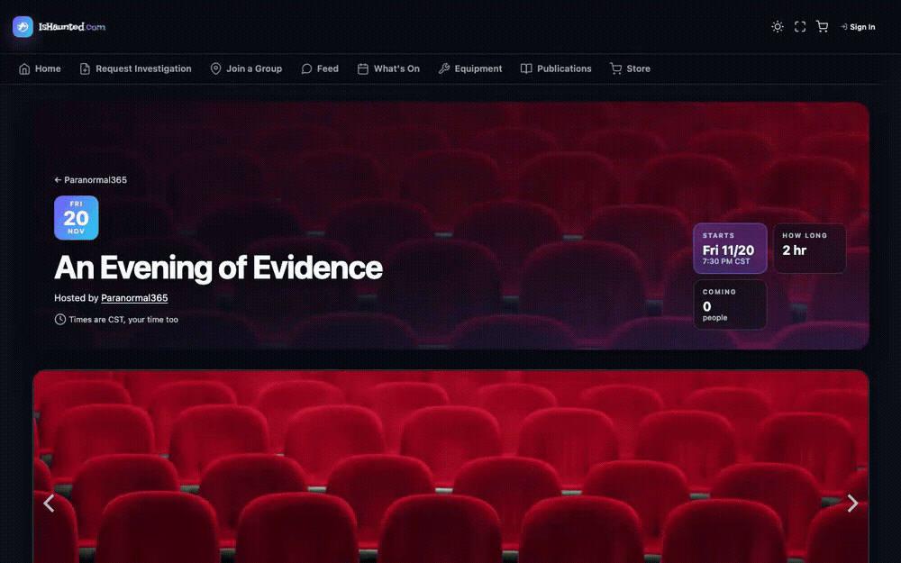
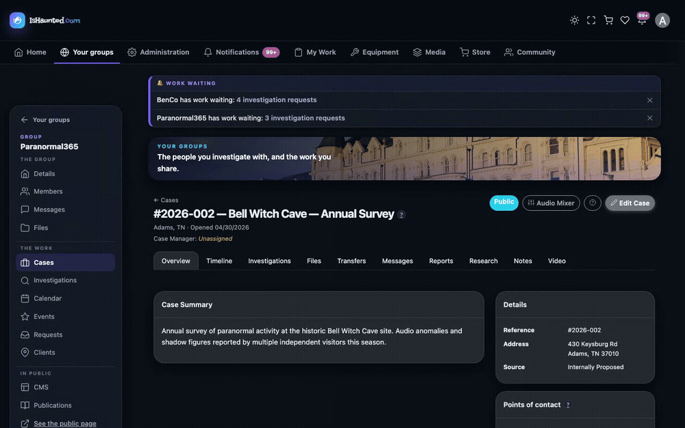
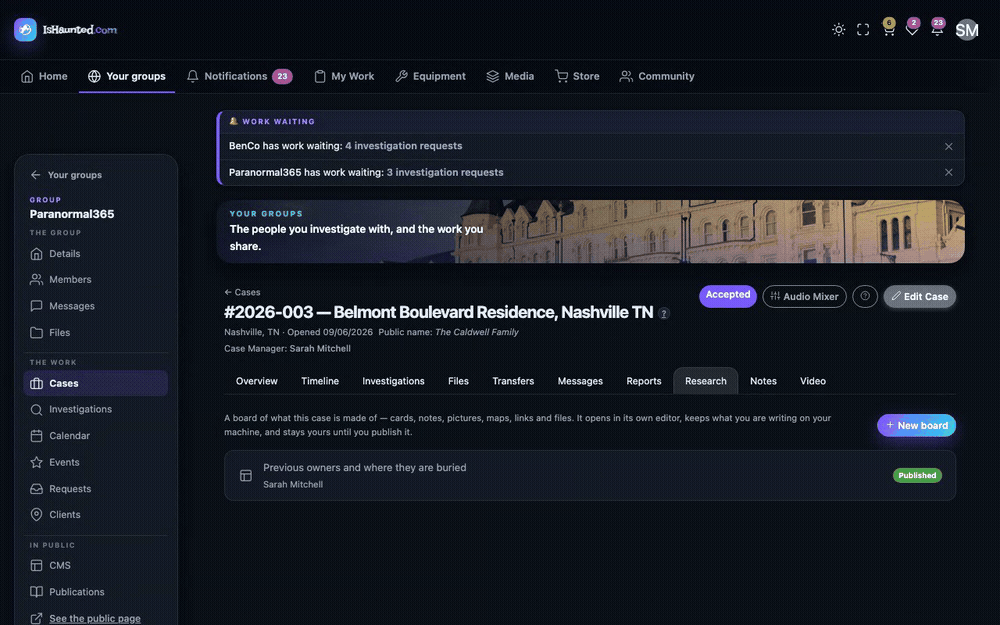

Product documentation
Everything IsHaunted does.
The complete product documentation — every screen, rule and safeguard, written for the people who use it.
Documents21
Sections6
Updated10/09/2026
About this document. This is the in-product help, reproduced in full and unaltered — the same text the application serves to its users. It describes the software as built. It contains no business, market or financial information, and no usage figures.
Contents
- Getting Started
- What IsHaunted.com IsPublic — no account needed
How the site works and who it is for.
- The FeedPublic — no account needed
Short public posts, mentions, tags and following.
- Reading PublicationsPublic — no account needed
Long-form writing from investigation groups, and how to follow the ones you like.
- The Equipment CatalogPublic — no account needed
Browsing the gear people use, make and model pages, photos, questions, and feedback.
- The iPhone and iPad AppsPublic — no account needed
What the apps do, how to get signed in, and what still lives on the website.
- Going to an EventPublic — no account needed
Asking for a place, choosing your own seats, and what the venue's answer means.
- Shopping at the StorePublic — no account needed
Finding gear, choosing options, your cart, placing an order, delivery, returns, favorites and reviews.
- Selling in the StoreSigned-in users
Your items in the store — adding them, asking for them to go on sale, and where each one stands.
- For Clients
- For Group Members
- Your Account
- Your Profile and PhotosSigned-in users
Display name, contact details, public and private photos, and who can see them.
- Your FilesSigned-in users
The files you upload, what sharing them means, and what happens when you delete one a group is using.
- Using the Audio EditorSigned-in users
Listening closely to a recording — regions, the spectrogram, EVP scanning, clips and the case mixer.
- Your EquipmentSigned-in users
Logging the gear you own, adding photos, and what stays private.
- Borrowing EquipmentSigned-in users
Asking to borrow gear, handing it over, and getting it back.
- Using the Video EditorSigned-in users
Turning raw footage into something worth watching — import, trim, title, and export.
- Group Administration
- Site Administration
Getting Started
What IsHaunted.com Is
How the site works and who it is for.
Written for: Public — no account needed
IsHaunted.com connects people who have experienced something unexplained at a property with
paranormal investigation groups who can look into it.
The short version
 The home page: search for groups near you, and browse the cases groups have published.
The home page: search for groups near you, and browse the cases groups have published.
A client describes what has been happening and asks one or more groups to take a look.
A group that accepts opens a case. From there, the client and the investigators share a
timeline of what happened and what was found, and the group schedules investigations — visits
to the property.
Nothing about a case is public unless the group publishes it. Even then, the client's real name is
replaced with a name they chose.
The iPhone and iPad app
 Near the bottom of the home page: the App Store badge, a QR code to scan from a computer, and
screens from the app.
Near the bottom of the home page: the App Store badge, a QR code to scan from a computer, and
screens from the app.
IsHaunted is also a free app for iPhone and iPad, available on the App Store. Select Field Kit for
iPhone & iPad at the top of the home page to jump to the app's section near the bottom. There, the
badge opens the App Store. If you're on a computer, scan the QR code with your phone's camera to get
there instead. Field Kit turns your phone into a meter, a recorder and a camera that all share the
same clock, then sends the whole night to your group's case.
The iPhone and iPad Apps explains everything it does.
Who does what
| You are |
You can |
| A visitor |
Browse groups and any cases that have been published. |
| A client |
Ask groups to investigate, log what happens, and follow the case. |
| A group member |
Work cases, record findings, attend investigations. |
| A group owner or administrator |
Configure the group, manage members, accept or decline requests. |
The map of published cases
Below the search on the home page, a map shows every case a group has published, with the same
cases listed underneath. When pins are close together at your current zoom level, they combine into
a single pin showing how many cases are there; zoom in and they separate. Click a pin to see the
case (or cases) at that spot. As you pan or zoom, the list below updates to match the part of the map
you're looking at.
 Three cases near Nashville, combined into one pin at this zoom level.
Three cases near Nashville, combined into one pin at this zoom level.
If your browser is allowed to share your location, the map starts there. If not, it shows the whole
country and works just the same. A pin marks the general area of a case, not its front door — the
site deliberately places it a little way off.
Voting on a published case
Anyone with an account can vote on a published case, and on individual pieces of evidence within
it. There are three choices: confirms, inconclusive, and disputes. You get one vote. If
you change your mind, your new vote replaces the old one.
 One button to vote with, and the choices it offers. Hover over anything in the row to see what it
does.
One button to vote with, and the choices it offers. Hover over anything in the row to see what it
does.
To vote, use the one button under the counts. It shows a hollow thumb until you vote, then the
filled icon for your answer, so you can always see how you voted. Press it and the three choices
appear underneath; hover over one to see what it means. Press your own answer again to take your
vote back.
Next to the three counts is a single score. It adds up the votes: confirms count +1,
disputes −1, and inconclusive 0. So a green +4 means the people who looked lean toward
something being there, and a red −3 means they lean the other way.
An inconclusive vote still matters. It adds to the number of people who looked without moving the
score, which is exactly what "I've seen it and I honestly can't say" should do.
The score is always shown with the number of votes behind it, because +4 from five people means
something very different from +4 from ninety. A score of 0 can mean the votes are evenly
split, or that everyone was undecided — the counts beside it tell you which.
The other buttons beside it
Four more buttons sit in the same row. None of them has a text label — hover over one to see what
it does.
- Share shows where you can share the case when you hover over it: Facebook, X, Bluesky,
Reddit, WhatsApp, email, and Copy link. On a phone, where you can't hover, pressing the button
opens your phone's share sheet instead.
- Repost puts the case on the feed as a post from you. It's a link to the case from you
personally — one person saying look at this. Posting on behalf of a group is different and needs
permission.
- Comments jumps straight down to the comments on this page, and shows how many there are.
- Report flags the case for a site moderator. Reporting never hides anything by itself.
If you're not signed in, you can still see the counts, with Sign in underneath.
Commenting on a published case
Under each published case is a box where you can comment on it. Comments are plain text — no
formatting and no attachments. You can delete your own comments at any time. You can report someone
else's, which sends it to the same moderation queue as any other report.
When you type a web address into a comment, a message or a feed post, a small card appears under it
showing what it links to. Cards only appear for addresses on this site — a case, a tour, an event
or a group. They're built from our own records, so they stay correct if something is renamed. A link
to another site stays a plain link, with that site's name shown under it.
Finding what's near you
 Browse Groups lists every group, closest first once you've given it a location to measure from.
Browse Groups lists every group, closest first once you've given it a location to measure from.
The home page shows what's happening close to you — walks you could book, public events you could
attend, and groups that serve your area. If your browser allows it, this uses your current location
automatically; if not, type a city, address, or zip code instead. Either way, choose how far to look
with the distance dropdown.
 Each tab shows a count, so you can see what was found before opening anything. A tab only appears
when it has something in it.
Each tab shows a count, so you can see what was found before opening anything. A tab only appears
when it has something in it.
A group that keeps its address private shows how close it is in rounded steps, such as Within 10
mi, and never a pin on the map.
Places is the fourth tab, and it works differently from the other three. A place is a location
rather than a group or an event — a cave, a mill, a hotel. The tab lists places near you where
groups have published their work. Opening one shows everything people have shared about that
location: which groups have investigated there, what they concluded, recorded sessions, photos from
events held there, and what visitors have posted.
A place only appears once there's something to see there. Private residences never appear, no
matter what has happened at them.
Tours are listed first, because a walk with a date on it is the most useful thing the page can offer
you. Every tour card shows a picture. If a walk hasn't added one yet, it gets a colored tile based on
its name, so it looks the same here, on the group's page, and on the tour's own page.
Once you belong to a group, your Home page becomes your dashboard: your next investigation, the open
cases in your groups (yours first), how many messages and requests are waiting, and any gear checked
out to you with its due date. Each tile opens exactly what it counts.
If a group hasn't written its own public page yet, the site builds one from what the group has
already entered: what kind of group it is, the area it serves, how many members it has, its public
cases, whether it's taking new cases, and its next public event.
Groups and events are shown differently on purpose. A group that has chosen to be listed is shown at
its exact location — that's the point of being listed. An event's location is only ever approximate,
because it's an invitation, not a business address. The exact place isn't shown until you're
attending.
Finding your way around
The bar along the top holds the site's main sections. It only lists what applies to you, so more
sections appear once you sign in, and more again if you run a group. Pick a section to open its page.
A little way down the page, the menu card on the left lists the pages in the section you're in.
It stays in place as you scroll, so it's always within reach.
- Your groups come first. When you're signed in, the bar starts with Home and Your groups.
Its card lists each group you belong to by name, plus All your groups for the full list with
each group's roster and settings. (On a phone, the menu lists your groups by name directly.)
- Notifications has its own spot on the bar. You'll check it often, so it isn't tucked away
inside anything.
- My Work, Equipment, Media and Community each open their own short menu in the card.
- Administration, for site administrators, holds the site-wide tools, grouped by purpose.
The menu goes deeper with you
An entry with a chevron (›) is a group of pages rather than a single page. Click it and the card
switches to that group's menu, with a way back at the top. When you open a page inside it, the
card stays on that menu, so the pages next to the one you're on are always one click away.
The same thing happens inside your own work:
- Inside a group, the card switches to that group's menu — Details, Members, Cases,
Investigations, Calendar, Files, Settings and the rest, showing only the ones your role gives you
access to — with ← Your groups at the top. These are the group page's tabs. On a phone, where
there's no room for the card, they appear as tabs across the top of the page instead. The guides
call them tabs either way.
- Inside one of the group's events, the card switches to that event's menu — the plan,
bookings, the door, menus, gallery and the rest — with the group's name at the top to take you
back.
A few more things worth knowing:
- A number beside an entry is work waiting for you. Its color deepens the longer it waits.
A group shows the total of everything inside it, so nothing gets hidden by being grouped.
- On a phone, the button beside the site name opens the full menu as a drawer. Its Filter
box narrows the list as you type, and searches inside the groups too — type "checkouts" and you
get just that one entry.
In the top right are the display controls: the sun or moon switches between light and dark
mode, and the arrows expand the page to fill the screen. This device remembers both settings.
Getting an account
Accounts are free, and the email address you sign in with is never shown publicly.
You don't need an account to ask for help. Anyone can open the investigation request form. Fill
it in, and the last step asks for your name, email and a password so the group has a way to reply.
Your account is created from the request itself — see
Requesting an Investigation. You do need an account before
you can join a group.
 Your @name is checked as you type, so you'll know if it's taken before you fill in the rest.
Your @name is checked as you type, so you'll know if it's taken before you fill in the rest.
To create an account on its own, go to the sign-in page and choose New here? Create an
account, or go straight to /signup. You'll be asked for five things:
|
|
| Your name |
What people see on your posts and your profile. Change it whenever you like. |
| Your @name |
How people mention you. Chosen once and permanent — see below. |
| Email |
Where we send the confirmation link. Never shown publicly. |
| Your time zone |
The time zone dates and times are shown in. It's already set to your device's zone; you can change it on your profile whenever you like. |
| Password |
At least 8 characters, with an uppercase letter, a lowercase letter and a number. |
Your time zone
Every date and time on the site is stored in one universal time and shown to you in your own time
zone. The sign-up form starts with the zone your device reports — most people just confirm it. It
lists US zones first, then every zone in the world by region.

If you never choose one, the site uses your device's zone, or Central time (Chicago) if your device
doesn't report one. You can change it any time on your profile.
Your @name
Your @name is your handle — like @sarahmitchell — and it's how people mention you or write to
you. It can only contain letters, numbers and underscores, and it has to be one nobody else has
taken. The page tells you as you type.
It can't be changed later. That's deliberate: your @name appears inside other people's posts,
and if it could change, those posts could end up pointing at someone else. Pick one you'll still be
happy with in a year.
Confirming your email
You can't sign in until you confirm your email. We'll send you a link; open it, then press the
button on the page it takes you to. If your account was created from an investigation request, that
page also shows where your request stands and the @name we chose for you.
You do need to press the button — just opening the link doesn't confirm your address. Email security
filters often open links automatically, so pressing the button is what shows a real person received
the email.
If the email never arrives, don't sign up again — a second account with the same address will be
refused, and so will a second investigation request from it. Instead, try to sign in. You'll see the
message "Confirm your email address first", with a Send the email again button. Press it and a
new link is sent.
Whatever happens, the reply is the same: "If that address has an unconfirmed account, a new link is
on its way." That's deliberate — it doesn't reveal whether an address is registered, so nobody can
use it to find out who has an account here. Check your spam folder too, since filters are often
suspicious of emails that contain links.
You can only request a new email once a minute, so pressing the button repeatedly won't send more.
If the link has expired, use the same button to get a new one.
Signing in with Apple or Microsoft
The sign-in page also offers Sign in with Apple and Sign in with Microsoft. Either one lets
you sign in with an account you already have there, without needing a password for this site.
The first time, we need to know who you are here. You can make a new account — it only asks for
a display name and a permanent @name. Or, if you already have an account here under a different
email address, you can link it instead: enter that account's email and password (and its code,
if it uses two-step sign-in). Linking is always offered because the address Apple or Microsoft shares
with us is often not the one you signed up with, and it's better to join your accounts than to start
a second one without any of your history.
Apple lets you hide your email. If you do, we receive a forwarding address that reaches you only
as long as Apple allows it, and your profile tells you so instead of showing an address you wouldn't
recognize. If you don't share any address at all, your profile warns you: Apple is then the only way
into your account, and there's no password reset link to fall back on until you add an email
address.
Your first minute
Right after you sign in for the first time, a short welcome walks you through the basics: what
people should call you, what brought you here (so it can send you to the right place — requesting an
investigation, finding a group, or starting one), and a ten-second tour of where everything is. You
can skip any step, and once you skip it, it won't ask again.
Two-step sign-in
You can choose to enter a code from your phone as well as your password when you sign in. It's
entirely optional and stays off unless you turn it on, under Security on your profile.
Nobody else can turn it on or off for you — not even an administrator — because only you have the
app that makes the codes.
 Scan the square code with your app, or type in the key beside it by hand.
Scan the square code with your app, or type in the key beside it by hand.
Any authenticator app works — Duo Mobile, Okta Verify, Google Authenticator, Microsoft
Authenticator, 1Password. Scan the square code with the app, enter the six digits it shows, and
two-step sign-in is on. If you can't scan, type in the key shown beside the code instead.
Save the recovery codes. They're shown only once. We keep a scrambled copy that can't be read
back, so nobody can recover them for you later. Each code lets you sign in one time if you lose your
phone. Print them, or keep them somewhere other than your phone.
To turn it off, you'll need a current code from your app. That stops someone at your unlocked
computer from removing it.
Signing in once it is on
Enter your email and password as usual. We'll then ask for the six-digit code. On a phone, the
keyboard can usually fill it in straight from the notification, so you rarely have to copy it
yourself.
If you've lost your phone, choose I can't use my app and enter one of your recovery codes
instead. Each one works once.
When sign-in will not let you in
The message tells you which of these happened, because each one has a different fix:
| What it says |
What to do |
| Invalid email or password |
Check both — or see the note below if you usually sign in with Microsoft. |
| Confirm your email address first |
Open the link we emailed you when you signed up — or press Send the email again in that message if it never arrived. |
| This account is locked for a few minutes |
Too many attempts. Wait — resetting your password won't help, because your password wasn't the problem. |
| Too many sign-in attempts |
The same thing, but counted across the whole site instead of just your account. Wait a minute. |
| Couldn't reach the sign-in service |
Nothing is wrong with your password — it was never checked, because the site couldn't reach the service that checks it. Try again shortly. |
If you're asked for a code, nothing has gone wrong — your password was right, and this is simply the
second step.
Forgot your password — or never had one
Forgot your password? on the sign-in page emails you a link to choose a new one. The link brings
you back to the site. If your email app breaks the link, the email also includes a code you can
paste in by hand.
The same steps work if you've never had a password: an account created by signing in with
Microsoft has no password. If you try to sign in to it with a password, you'll see "invalid email
or password", because there's no password set yet. Use the reset link to add one, and after that
both ways of signing in will work.
One thing to check first: the reset link is only sent to a confirmed address, and an account
created through Microsoft starts with its address unconfirmed. We sent a confirmation link when the
account was made. If you never followed it, sign in with Microsoft, open your profile, and press
Send the link again in the notice at the top.
Already signed in? Profile → Security → Password does the same thing without the email. It
offers Add password if your account doesn't have one, and an ordinary change-password form if it
does.
An account somebody else made for you
Sometimes an account is created for you before you ask for one — someone at IsHaunted.com sets it up
so you can be added to something. When that happens, you'll get an email telling you so, including
who created it.
Read it even if you were expecting it. The account was created with a password someone else
typed, so until you change it, you aren't the only person who knows how to sign in. The email has a
button that lets you choose your own password. That replaces theirs, and from then on the account
is yours alone.
If you weren't expecting it, choosing a password is still the right first step — it takes the
account out of anyone else's hands while you find out what happened. Reply to the email if you'd
rather the account was removed altogether.
This is one of the few emails you can't turn off. You should always hear about an account created in
your name, even if you've turned every other email off.
Public locations
Some places aren't anyone's home — a landmark, a cemetery, a bridge, a business that welcomes
visitors. Anyone signed in can add one to the map with Add a public location, on the Places tab
of what's near you.
Give it a name and a town. A street address helps, and keeps two people from creating two pages for
the same building — if the address is already here, you're taken to the existing page instead of
making a new one.
Homes aren't added this way. A private residence only gets a page through the group the client
invited, because somebody has to have asked for help. There's no way to type in a home address here
and publish a page about it, and that's deliberate.

Adding what you recorded
On a public location's page, anyone signed in can add a photo, a recording or a video, with a note
saying what it is — where in the building, what time, what to listen for. It joins that place's
evidence, alongside what groups have published from their own investigations.
Everything is checked before it appears. Most things go up right away; if yours is held, the page
tells you so instead of pretending it's showing. You can withdraw anything you've added.
The place itself
A public location's page has room to describe what the place is — when it was built, who lived
there, what it is now. Anyone signed in can write it, and anyone after them can improve it. It's
plain text only, so stray links or pasted layouts can't end up on a page that anyone might read.
You can also add photographs of the building — the front, the grounds, the rooms in daylight.
Choose "a photograph of the place itself" when you add one.
These are kept separate from evidence, and that's the whole point. A daylight photo that shows a
reader what a staircase looks like, and a photo of the same staircase where someone thinks they see
a figure, are two very different claims. Photos of the place are never voted on or counted. If they
were mixed in with the evidence, every number on the page would be wrong and nobody could tell what
was being claimed.
What the evidence says
Anyone signed in can vote on a piece of evidence: something here, can't tell, or not
convinced. Above the list, the place's page adds these up: how many pieces of evidence it has, how
many votes have been cast, and what share of the votes falls each way.
Each file counts once, however it got there. If the same photo was published in an investigation
and also added to the place directly, it's one piece of evidence, not two — otherwise a place would
look like it had more evidence than it does.
There's no leaderboard. Each place shows its own figures, and the site doesn't rank one property
against another. These are real buildings with real owners, and a pile of votes isn't enough to call
one "the third most haunted house in Tennessee."
The overall score is a simple sum — +1 for something here, 0 for can't tell, −1 for not
convinced — and it's always shown beside the number of votes, because a score means little without
knowing how many people voted.
Empty, or broken?
When a list shows nothing, it means one of two things, and the page tells you which.
"Nothing here yet", or a sentence like "This group hasn't shared any files yet", means the
list really is empty. Nothing is wrong, and there's nothing to retry.
"Couldn't load this", in a bordered box with a Try again button, means the page couldn't
fetch the list at all. What you're looking for is still there — the site just couldn't reach it, or
wasn't allowed to. Try again first. If it keeps happening, the box usually names the reason, and
including that on the contact form helps us find the problem much faster.
Notifications
The bell in the top bar counts everything waiting for you, across several different kinds of
thing. Open it, or the Notifications page, to see what they are.
The sidebar's Notifications entry, the bell and the page all show the same number, and it's
always the total of the items listed. If the bell says four, four things are listed.
|
|
| Replies on your cases |
A group has written back about a case of yours. |
| Client messages awaiting a reply |
Somebody has written to a group you belong to. |
| Unread group messages |
Internal mail at one of your groups. |
| File permission requests |
Somebody wants access to a file you own, and is waiting for your answer. |
| Equipment requests & overdue gear |
Waiting for your decision, or overdue. |
| Posts that mention you |
Somebody named you with an @name in the feed. |
| Unread messages |
Sent to you through the platform. |
| Bookings waiting on you |
Somebody has asked for, or picked, a place at an event where you decide bookings. |
| Holds running out |
Places picked at your event that will lapse within a day unless somebody confirms them. |
| A venue answered you |
Your booking at an event has been decided. |
| Your hold is running out |
You picked places, the venue hasn't confirmed them, and they'll lapse within a day. |
Every row opens the thing it counts. Posts that mention you opens the feed's Mentions tab
— posts that name you, and posts with replies that do. Unread messages opens the oldest unread
message and marks it read, so the number goes down as you read. Bookings waiting on you, Holds
running out and a tour's sign-ups open the page for that event or date, rather than your list of
groups.
 Everything waiting for you, grouped by type.
Everything waiting for you, grouped by type.
Empty categories aren't shown. The page is a list of things to do, not a dashboard full of zeros.
The color shows age, not importance. One item from last week gets a more urgent color than five
from this morning, because the older one is the one somebody is still waiting on.
If you decide bookings for a group, the page also has Letters about bookings, where you choose
how often that group sends you updates about them.
Opening something is what clears it — a message you've read, a post you've opened, a request you've
answered. Nothing disappears before you've seen it.
Finding help
 The help index. You only see the topics that apply to your account.
The help index. You only see the topics that apply to your account.
Every page that does something non-obvious has a small ? beside it. It opens the relevant part
of this help in a new tab, so you don't lose your place.
Getting in touch
Contact, in the footer, reaches the people who run the site — not a group. Use it for anything
about the site itself: an account you can't get into, something that looks broken, or a question
this help doesn't answer. To ask a group to investigate something, send a request instead. That's a
different thing entirely, and it goes to the group, not to us.
You don't need an account to contact us. After you send the form, you'll get a tracking link —
keep it. It's how you read our reply and see whether your message has been picked up, and it's the
only way back to a message sent without an account. If you were signed in when you wrote, the
message is also linked to your account.
Joining a group — or starting your own
On a group's public page, when you're signed in, you'll see an Apply to join box (if the group is
taking applications). Add a line about yourself if you like, send it, and the group will respond.
You'll see the status of your application right there on their page.
Or start your own: Organizations → Start a Group walks you through four short steps — what
you're starting, with its name and web address; where you work (optional, but it's used for the
"near you" search); whether you're taking applications; and a final review. Only the first step is
required, and if you close the tab, a draft is saved so you can pick up where you left off.
You can also start from the Pricing page. Each plan's Start a group on this plan button opens
the same steps with that plan shown at the top, and once the group is created, you go to its billing
page to confirm the plan. Starting on the free plan works the same way, with nothing to pay.
The first question is what kind of group this is, because it sets the starting point for
everything else:
|
|
| Investigation group |
Starts private: your address is hidden from the public and your calendar is members-only. Cases stay between you and your clients. This is what most groups are, and it's the default. |
| Ghost walking tour |
Starts public: your meeting point is shown and searchable, and the tours you schedule are visible to everyone with no account needed. A tour nobody can find is no use to anyone, so it doesn't start hidden. |
Neither choice locks you in — a tour company can take investigation requests, and an investigation
group can run public tours. It's just a starting point, and you can change all of it in your group's
settings later. If you run tours as well as investigations, turn on runs public tours in your
settings. You'll be listed under walking tours in the group finder, while your badge still shows
what you mainly do. You're the owner from the start, and your new group's page offers a quick tour
of what to do next. You can relaunch it any time from the ? button on your group's page.
What you'll see as a new member
Once a group accepts you, its hub shows you what every member gets: the group's details, the member
list, the calendar, messages, and files. Cases and investigations aren't included by default —
those tabs appear when the group gives you a role that includes them (many groups use an
"Investigator Role" for exactly this). Titles like Probationary or Senior Investigator show
seniority and don't unlock anything on their own. If a tab you expect is missing, you're missing a
role — it isn't a bug. Ask whoever runs your group.
Investigating on your own
You don't need a group. Open any public location's page — a landmark, a cemetery, a museum —
and if you're signed in without a group of your own, you'll see Start investigating on your own.
Pressing it first explains how it works, then does two things at once: it creates a private space of
your own to keep your investigations in, and it opens the form to schedule your first visit to the
place you were looking at. The space is free and it's yours alone. Nobody else joins it, and it never
appears in any list of groups. It's there so your investigations, evidence and reports have
somewhere to live.
 What the button explains before it does anything: you get a free space of your own, and what you
record at a public place is public.
What the button explains before it does anything: you get a free space of your own, and what you
record at a public place is public.
What you record at a public location is public. That's the trade-off, and it's worth
understanding before you start: your visit is added to that place's own page, where anyone can read
it. One person's night somewhere is an anecdote; the same place recorded by eleven people is a record
worth having, and free accounts are what build it. If you want your work to stay your own, that's
what a plan is for — see
Having a plan, and not having one.
Private homes are never part of this. Work at a private residence is client work and needs a paid
plan, and a home's page doesn't offer any of these buttons.
You can also just post about a public place, without a space or a visit: see
Posting about a place. And what you record on your phone can be
published to a place's archive the same way — see the mobile apps.
How much you can store
A free account has a storage allowance, and everything you keep to yourself counts toward it:
recordings, photos, video projects, equipment pictures, anything you add to a public location, and
anything you post. The allowance is the same for everyone, and a site administrator can change it.
Contributing gives you space back. A recording published to a public location's archive no
longer counts against you, because it helps make the archive worth reading for people who have never
been there. A recording only you will ever see still counts. So the allowance is a nudge, not a
bill: contribute, and you get the room back.
What doesn't count. Work that belongs to a group — a case's files, a group's equipment — is the
group's, not yours, so it never counts against you. Neither does the old version of a file you've
replaced: trimming a long recording down to a short one lowers your usage, as you'd expect. And if
you belong to a group on a paid plan, none of this applies to you.
What does count, and is worth knowing: a clip you cut from a recording is a second file. If you
keep the original too — as most people do — you're storing both, and both count. Deleting either one
frees its space right away.
Being told before you run out
You don't have to keep an eye on it. When you've used about 90% of your allowance, the site sends you
a message letting you know, with nothing you need to do yet. At 95% it sends a stronger warning,
because your next upload may be refused.
Each warning is sent once. If you free up some space and drop back under 90%, the warnings reset,
so if you fill up again later, you'll be warned again instead of hitting the limit without notice.
There are three ways to make room, and the messages list them: publish a recording to a public
location, delete files you no longer need, or join a group on a paid plan, which removes the limit
entirely. Nothing is ever deleted to make room — the limit only stops you from adding more; it never
touches what you already have.
A group's own pages
Every group has its own page at /o/their-name, and everything they publish is linked from it. A
row of buttons across the top takes you to their Cases, their Events, any pages they've
written, and back to their home page.
 What the group is, where it works, how many people it has, and the next event you could go to.
What the group is, where it works, how many people it has, and the next event you could go to.
Cases shows the investigations they've chosen to publish.
 If the group concluded a case is haunted, it's marked along the card's left edge. Click anywhere on
the card to open it.
If the group concluded a case is haunted, it's marked along the card's left edge. Click anywhere on
the card to open it.
Each case has a page with the group's summary, what they found (if they chose to publish it), a
timeline of what happened and when, and a community rating you can vote on once you're signed in.
What's on
What's On in the menu lists every public event any group has opened to everyone — walks,
investigations and open meetings together, soonest first.
 Grouped by day, so each date is shown once and each event under it only shows what's different
about it. The bar on the right shows how full it is.
Grouped by day, so each date is shown once and each event under it only shows what's different
about it. The bar on the right shows how full it is.
Times are shown in the event's own time zone — or yours, if you prefer. A walk that starts at
eight in Nashville shows as eight wherever in the world you're reading it, with the time zone named
beside it. That way this page, the event's page, the email you're sent and the calendar file all
agree. Switch Local time · My time at the top of the list to see every event in your own time
zone instead. The site remembers your choice, and hovering over any time shows it in the other time
zone. If a group hasn't set a time zone for an event, it's shown in the group's home time zone.
Going to a group's public event
Public events are open to anyone — you'll find them on a group's page and under Join a Group.
Sign up with your email address, click the link we send you, and you're on the list. (That also
creates an account for you, with no password to come up with.)
 Signing up is the first thing on the page. When the event is a tour date, the meeting point is shown
on a map, because a walk's meeting point is exact; an ordinary event only shows the town.
Signing up is the first thing on the page. When the event is a tour date, the meeting point is shown
on a map, because a walk's meeting point is exact; an ordinary event only shows the town.
Afterward, if you captured something, you can offer it to the group from the event's page. A
member reviews every submission. If yours is accepted, it becomes part of that event's public
record, credited to you. If it's declined, you're told why, and your file stays private. You can see
the status of each of your submissions on the same page.
Ghost walks and tours
A tour is a walk that a business sells: it has a meeting point, a length, and dates you can sign up
for. Tours show up on the map on the home page, in What's near you, and on the business's own
page. Each one has its own page with its pictures, its guides, and when it runs.

Asking for a place
You ask for a place on a walk, and the tour confirms it. Say how many of you are coming — one
sign-up can cover several places — and the page will show your seat is with the tour until someone
there makes a decision.
 Two places reserved, and the optional button to let the tour know you've seen it.
Two places reserved, and the optional button to let the tour know you've seen it.
When your place is approved, you'll get an email with the meeting point, the time in the tour's own
time zone, who's leading it and what they look like, and a calendar file so your phone reminds you.
You'll get the same email again the night before. If you ask for something the tour can't fit,
they'll let you know and you can try another night.
Payment is arranged with the business. Nothing is charged through this site. The tour's page and
the email explain how they'd like to be paid, and when they approve your seat, that means the
payment side is settled between you.
Once your seat is reserved, Got it lets the tour know you've seen it. That's entirely optional —
your place is held either way. It just tells them to expect you.
A walk that's full still accepts requests. You go on a waiting list instead, and the tour will get
back to you if a spot opens up.
Afterward, you can rate the walk out of five and leave a few words. Anything you sent in from the
night is on the tour's page for you to download.
Times are shown in the event's own time zone — or yours, if you prefer. A walk that starts at
eight in Nashville shows as eight wherever you're reading it, with the time zone named beside it, so
the page, the email and the calendar file all agree. Local time · My time on the page switches
every time to your own time zone, and the site remembers your choice.
At the bottom of a tour's page, you may find the walk's other accounts — its website, Instagram,
YouTube and so on — if the business has added them.
Getting Started
The Feed
Short public posts, mentions, tags and following.
Written for: Public — no account needed
The Feed is the site's place for short public posts. Anyone signed in can post, and everyone
signed in can read. It's where you share what you found last night, without writing it all up.
Long pieces don't belong here: a post can be at most 1,000 characters.
 A post. #EVP and @sarahmitchell turned into links automatically — you only had to type them.
A post. #EVP and @sarahmitchell turned into links automatically — you only had to type them.
Writing a post
Type in the box at the top of the feed and press Post. Posts are plain text with no formatting,
so they're quick to write and quick to read.
Mentioning somebody
Type @ followed by the person's name, like @sarahmitchell. If it matches someone, their name
becomes a link and they're notified that you mentioned them. If it doesn't match anyone, it stays as
plain text, which makes a typo easy to spot.
An @name is the permanent name someone picked when they created their account, not their
display name. So a mention still points to the right person even if they later change how their
name is shown.
An email address in a post isn't treated as a mention. ben@example.com stays an email address.
Tagging a post
Type # followed by a word, like #evp or #bellwitch. The tag becomes a link to every other
post that uses it.
 Clicking a tag shows every post that uses it. You can share the page's address.
Clicking a tag shows every post that uses it. You can share the page's address.
Capitalization doesn't matter: #EVP, #evp and #Evp are the same tag, so they all show up
together. Tags can't start with a number, because #1 and #2026 are almost always a list number
or a year, not a subject.
Saying what a post shows
When you attach a photo or video, you can choose a category from the same list of experience
types used everywhere else on the site (Apparition, Voices / Whispering, EMF Spike, and so on).
It's always optional, and a text-only post doesn't need one.
Choosing a category does two things. It adds a small label to your post that readers can click to
see other posts of the same kind, and it tells the site what your footage is supposed to show. If
the site's own checks disagree — for example, a clip labeled as voices that has no audio track —
you, and only you, will see a gentle note on your post suggesting a different category. Nothing
is blocked and nobody else sees the note. An honest mislabel isn't treated as misconduct, and
fixing it takes one click. Until it's fixed, a post whose content clearly doesn't match its label
ranks a little lower in For You.
Posting straight from the video editor
When you export a finished video in the editor, a Post to the feed option appears next to
"Upload to server" and "Save to my machine" (as long as you're allowed to post). If the video was
made from a case, you'll see which case before anything goes public. Footage from a
private engagement needs an extra confirmation: the client was promised privacy, so publishing
any of it has to be a deliberate choice, and that choice is recorded.
The group that worked the case decides separately whether the post carries their name. Until
they claim it, the post is credited only to you. A claimed post shows the group's name, a link to
their page, and a Group verified badge, which means the group vouches that the footage is what
it says it is. Moderator reviewed appears when a site moderator has personally checked and
approved the video. Both badges help a post rank higher in For You.
Posting about a place
A public location's page has the same posting box, under Posts about this place. A post you
write there is an ordinary post that's also linked to that place. It appears on the place's page,
in the feed, and anywhere else the post shows up, with at {the place} underneath linking back
to the place.
That box works differently in two ways, both on purpose:
- Anybody signed in may use it. Posting on the main feed is for people who belong to the site —
members of a group, and clients whose case is being worked. A public location's page is
different. It's a shared record of somewhere anyone can visit, and the visitor who went on the
evening tour and photographed something is exactly who it's for.
- Private residences have no box at all. Posting about what happens inside someone's home needs
their permission, and there's no way to ask for it yet. So a home's page doesn't accept posts.
 The same box, on a public location's page. Posts written here show at the place wherever
they're read.
The same box, on a public location's page. Posts written here show at the place wherever
they're read.
Everything else works like any other post: photos and videos go through the same check, reporting
and hiding work the same way, and replies belong to the thread rather than to the place. See all
posts about this place opens the full list on its own page, which you can share.
The tools under the box
 Writing a poll. Hover over any icon in the row to see its name.
Writing a poll. Hover over any icon in the row to see its name.
Under the writing box is a row of small icon buttons with no labels. Hover over one to see what it
is.
| Tool |
What it does |
| Photo or video |
Attaches a photo or video to the post. Only one file per post. |
| GIF |
Opens a GIF picker from Giphy. Choosing one adds its address to your post, and the GIF plays wherever the post appears. |
| Poll |
Opens the poll writer described below. |
| Emoji |
A short list of the emoji people use most. Anything your keyboard can type works too. |
| Schedule |
Picks a time for the post to appear. |
| Location |
Adds where you're posting from. |
Writing a poll
A poll has a question and between two and six answers. Use Add an answer to add one, and
the × next to an answer to remove it. You can't remove the last two, because a poll needs at
least two answers.
Closes sets how long the poll runs: 6 hours, a day, 3 days, a week, or never. Check Let
people pick more than one if more than one answer can be true.
Blank answers are dropped when you post, so if you fill in two of four boxes, you get a two-answer
poll. To remove the whole poll, use the × in its top corner.
 An answered poll. The bar sits behind each answer instead of beside it, so long answers get the
full width.
An answered poll. The bar sits behind each answer instead of beside it, so long answers get the
full width.
Anyone signed in can answer a poll. You get one answer unless the poll allows more, and pressing
your answer again takes it back. Everyone can see the counts from the start, not just after
voting — the counts are public anyway, and hiding them only leaves people guessing. The number under
a poll counts people, not answers, so a poll that allows several answers still shows how many
people took part.
Scheduling a post
Pick a date and time, and the post waits until then. The time is on your own clock, wherever
you are, so you never have to work out a time zone.
Until it goes up, only you can see it. It's marked Goes up … and gives you two options:
Post it now publishes it right away, and Cancel it takes it back. Since nobody else has
seen it yet, canceling leaves no trace.
Saying where you are
The location tool asks your browser where you are, turns that into a place name, and adds
said at … under your post, with a small icon that opens the spot in Maps. It asks every time and
never uses your location without asking. Press Remove to take it off before you post.
Links in a post
A web address you type stays in your sentence where you typed it, and a small card under the post
shows where it leads.
 The address stays in the sentence. The card underneath shows where it leads.
The address stays in the sentence. The card underneath shows where it leads.
Full cards are made for addresses on this site — a case, a tour, an event or a group — using
information the site already has, so the card stays correct even if something is renamed later.
The site never visits other websites to build a card, so a link to another site gets a simpler
card that just names that site.
Promoted cards
Every eighth spot in the main feed shows a card instead of a post. The cards take turns between a
group promoting itself (always marked Promoted) and the site's own link to the group finder.
If you choose Show groups near you on a promoted card, your browser asks for permission to use
your location, and the cards are re-sorted with the nearest first. Your location is used only for
that sorting and is never stored — it's forgotten as soon as you leave.
Reading
|
|
| All posts |
Everything, newest first. |
| Following |
Only people you follow, plus your own posts so you can see what you just wrote. |
| Mentions |
Posts that mention your @name, and posts with replies that do. The Mentions row in the bell opens this. |
Click a post's reply count to open it and read the replies. The "mentioned you" badge on your
Feed menu item clears only when you open the post, so it never disappears before you've seen it.
While the page is open, it checks for newer posts in the background. When there are some, a
"new posts" button appears; click it to load them without losing your place. The site's home
page also shows a few of the feed's current top posts.
When a group's session starts
A guide, organizer or investigation lead can start a session for everyone from the app. When they
do, a card in the feed says so and offers Open in the app. You join in Field Kit on your phone,
since that's where the recording happens. On a phone with the app, the button opens the session
there, and the app also lists it under Happening now.

For a public tour or event, the card shows up in everyone's feed. For anything private, only the
people it's meant for see it. Either way, the card goes away six hours after the tour or event ends.
Following
Press Follow next to someone's name on a post, or on their feed page. Following is one-way, and
the other person isn't asked. It changes what you're shown, not what you're allowed to see —
everything in the feed is visible to signed-in people either way.
Press it again to unfollow.
Reporting a post
If a post shouldn't be here, press Report on it. An administrator reviews it and decides what
to do.
Two things to know:
- Reporting does not hide anything, even when lots of people report the same post. A person
makes that decision, so a group of people who dislike someone can't get their posts removed by
ganging up on them.
- You can report a post once. Pressing it again does nothing, and the button changes to
Reported so you know it worked.
You can't report your own post.
Taking down your own post
Your own posts and replies have a Delete button (in the app, it's in the post's … menu).
You're asked to confirm — Delete this post? — because it can't be undone. A deleted post
disappears from the feed for everyone right away, and its replies go with it, since there's no
post left for them to answer. Deleting one of your replies doesn't affect the post it answered.
Nobody else can delete your post. If someone else's post should come down, report it.
If the feed is not there
An administrator can turn off the feed for the whole site. When that happens, the menu item and the
feed's pages simply don't appear. That's a choice made by whoever runs the site, not an error.
Getting Started
Reading Publications
Long-form writing from investigation groups, and how to follow the ones you like.
Written for: Public — no account needed
Publications are where groups write at length. Each publication has its own title — Field
Notes, The Ridgeway Case, whatever the group calls it — and inside it are posts: case write-ups,
research, notes from a night that turned into something worth explaining properly.
Posts on the Feed are quick updates; a publication is for longer, more
considered writing.
You do not need an account
Anyone can read everything that's published. There's no sign-in, no email address to give, and
nothing to dismiss before you can read. If you share a link to a post, the person you send it to
can read it right away.
You only need an account to subscribe, which is how you keep up with the groups whose writing
you like.
 Every group with something published. The card shows how many posts there are and when the most
recent one went up.
Every group with something published. The card shows how many posts there are and when the most
recent one went up.
Finding something to read
Publications in the left-hand menu — under Community once you're signed in — lists every
publication with at least one published post. Publications with nothing in them yet aren't listed.
Open one to see its posts, newest first, each with a line or two about what it covers.
 A publication's own page. The group's name links back to its profile, and Subscribe is in the
top right.
A publication's own page. The group's name links back to its profile, and Subscribe is in the
top right.
Subscribing
Subscribe on a publication's page lets the group know you're reading. If you aren't signed in,
the button says Sign in to subscribe instead, and brings you back to the same page once you've
signed in.
Your subscriptions appear at the top of the Publications page, with the date of each one's
most recent post, so you can see at a glance who has written something new.
On a publication you already follow, the button says Subscribed; press it to unsubscribe.
Nothing is lost by unsubscribing — you can subscribe again later, and everything published stays readable either way.
Posts marked "Subscribers"
Some posts may be marked Subscribers. You'll see the title and the opening lines, and the rest
is only for people who subscribe.
Right now, no posts on the site are marked this way — every post is free to read in full. We
mention it here so you'll know what it means if you ever see it.
Reading a post
Each post is a single page: a title, the date it was published, and the piece itself. There is nothing to
expand, no "continue reading", and no interruption partway through.
If a link to a post doesn't work, the post has been withdrawn. Groups can take a post down —
usually because something in it was wrong — and it disappears from the site right away.
Getting Started
The Equipment Catalog
Browsing the gear people use, make and model pages, photos, questions, and feedback.
Written for: Public — no account needed
The catalog is public. Anybody can browse it, read a model's page and its questions, and see what
people use; asking a question or sending feedback needs an account. To record gear of your own, see
Your Equipment.
The public catalog
 The catalog lists makes and models, and — on its second tab — the gear people have chosen to list. It never names an owner.
The catalog lists makes and models, and — on its second tab — the gear people have chosen to list. It never names an owner.
The equipment catalog is Equipment → Catalog in the menu, or just Equipment if you aren't
signed in. Anyone can browse it, including visitors who aren't signed in. It has two parts.
Makes & models lists the gear that exists, by make and model. Gear people own lists individual
pieces whose owners chose to list them. Neither part ever shows who owns anything, or any serial
numbers.
When you add a make or model that isn't listed yet, it goes into the catalog as a proposal. You can
use it right away on your own equipment. It appears in the public catalog once a site
administrator approves it, which keeps the shared list from filling up with typos and duplicates.
Make and model pages
Every make and model has its own page, reached by clicking the make and model under any piece of
gear. It brings together what everyone who owns one has contributed: how many are owned, how many are
offered for borrowing, the manufacturer links people have added, and their photos.
Everything on that page is anonymous. It never says whose photo is whose, or who owns how many.
If you can click a photo, it's because you're allowed to open that piece: its owner listed it
publicly, shared it with a group you're in, or it's your own. Everyone else sees the same photo
without a link.
The manufacturer's page
Each piece of equipment can have an optional link to the manufacturer's own page for it. Links that
people add for the same make and model are collected on that model's page, so one person's research
into a recorder's specifications saves the next person from searching.
Photos
Each item can have as many photos as you like. The first one you add becomes the main photo — the
one shown first — and you can promote any other photo to main, or remove any of them.
Photos load when you open your equipment list rather than as thumbnails in a long grid, so a list
with many items stays quick.
You set Hide from the model page on each photo separately. A photo of the piece against a plain
wall may be just right for the make and model page, while one taken in your living room may not be.
A hidden photo stays on your item; it just isn't shown with everyone else's photos on the model page.
Captions you write are shown publicly with the photo, so write them with strangers in mind.
Questions and FAQs
There are two related features: one public and one private.
Things worth knowing is the FAQ you write about your own piece — anything a borrower would want
to know before asking for it. It appears on the item's page. Entries from publicly listed items also
appear on the make and model's page, alongside other owners' entries. FAQ entries never say who
wrote them, anywhere — not even on your own item's page.
Questions are asked by someone thinking about borrowing. They arrive in Gear Questions in
the main menu, where you can answer or decline, and then add a good answer to the FAQ.
The anonymity, exactly
A question is anonymous in both directions. You won't see who asked, and they won't see who
answered. The notification only says that a question has arrived.
This lets people ask whether a piece has a quirk they should know about, without worrying that the
question will affect whether they're lent the gear.
The anonymity covers questions and FAQs only. Borrowing is not anonymous — if that person goes
on to ask to borrow the piece, you'll each see who the other is, so you know who's holding your
recorder. A group's shared-gear list also names owners.
Publishing an answer to the FAQ copies the text; the conversation itself stays private. You can
rewrite the answer first, since a reply to one person doesn't always work as a public answer. The
original conversation stays as it was. Each answer can be published only once.
Feedback and moderation
After a loan comes back, both sides can leave feedback about the other. Neither side ever sees what
was written about them, on any page, and nobody is notified when feedback is left about them. What
lenders write is shown to future lenders deciding on that person's next request. What borrowers
write is shown, without their name, to other borrowers thinking of asking that lender. The full rules are in
Borrowing Equipment.
A group's Administrators and Owner get an Equipment feedback link on the group's Equipment
tab. Nobody else sees the link, because nobody else can open the page. It
lists all the feedback about the group's gear and its members' loans, with both people named, and
anything inappropriate can be removed. It's the only place on the site where feedback shows both who
wrote it and who it's about, so that complaints can be acted on.
Who is looking
Each piece keeps a count of how many times its page has been opened and how many times someone
followed its manufacturer link. Those numbers are shown to the Administrators and Owner of the group that owns
the equipment, and to site administrators. Nobody else sees them — not other members, and not the
individual owner of a personal piece.
The counts are totals only. Nothing is recorded about who looked.
Getting Started
The iPhone and iPad Apps
What the apps do, how to get signed in, and what still lives on the website.
Written for: Public — no account needed
There are native apps for iPhone and iPad — really one app that runs on both, with a layout suited
to each. It uses the same account and the same data as the website. Sign in on your phone and you'll
see the same groups, cases and investigations you see in a browser.
The app is built for the part of this work that happens away from a desk — standing in a
building at two in the morning with one hand free. Anything long or fiddly (writing a report,
editing video, laying out a public page) works better on the website, and always will.
Getting the app
It's free on the App Store: IsHaunted for iPhone and iPad.
The same link is at the bottom of every page on the website. If you open the website in Safari on an
iPhone or iPad, a banner at the top offers to open the app — or to get it, if you don't have it yet.
On a computer, the app's section near the bottom of the home page has a QR code you can
scan with your iPhone's camera.
The app's section on the home page: Apple's badge opens the App Store, and scanning the QR code with
your iPhone's camera does the same.
The app guide (PDF) shows what the app does in six pages,
using screens from the app itself: Field Kit, marking and watching, playing a night back, and events
and the door.
What you need an account for — and what you don't
Reading the feed and browsing public events need no account at all, just like on the website.
Sign in when you want to take part.
Signing in works the same way as in a browser, including two-step codes if you've turned them on.
You can also sign in with your Apple Account. If you already have an account here with the same
email address, that signs you into it instead of creating a second one. If you don't, the app asks
for the name people will see and your @name, and creates an account for you. Apple has already
confirmed the email address, so there's no confirmation link to wait for. Choosing "Hide My Email"
works too — Apple gives us a relay address that forwards to you. Once you're signed in, you stay
signed in; the app won't ask again every time you open it.
Anywhere the app needs an account — My Cases, a case, Investigations, Notifications, asking for a
place on a night — it says so and offers a Sign in button right there, so you can sign in on the
spot instead of being sent off to Profile. The sign-in sheet has Forgot your password?, which
opens the website's password reset (the email it sends links back to the website), and Create an
account.
Setting up two-step sign-in works a little differently on the phone. On a phone, the app is
itself the second device, so there's no QR code to scan. Instead, the app shows you the key to copy,
and offers a link that passes it straight to your authenticator app. Your recovery codes are shown
once, with a button to save or send them — the site can't show them to you again.
What's in the app today
|
|
| The feed |
Scroll it signed out or signed in, open a post and its replies, tap a hashtag or category to see everything like it, and open someone's profile. Photos and video play in the app. |
| Posting |
Write a post, attach a photo or video from your library, or take one with the camera right there — something a phone genuinely does better than a laptop. Add a category so people can find your footage. Like, reply, follow and report — and delete your own post from its … menu. |
| Notifications |
Everything waiting for you, in the same categories the website's bell uses. The color shows the age of the oldest item, not the count — fifty messages from this morning just means a busy day, but one from last week is the one worth chasing. Each row opens exactly what it counts: You were mentioned opens the posts that name you. |
| Your cases |
Your cases and their timelines — what happened, what the group has written back, and photos attached to either. Log something that happened right from the case, with photos from your library or one you take on the spot. Say when it happened — or, if you don't know, say so rather than guessing. Reports your group has published are there to read in full, share or save, and you can message your group about the case, with everything you send and everything they send back in one conversation. Your contacts are listed, and the group's visits to your case show when each one is, where, and the latest you can cancel it. |
| Investigations |
The ones you're on, split into upcoming and past, with your assigned role, any evidence deadline, and the group's case behind each one. Where you've been shows the places you've investigated on a map. On an iPhone the tab bar only has room for five tabs, so group members find Investigations under Profile → Investigations; on an iPad it's in the sidebar. |
| Haunted Tours |
Ghost walks near you, or near a place you look up, with how far away they are and when they next run. No account needed. Tap one to open the walk — where you meet, how long it runs, who leads it and the upcoming nights — then tap a night to open it. That's where you ask for a place. Location is asked for, never taken: the tab opens on a list, and if you'd rather not share where you are, type a city instead. |
| Events |
Public events, readable without an account, where you can reserve a place. A night that belongs to a walking tour shows the tour's name under its title, since a business running three walks would otherwise show three rows all called "Saturday walk". Times are shown where you are, with the time zone named beside them, and Local time switches to the time where the event takes place — for example, 3:08 PM CDT for a Nashville walk (see Times and time zones, below). If an event's organizer never set a time zone, it's shown in Central time and labeled that way. Add to calendar puts it straight into your own calendar. Tap a night to open it, with your seat, directions to the meeting point and who's guiding. A night that belongs to a hosted event — a weekend at a venue, a dinner and a show — shows your booking status and your pass instead; see below. |
| Field Kit |
Your phone as an instrument during an investigation — see below. |
| My evidence |
What you've offered at other people's public events. You can always open it, whatever they decided, and you can add it to the archive of the place where it was taken. |
| Your account |
Sign in and out, create an account, confirm your email, change your password, and turn two-step sign-in on or off. |
If the app can't do something yet, it says so plainly instead of showing you an empty screen. A
count with no screen behind it yet is still listed on Notifications — you just can't tap it, so it
doesn't pretend to lead somewhere.
Times and time zones
Every date is stored in universal time and shown as a time you can read, with its time zone beside
it — 7:00 PM CDT, never just 7:00.
The app shows the time where you are. It uses your phone's clock, and your phone sets that based
on where it is — so if you land in Denver, the app shows Denver time with nothing to change. (That's
the phone's Settings → General → Date & Time → Set Automatically, which is on unless someone
turned it off.) The time zone on your website profile only affects the website, not the app.
The place's time. An event, a tour, an investigation and a visit to your case each have a time
zone of their own: the time where they happen. Their screens have a Local time · My time switch.
They start on My time — where you are — and Local time shows times the way people there will
see them. The app remembers your choice. When the place's time zone is the same as yours, the app
says so instead of showing a switch that wouldn't change anything.

Field Kit sessions are shown in the phone's time. A session file records universal time and the
time zone the phone was in when it recorded, so it plays back at the right moments on any phone and
on the website, wherever the person opening it is.
Field Kit — the phone as an instrument
Field Kit records an investigation on the device. It needs no signal and no account: a member
standing in a cellar with no bars can start recording, and everything stays on the phone until they
choose to send it. Signing in still matters, because a session records who was signed in when it
was made. Staying signed in doesn't need a connection, so a member who signed in last week is still
identified in that cellar.

Your first session, start to finish
- Open Field Kit and tap Start a session. If a session is still open, the app asks first.
One that's recording is saved — stopped and kept with your other sessions. One that was set
up but never started is replaced, since nothing was recorded in it.
- Where are you? If the app can use your location, it fills this in for you: the name of a
known place within a quarter of a mile, or otherwise the street address the phone reads. Other
nearby places are listed underneath, one tap each. It's only a suggestion — change it to anything
you'll recognize next week. If you've never allowed location, Use my location asks for it. If
you turned location off, type where you are; Open Settings is right beside it. Indoors, the
phone sometimes can't find a position at all. After a few seconds the sheet says so,
and Try again asks once more.
- If you're signed in and on an investigation, pick it. Investigations here and today are
listed first and labeled that way, and if exactly one is both, it's already chosen for you. If
you're not on one, leave this blank; you can attach the session to an investigation later. Once
a session is sent to an investigation, it stays with it, even if you send it again. If
other people have published sessions recorded nearby, the sheet says how many — tap it to play
what they found before you start.

- Under What to record, choose the channels: magnetic field, sound, video and location, each
showing how much battery it uses. Magnetic field, sound and location start on, and video starts
off, because video is the one most likely to cut your night short. You can change all four
later while the session is running.
- Tap Open the session. The live screen opens, but nothing is being recorded yet — the
gauge runs so you can check the room, and the bar says not started. Take your time here.
- Set up. Name the room, switch channels on or off, and once the room has settled for a few
seconds, tap Set base. Everything you record is measured against what this room reads when
nothing is happening, so it's much better to set this before you start than after.
- Tap Start. The clock starts, readings begin coming in, and the Mark, Note, EVP and capture
buttons appear. They aren't shown before Start, because a mark needs a moment on the clock to
belong to.
- Work. Tap Mark whenever something happens, or Note to add a line about it.
- Tap Stop when you're done. The session is saved and opens for review right away.
Start another session at the top of the review begins the next one with the same settings — same
place, same investigation, same channels. Going back from the review takes you to Field Kit, not
to the instruments of a session that's over.
If the night turns out to be nothing before you ever press Start, tap Discard next to the Start
button. The session is removed and its space is freed right away. A session that was set up but
never started also survives the app being closed: it comes back exactly as it was, ready to start or
discard. It isn't marked as interrupted, because nothing was lost.
Nothing you record needs a signal, and nothing leaves the phone until you send it.
What it measures, and what it does not
The dial is a magnetic field meter, not an EMF meter in the sense most detectors mean. The
phone's magnetometer reads the DC magnetic field — the Earth's, plus whatever nearby wiring, iron and
motors are doing to it. It can't detect the AC electromagnetic fields a K‑II style detector responds
to, and the app says so on screen so nobody assumes otherwise.
The needle shows how far the field has moved from the base level you set, not the absolute
figure. An absolute reading means nothing on its own: the Earth's field alone is around 500 mG, and
every building distorts it. Setting a base is what turns a number into a measurement, which is why
several features won't work until you've set one.

The screen shows all of this at once: the time of day and how long the session has been running,
the dial in milligauss, a sound meter in decibels with your base and report levels marked on it, and
where you are — with how accurate that position is. Indoors, a phone's position is routinely 20
to 50 meters off, often the width of the whole building, so the accuracy is always shown. A reading
taken without a position fix simply has no position, rather than a made-up one.
If the magnetometer reports that it isn't calibrated, nothing is recorded as an event, and the
screen asks you to move the phone in a figure eight. A reading the instrument doesn't trust isn't
evidence.
Choosing what a session records
There are four channels: magnetic field, audio, video and location. Each one shows
what it costs. You choose them on the New session sheet before the session opens, and the same
switches are on the running session's screen under Recording. Switching one off shuts it down
completely rather than leaving it running quietly in the background — which is exactly why you'd
switch video off at two in the morning.
Turning on a channel that needs permission asks for it right then. If iOS has never asked,
turning on video, audio or location brings up its prompt straight away. If you said no — then or
earlier — the switch stays off rather than turning on and recording nothing. The app tells you and
offers to open Settings, where IsHaunted's camera, microphone and location switches are. iOS only
ever asks once; after you say no, Settings is the only place to change your mind. The same applies
to the Sound and Movement in the camera's view watches when you leave the device in a room.
The app asks for the microphone while the session is still waiting, not when you press Start, so
your first session doesn't lose its opening seconds to the prompt.
Video starts off. When it's on, the camera records the whole session at 720p, from the moment
you press Start until you press Stop, with a viewfinder on the running session's screen to aim with.
It records picture only: the sound comes from the session's own audio recording, which keeps running
alongside it, and the two play back together. Video is heavy — about 45 MB a minute, so ten
minutes is around 450 MB — and it's the channel most likely to cut your night short, which is why it
starts off. It only records while the session's screen is open. If you leave the screen or put the
app away, the video stops at that point and starts again when you come back.
The Photo button takes a photo of whatever the camera sees, without leaving the app. With video
on, it captures what the viewfinder shows right then; with video off, a viewfinder opens so you can
frame the shot, then closes itself afterward. You can always take photos, whichever channels are on.
Sound is recorded louder than the phone hears it. The sound meter reads the microphone as it is,
so its numbers stay accurate. The recording, though, is saved with a steady boost — the same for the
whole night — so you can hear a voice from across the room on playback. It's a fixed boost rather
than the phone's automatic level control, which turns up the hiss during every quiet stretch, and
that rising hiss is exactly the kind of sound that gets mistaken for a voice.
Watch for motion
With video on, Watch for motion (under the viewfinder) has the camera look for movement in the
frame whenever the phone is still — set down on a table or propped in a doorway — while the
video keeps recording. Anything moving in view is marked Motion detected and photographed on the
spot, and the viewfinder shows the same sign for a few seconds. While the phone is being carried
or turned, motion isn't checked at all: when the phone moves, everything it sees changes, and that's
the phone, not the room. It's on by default, and the app remembers if you turn it off.
On the review screen, and in the website's player, the video is outlined and Motion detected
appears for three seconds at each of those moments, and the photo taken then glows in the strip.
If you put the app away
A session with sound on keeps going when you switch to another app, go to the home screen or
lock the phone. The sound and every reading keep recording while the phone is in your pocket,
because recording sound is what keeps the app running. With sound off, nothing keeps going: iOS
pauses the app a few seconds after it leaves the screen, and readings stop until you come back. The
camera never keeps going — iOS takes it away from any app that isn't on screen — and it comes back
as soon as you do. The video recorded up to that point is kept, and a new section begins when you're
back. Either way, the time you were away is marked on the review, from App put away to Back in
the app, with a line saying which of these happened, so nobody reviewing the session later mistakes
a paused camera for a broken one. The session player on the website shades the same stretch.

Saying which room you're in
At the top of the session screen is the room. Tap it and pick one, and everything from that
moment on — every reading, every mark, every photo — is recorded as having happened there. Changing
rooms takes one tap and adds a mark of its own, so when you review a week later you can see when you
went down to the cellar.
It's worth doing because nothing else can tell rooms apart. Indoors, a position is only accurate
to within twenty to fifty meters — the width of the whole building — so the app can't work out which
room you're in, and it doesn't pretend to. You telling it is the only reliable way.
Rooms you've already used in this session appear first in the list, so walking a loop through a
house is one tap per room instead of typing names again in the dark. You can stop naming rooms at
any time; readings keep their position and just stop being tied to a room.
Marking, and setting the level things get marked at
Mark adds a marker at this exact second; Note adds one with a line of explanation. Under
Levels you set the base and the report level — how far the field or the sound has to change
before the app marks it for you — along with a quiet period, so one slamming door creates one record
instead of forty.
Notes you can speak
Writing in the dark with a glove off is the worst part of taking notes, so Note lets you speak
instead. Your words are turned into text on the phone itself — nothing you say is sent anywhere,
and it works with no signal, which is what makes it useful in a cellar.
You can correct the wording before saving. A transcription is only the phone's best guess, and you
know best what you actually said.
If a device can't turn speech into text without a connection, the option isn't offered at all,
because a button that works in the parking lot but fails inside the building would be worse than
none. You can always type, or record the note as audio instead — sometimes how something was
said matters more than what was said.
You get the same choice when messaging your group about a case: type it, or speak it on any device
that can transcribe offline.
Photographs of the property
Photos you take during a session are kept with it. Under Property photos, you can choose one to
represent the place — the front of the building, the room in question. It's used for the case and
the investigation, so a list of cases shows something recognizable instead of a row of identical
folders.
Choosing one is entirely optional and can be undone: tap the chosen photo again to unselect it. Most
photos in a session are evidence, not pictures meant to represent the place, so nothing is chosen
unless you choose it.
Each photo records the room you were in when you took it, so a month later, when it matters, "a
doorway" reads as "Cellar — a doorway". That comes from the room you set on the session screen;
there's nothing extra to type for each photo.
Leaving the device in a room
Watching sets up the session to record events while nobody is holding the phone. It can watch for
changes in the magnetic field, sound, the device itself being moved (someone bumping the tripod)
and movement seen through the camera. Those last two answer different questions, and the app
explains which is which. Camera motion detection is deliberately simple — it can't tell a person
from a curtain — so you can adjust its sensitivity, and every trigger records how much of the view
changed. Like Watch for motion, it only checks the camera while the phone is still.
You can't start watching until the base levels the triggers measure against have been set. The
screen stays awake while watching so you can read it from across the room.
EVP question and answer
EVP mode marks the question and the silence after it, not just the moment you spoke. Both marks
point to the exact spot in the recording, so reviewing later means working through a list of places
to listen instead of scrubbing through hours of audio. Asking the next question ends the previous
wait. Recording keeps running when the screen locks.

Blacking out the screen
A lit phone in a dark room affects the recording, the room and everyone in it. The moon button turns
the screen black and keeps the phone awake; tap anywhere to bring it back. Your brightness goes back
to exactly where it was.
Reviewing what you recorded
A finished session plays back on the phone: one playhead moves through the magnetic trace, the map,
the compass and whatever was being recorded at that second, with every mark listed so you can jump
to it. Jumping to a mark takes you a few seconds before the event, so you hear what led up to it.
The video plays with the session's sound. Playback uses the phone's speaker at full volume, and
it plays even when your phone is switched to silent.
Photos taken during the session appear in a strip of thumbnails under the player. As playback
reaches the moment each one was taken, its border glows and it grows a little for three seconds.
Tap a thumbnail to pause and see the photo full size; tap it again to put it back in the strip,
and playback continues where it left off. Photos taken indoors without a position are in the strip
too — the map only shows the ones that have one.

On an iPad, the same screens use the extra width. While you're recording, the instruments sit beside
the log.

While you're reviewing, the trace sits beside the map, so you can see a spike and where it happened
at the same time, without scrolling.

Battery, storage and a long night
A session logging the magnetic field and position uses very little. Audio adds a steady trickle —
about a megabyte a minute. Video is the one that can cut a night short: about 45 MB a minute of
storage and a steady drain on the battery, which is why it's off unless you turn it on.
The readings themselves are tiny — a five-hour session is a few megabytes of numbers. It's the
recordings that fill up a phone, and they're the only thing that clearing a session removes.
If something goes wrong
The dial says the magnetometer needs calibrating. Move the phone slowly in a figure eight.
Nothing is recorded as an event until it settles, because a reading the instrument doesn't trust
shouldn't set anything off.
Nothing is being marked. Check that you've set a base level, and that the session is watching
if you've put the device down. Without a base, there's nothing to measure a change against.
The position never appears. Indoors, a phone often can't get a position at all. The session
carries on without it; readings simply have no position instead of a guessed one.
A recording came back empty. The app tells you instead of listing it — usually because another
app was using the microphone. Start it again.
Something you switched on says it isn't allowed. iOS asks once for the camera, the microphone,
your location and speech recognition, and never asks again after you say no. When you turn on
something that needs one of these, the app tells you which one is off and offers Open Settings,
which goes straight to IsHaunted's page there. Turn it on and come back. The microphone in particular
is checked before recording starts: without it, a recording would be silent, so the app won't start
recording and tells you why.
The app closed mid-session. The session survives. It's listed as interrupted, with everything
recorded up to that moment intact. Its end time is marked as unknown, since there's no way to know
exactly when it stopped.
Sending a session to your group
Recording works offline, but sending needs a connection. Once you have one, choose the
investigation the session belongs to — which also chooses its case — and pick which recordings to
include.
Everything you check is uploaded together as one .ben file — the readings, the marks and the
recordings, sealed with a checksum of every part. If the connection drops, press Send again: the
server replaces its copy instead of making a second one, and a file that arrives damaged is rejected
rather than quietly accepted. On the website, the session appears as that one file, not as a pile of
separate uploads.
Who can send a recording to an investigation: anyone who was on it, any active member of the
group running it, and — when the investigation or its case is public — anyone at all. An open
investigation is an invitation, and a dozen visitors with phones is a big part of the value of
running one.
A session doesn't need an investigation at all. Someone scouting a building, or a guide walking a
route, can keep it on their own account and attach it to an investigation later.
Once everything is uploaded, the app offers to clear the recordings off the phone. It only offers
when every file is confirmed on the server. Clearing removes the photos, video and audio but
keeps the session, its readings and its marks — those are small, and losing the record of a night
just to free up video space would be a poor trade. You can delete individual captures at any time if
they're not worth keeping.
Uploaded sessions play back on the website too, with the same single playhead — and the case manager
can cite them in the final report. A report section of type Field Sessions links to the
sessions recorded for that case, and the PDF the client receives describes each one: where it was,
when it ran, who recorded it, and how many readings and marks it has. Your work in the field ends up
in the report itself, not just in the system.
You can also send a session to someone with no account at all — a client, or a producer — as a
link that expires, can be withdrawn, and tells you whether it was opened. You do that from the
session's playback page on the website; see Working a case for what the link does and doesn't
include.
Sending only the part that mattered
In an hour of recording, often only ten seconds matter. On the Send screen, under What to
send, the session appears on a track with a green dot at the start and a red dot at the
end. Drag the green dot to move the in point (where the clip starts) and the red dot to move the out
point (where it ends). The time under each dot updates as you drag, and the bolder green band
between them is exactly what will be sent.
Below the track you can see what's happening at the handle's position — the field and sound at that
moment. Play what will be sent plays from the in point to the out point with the recording
following along, so what you hear is exactly what the group will get. The list underneath shows what
happens to each recording: sent whole, cut to a shorter section, or not sent because it falls
outside the window. Readings and marks outside the window aren't sent either.
The full recording stays on this phone. Nothing outside the window leaves the device, and a cut
recording is a copy — the original on the phone is never changed. Clearing the phone afterward is a
separate choice, offered only once everything has arrived, and it's the only thing that removes the
original.
A trimmed session is named to show what it is — back bedroom (20:00–30:00), with the in and out
times after the session's own name — on the website's list, in the player and in any report that
cites it. A session sent whole keeps its original name.
Send the whole session moves both dots back to the ends.
How much goes at once
There's no limit on your phone. It records for as long as the night needs, at whatever quality the
camera gives, and keeps every second of it afterward. The limit is on the upload.
One upload can carry 10 minutes of video and 600 MB in total. Readings, marks, photos and
sound have no time limit — a whole night of instrument readings and audio goes in one send. Only
video is limited, because a minute of video takes up more space than an hour of everything else.
Above the Send button, the screen shows how big the selected window is and how much video is in it.
If it's over the limit, there are two ways to deal with it, and the screen offers whichever one fits:
- Too long? Tap Send without the video to send everything else — the readings, marks, sound
and photos — in one go, with the video staying on the phone. Or drag the handles in to make a
shorter clip, send that, then move the window along and send the next part. You can send as many
times as you need, and sending more never changes what you've already sent.
- Too heavy? Under Send the video smaller, you can send the footage at 1080p or 720p, and at
24 frames a second, with the resulting size shown beside each option. This only changes the copy
that's sent; the recording on your phone stays exactly as it was filmed.
Sizes on that screen are estimates. A dark, still room compresses better than the estimate suggests,
so the actual upload is usually smaller.
Exporting a session
From a session's review screen, Export a bundle saves the whole night as one .ben file and
opens the share sheet, so you can send it to anyone by AirDrop, Messages, Mail or Files. It uses the
published IsHaunted device data format — the same one any instrument maker can write — so it can be
read outside this app too.
The file carries a seal: a checksum of every part, plus the ID of the phone and the account that
recorded it. If a copy loses or changes any data along the way, it fails its seal and is refused when
opened, instead of opening with pieces missing. The seal identifies which device made the recording;
it isn't a signature, and it never includes anyone's name.
Opening a session somebody sent you — or pulling your own back down
A .ben file that reaches your phone opens in the app and plays exactly as it did for the person
who recorded it: the same trace, map, marks and recordings, with the review screen, replay, trimmer
and export all working as if the night had been recorded on your phone. The only difference is a line
on the review screen saying where it came from.
There are three ways to open one, and they all lead to the same place:
- Tap the file wherever it arrived — AirDrop, a message, an email attachment, Files — and
IsHaunted is offered as the app to open it.
- Open a .ben file on the Field Kit screen opens the Files browser, for a file you've already
saved.
- On the server, not on this phone, further down the Field Kit screen, lists sessions you've
uploaded that aren't on this phone — sent from another device, or cleared from this one.
Download brings the whole night back, and the app knows it's already on the server. Only
sessions sent as a single file are offered; anything sent before session files existed is counted
underneath and is still on the website.

A session that's already on this phone isn't imported twice; the app tells you which one it is.
Imported sessions show shared with you, from the server, opened from a file or public archive
under their name in the list, and the review screen's details include a matching Source line — so
a night someone else handed you is never mistakenly credited to you.
Finding sessions other people published
Find public sessions on the Field Kit screen lists sessions other people have published to the
public archive — near you, or at a place you search for by name or town ("waverly",
"louisville"). Each row shows where and when it was recorded, who recorded it and what it contains.
Download saves it to your phone, where it plays like any other session and is marked public
archive. The New session sheet also tells you when public sessions have been recorded near where
you're standing.

What you download is the archive's public copy. Its readings, marks, rooms and notes are the
recorder's own, but every position is replaced with the place's public point — the same
approximate location its page on the website shows — so the map shows the place rather than the path
they walked. Photos and recordings are included only once they've been approved for the archive.
Location is only needed for near you; searching by name works with location off.
When the group's session starts
A guide, an event's organizer or the lead of an investigation can start the night for everyone at
once from the app. When they do, nobody's phone is taken over: you're notified, and you join when
you're ready.
Joining
You'll hear about it in three ways, and each one does the same thing:
- A notification — "Printers Alley After Dark is starting". Tap it.
- A card in your feed with Join the session, in case you missed the notification or have
notifications turned off.
- Happening now, at the top of Field Kit, for as long as the session is open.


Join opens Field Kit straight into a session that's already set up for the tour, event or
investigation and its location — there's nothing to choose. Nothing records until you press
Start. You can stop and start another session as often as you like; every session stays on your
phone.
The card leaves the feed, and the link stops working, six hours after the night ends.
Sending what you recorded — now, or days later
Your sessions build up on the phone, and each row in Field Kit says Sent or Not sent. Send
them whenever you're ready — that night, or days later once you've been through them. When you do,
the send screen already shows where they're going:

Leave Send to … on, and the group that ran it will see it on their page for that date or event.
Turn it off to keep it as your own session instead. One upload carries ten minutes of video and
600 MB. A longer night goes in parts — narrow the window, send, move it along, send again — and each
part arrives as its own session rather than replacing the last one.
What you send is for the group to see, not the other guests.
Joining by scanning the lead's code
The lead can hold up a QR code. Scan it with your phone's camera:
- Registered for it — you're in straight away, as if you'd tapped the card.
- A public walk or event — anyone gets straight in; it's open to everyone.
- A private night — you sign in and tap Ask to join. The lead is notified on their phone and
says yes or no. You don't have to wait to record: start a session while they decide. If they let
you in, you'll be told, and what you recorded can go to the group. If they say no, it stays yours.

A visit to someone's home, or a private client case, never has a code.
Starting it, if you lead
Field Kit shows Launch a session for your group whenever something you lead is on — a tour date
you guide, an event you organize or run the door at, an investigation you lead or manage. It appears
three hours before the start and stays until the end. Tap Launch and confirm. The card goes into
the feed — for anyone if it's public, or only for the people registered if it isn't — and everyone
registered who has the app is notified. The next page tells you how many people that reached.
That page also shows the QR code to hold up, and anyone asking to join, with Let in and
No. Letting someone in registers them properly — a seat on a walk, a place at an event, a guest
pass for an investigation — and notifies their phone. A paid event is never booked this way.

Launching again within ten minutes doesn't do anything more — everyone already has the card.
Sharing what you found — the field archive
A session normally belongs to you, or to the investigation you recorded it for. There's a third
option, and it's what makes the app worth having even without a group.
After a session has been sent, the send screen offers Add to the public archive. That puts the
session's readings on the page for the place you recorded at, alongside everyone else who has ever
recorded there.
Why that is worth doing
One person's readings at a location are a story. The same location recorded by ten people, over
years, is something anyone can check. If eleven out of twelve visits show a magnetic anomaly on the
same staircase, that's a persistent feature of the building. If only one visit in twelve shows it,
it was noise. Normally, everyone's recordings stay on the phone that made them, so there's no other
way in this field to tell those two apart.
How it works
- Send the session as usual.
- Tap Add to the public archive.
- The app suggests public locations near where you recorded, each showing how many sessions are
already there. Picking one keeps each location on a single page — otherwise, two people typing the
same cave's name slightly differently would create two.
- Nothing nearby? Type the place's name, and it will still be checked against existing records
before a new one is created.
What becomes public, and what does not
- Your readings, your name, and when you recorded appear on the location's page.
- Photos, video and audio are shared too, and any reader can flag them. A flagged session has its
media hidden immediately until a moderator reviews it. The readings stay either way.
- Public locations only. A session recorded at someone's home can never be archived. That work
stays with you and your group, which is what the paid plans are for. A session sent to a group's
investigation can only go in the archive for the place that investigation was at, and never if
it was a private engagement.
- Taking it back requires a paid plan. Anyone can publish, but only a paid plan lets you remove
it afterward. A free account's contribution stays on the location's page — that's what makes the
archive worth reading. What a paid plan gives you is the choice to keep your work to yourself in
the first place. So think for a moment before you publish for the first time: once people have
seen something, it can't be unseen either way.
On the website, the same place page offers more. A public location's page lets you schedule a
visit there and post about it. If you don't have a group at all, it offers to set up a private space
of your own in one step — free, and yours. What you record there is public on a free account, exactly
like a published session. See
Investigating on your own.
How much you can keep
An account without a paid plan can store a limited amount of recorded material. My field
sessions on the website shows how much you've used, with a bar that turns amber and then red as it
fills, so you can see the limit coming instead of finding out when an upload is refused.
If you belong to a group on a paid plan, that covers your storage and the page says so — there's no
personal limit to show you.
When you're nearly full, you have two options: remove sessions you no longer need, or join a group
on a paid plan. Removing a session frees its space right away.
Deleting a session
My Field Sessions on the website lists everything the app has uploaded, and a session that's
yours alone has a delete option beside Play back. It asks you to confirm first, and it removes
the readings, the recordings and any share link you made for it. This can't be undone.
Three kinds of session can't be deleted there, and the page tells you which:
- Recorded for an investigation. It's the group's record of that night, not your personal
history, so the row says the group's instead of showing a button. Ask the group.
- Cited by a case report. Deleting it would leave a finished report pointing at nothing, so the
citation has to be removed first.
- Published to a place's archive. Deleting it removes it from the archive, which is the same as
taking it back — and that requires a paid plan, as explained above. A session that hasn't been
published can be deleted on any plan.
Deleting a session never affects the place itself. Where a session was recorded is a fact about the
recording, not something that depends on whether you shared it.
Your seat on a walk
Asking for a place on a ghost walk is a request — the tour confirms it. Say how many of you are
coming, and the night's page will say your seat is with the tour until someone there decides. Once
it's approved, the page shows how many places are reserved, and Got it lets them know you've seen
it. That's optional; your place is held either way.
The phone reminds you itself. Once a seat is reserved, the app sets two reminders — the night
before, and an hour before — each with the meeting point, and both in the walk's own time zone.
They're set on the phone rather than sent from the site, so they still arrive in a cellar with no
signal. You're asked for permission when you first have a seat to be reminded about, and if you say
no, everything else still works.
If a seat is turned down, or you cancel a walk, its reminders are removed too.
Payment is arranged with the business. Nothing is charged through the app.
An event you've booked
Some events are run through this site by a venue or a group — a séance weekend at a hotel, a dinner
and a play over three nights. You ask for places at those, or choose them on a seating plan, on the
event's own page, and the app shows you where your booking stands.
On the event. Open the night from Events, and the booking panel shows the status at a glance —
Waiting for the venue, Held for you, Confirmed, Turned down — with what you asked for
underneath. You can let go of a request or a hold you no longer want from there. If you don't have a
booking yet, Ask for a place (or Choose your places, if the venue uses a seating plan) opens
the event's page inside the app; when you close it, the panel updates with your booking.
What I'm going to. Under Profile, this lists every hosted event you've asked for, one row
each, with its dates, the venue, what you've booked and a link to your pass.

Your pass. Once the venue confirms you and issues it, Your pass shows the code the door
scans, a short code to read out if the camera won't focus, how many people it admits, and the nights
and rooms or seats. The screen turns up to full brightness while it's open and goes back to normal
when you leave.

- It works with no signal. The app keeps the last pass it saw on the phone, so you can still get
in at a basement bar or a hotel with no reception. When it's showing the saved copy, it says so,
and when it was saved.
- A withdrawn pass is shown as withdrawn, faded and marked with a band — never left looking
valid. If the venue withdraws it while you're online, the saved copy is removed too.
- Opening the app with no signal does not sign you out. You stay signed in, and the app catches
up when the phone is back online.
- Signing out removes the kept passes, so the next person to pick up the phone never sees yours.
Choosing seats on a plan is still done on the website for now; everything you choose there shows up
here.
During the event
The event on What I'm going to (or Program and room on a confirmed booking) opens everything
for that event in one place. A row only appears when there's something in it: if there's no program
yet, or the venue hasn't shared menus with you, they simply aren't listed. If the hosts have
explained how to get in and get around — stairs, a step-free entrance, parking, low light — it's
under Getting in and getting around.

- Program — night by night, in the venue's time zone with the zone named, so 9:00 PM CDT
means the same wherever you read it. Sign up asks how many of your party are coming. If a
session is full, you go on its waiting list and it tells you your place in line; if there aren't
enough places left for your whole party, it says that too. Give up or Leave passes your
place to the next person. The calendar button at the top adds the whole program to your calendar.
- Menus — each meal with its time, course by course, with the venue's dietary labels.
- Downloads — the files the organizers share with guests. Tap one to open it, and share it from
there.
- The room — what people at the event are posting. Press the pencil to write a post, or to add
photos and video from your library or the camera. If you add several at once, each becomes its own
post, with your words on the first. The first photo you add at an event asks you to agree, in the
organizers' words, to it being shown in the room and on their photo wall. Also send to… sends
the organizers a copy. Press and hold your own post to send it on later or take it down; press and
hold someone else's to report it. Your photos stay yours whichever you choose.


Hiding posts and closing the room are still done on the website, where an organizer can see the
whole room.
Photos with no signal
In a cellar, a hotel with one bar of signal, or a field: post anyway. When the room can't be
reached, what you wrote and any photos not yet sent are kept on the phone and sent as soon as
there's signal — when you come back to the app, when the network returns while it's open, or when
you open the room. The room also opens with no signal, showing it as it was last time, so you can
still add to it.

- Waiting to send lists them in the order you took them. Send now tries right away.
- If the room won't accept one when it gets there — because it has closed, or the organizers have
limited photos to their team — it moves to Couldn't be sent with the reason. Swipe it to
remove it from the phone.
- Photos are sent as JPEG, whatever format the camera saved them in. A video can be up to 95 MB in
one post.
- Signing out removes anything still waiting.
Sharing photos from the Photos app
Choose photos or videos in the Photos app, press Share, and pick IsHaunted. Choose which of
your events they're for, add a caption, agree to the photo notice if that event asks, and choose
whether to send the organizers a copy. Add keeps them on the phone, and IsHaunted sends them the
next time it's open with signal — open it right away to send them now.

The events offered are the ones you're confirmed for and the ones you're helping at. Once you've
opened an event's room in the app, the share sheet also knows that room's rules — whether it accepts
your photos, and who gets a copy.
Running the door
If an event's organizers have asked you to help at the door — or you're in the group with that job —
Doors I'm running appears under Profile. For everyone else, it simply isn't there.

- The count comes first: how many people are in, how many are expected, and how many more could
still come tonight.
- Scan a pass opens the camera. It reads the guest's code and closes, and the door screen shows
the reservation that pass belongs to. Scanning alone doesn't check anyone in.
- Tap the reservation to open it: the name, how many are in the party, the nights and the room or
seat, the color they wear, anyone with them, and anything the kitchen needs to know. Check in as
arrived records them — if the whole party hasn't come, set how many are actually here first.
- If a pass isn't for this event, has been withdrawn, or isn't expected tonight, the door screen tells
you in plain words instead.
- Name or pass code at the top finds a reservation by name, or by the six characters under the
code when the camera won't focus. Tap a result to open it, or press Check in beside it.
- Undo reverses an arrival; Somebody without a booking records a walk-up — how many people,
and a name if they give one.
- Nobody's address or phone number appears on these screens, and the screen stays awake while the
door is open.


With no signal
Open the door screen once while you have signal — ideally before the doors open — and tonight's list
is saved on the phone.
- After that, the door screen opens even with no signal and shows when the list was saved. The
camera still reads codes, and a scanned pass finds its reservation on the saved list.
- Everyone you check in is saved on the phone with the time they arrived, and
N arrivals waiting to send goes as soon as there's signal (or press Send now). The server checks each
pass again when it arrives.
- If the organizers withdrew a pass in the meantime, the phone tells you whose once it catches up.
- Recording a walk-up, or undoing an arrival that has already been sent, has to wait for a signal,
because both need to be checked first.
Opening the app with no signal keeps you signed in, so your doors and passes are all there. Signing
out removes the saved lists from the phone.
What you photographed on somebody else's event
If you go on a ghost walk or a paid event, you can offer what you captured to the group running it.
Settings → My evidence is where everything you've offered is kept afterward.
There are two separate decisions here, and only one of them is the group's:
- The group decides what their own event shows. They either accept a photo for their event's
record or they don't. It's their gallery.
- You decide whether it joins the archive of the place. That's your choice, whatever they
decided. A photo they didn't use is still yours to contribute, and one they did use isn't published
to the location just because they accepted it.
So the screen shows both side by side: the group's answer, and whether it's in the place's archive. A
photo you offered is always yours to open, whether it's waiting, accepted or turned down — you
never give up your only copy.

If the event was held at a public location, each row offers Add to place archive. If it wasn't,
the row says so instead of showing a button that would only be refused. This is what makes a tour
worth more than a night out: a walk that visits the same building every week builds up that
building's public record faster than anything else on the site.
The app only shows you what applies to you
The app is a tool, and a tool shouldn't be cluttered with parts that do nothing for you. What it
shows depends on who you are:
| If you are |
You see |
| Investigating on your own |
The feed, Field Kit, and your profile. No case list and no investigations — you don't have either, and an empty screen is worse than no screen. |
| Somebody's client |
Your case too, even though you don't belong to a group. You asked for the investigation, so it's yours to follow. |
| In a group |
Cases, investigations and events, as your group's roles allow. |
| On a ghost walk |
Events, and My evidence for what you photographed there. |
Nothing you have permission to use is hidden. This is only about whether a section has anything in
it for you today, not whether you're allowed in. Join a group and the sections appear; leave one and
they disappear again.
A note on what the app shows you
The app follows exactly the same rules as the website about who can see what. A private engagement
is redacted the same way, media waits for the same safety check before it appears, and a group's
name only appears on footage it has claimed. Nothing is less private just because it's on a phone.
Links that open the app
Once the app is installed, tapping a link to this site in your email or messages opens it in the app
instead of the browser — for the pages where the app has a matching screen: the feed and anything in
it, your cases, your investigations, notifications, your profile, the events list, and email
confirmation links.
Everything else opens in the browser on purpose. Some pages have no screen in the app — a group's
public page, a shared session link, an individual event — and sending you to the app for those would
take you away from the page that actually works. If a link doesn't open the app, that's expected, not
a fault.
On a phone or computer without the app, nothing changes: every link opens the website as usual.
Installing the site itself
On Android, Windows or a Mac there's no native app, but you can install the website to your home
screen or dock, and it will open in its own window without an address bar. Your browser offers this
itself — Install in Chrome's address bar, or Add to Home screen in its menu.
It's the same site, so you can do everything there that you can do on the web. The one thing it
doesn't have is Field Kit, which needs an iPhone's sensors.
Getting Started
Going to an Event
Asking for a place, choosing your own seats, and what the venue's answer means.
Written for: Public — no account needed
Some groups run whole events, not just single evenings — a weekend at a hotel, a night in a
theater, an overnight lock-in with dinner partway through. Here's how to get a place at one.
Nothing is ever paid here. Whatever a room or seat costs, you pay the venue directly. The site
shows you the price so you know what you're agreeing to, but it isn't involved in the payment.
Looking before you decide
You don't need an account to look. Open an event's page and, if it has seating, you'll see the
plan exactly as it stands right now — what's available, what someone is holding, and what the
venue has set aside.
 Every square is labeled in words as well as color, so the plan is clear to everyone.
Every square is labeled in words as well as color, so the plan is clear to everyone.
The page opens with the hosts' own photos and a countdown to the first night. On a phone, an
Ask for a place button stays at the bottom of the screen while you read, and takes you straight
to the part of the page where you choose.

If the hosts have described how to get in and around — stairs, elevators, parking, low lighting —
you'll find it on the page under Getting in and getting around, and again in your confirmation
email.

You don't need an account to choose your places, either — see Choosing without an account.
Two ways to get a place
The venue decides which one an event uses, and the page shows you the one that applies.
Choosing your own places
For events where you pick specific seats or rooms, tap the ones you want and press Hold these
places.
 The summary adds up what you've chosen before you commit to any of it.
The summary adds up what you've chosen before you commit to any of it.

Tap a seat to choose it, and tap it again to unselect it. Nothing is held yet.
- What you pick is the size of your party. Three seats means three people. If there are four
of you, pick four — the venue can't confirm a party that doesn't match its places.
- Nothing is held until you press the button. Until then you can change your mind, and
Start again clears everything.
- Once you press it, nobody else can take those places while the venue considers your request.
The page tells you how long that lasts before you commit — usually a couple of days.
- If someone takes a seat a second before you do, you're told which seat it was, and
everything else you chose stays yours. Pick another one and carry on.
- To change held places, let them go and pick again. You can still change your note while
they're held. If a hold runs out, you can choose again straight away.
On a phone, the summary and the button stay at the bottom of the screen the whole time, so you
never have to scroll back through two hundred squares to check what you've picked.

Asking, and being placed
Other events take written requests. You say which nights you're coming, how many of you there
are, and which room you'd like if you have a preference. The venue assigns you a place when it
answers.
- A request holds nothing. It goes into a queue, and the venue works through it.
- The room you name is a preference, not a booking. Venues move parties around all the time,
and the most common outcome is being given something better than you asked for.
- Two nights out of three is an ordinary booking. Each night has its own checkbox, so if only
Saturday suits you, just come for Saturday.
- Just for the day is the same form without a room, for venues that offer day passes.
What the answer means
Your booking appears on the event's page and always shows one of these:
| It says |
What it means |
| Asked for |
The venue has your request and hasn't answered yet. Nothing is held. |
| Held for you |
Nobody else can take your places until the time runs out. |
| You're coming |
The venue has confirmed you, and your pass is on the page. |
| Not this time |
The venue couldn't take this request. Another date may have room. |
| Hold ran out |
Nobody answered in time, so the places were released. You can choose again. |
A hold that runs out is not a refusal. It just means time ran out before anyone looked at it.
The places went back on offer, and you're welcome to choose again if they're still available.
Everything you're going to
What I'm going to (/my-events) lists every event you've asked to attend or been given a
place at, whichever group is running it. When a venue answers you, the bell links here.

Places you have, or are waiting to hear about, come first. Below them are any requests that didn't
work out. We keep these on purpose: if you were released from a weekend, you may still have that
date free.
Under each event you'll see the sessions you signed up for, with their times. A session is marked
if you're on its waiting list or if it has been canceled.
The program
Some events have a program: a class, a talk, a séance, dinner. It's on the event's page, night by
night, in the venue's local time — 9 PM means 9 PM at the venue, wherever you're reading from.
While the event is underway, Now and Next show what's happening.

- Just come means there's nothing to sign up for.
- 3 of 15 means the session has a limited number of places, and shows how many are taken. You
see how many, never who.
- Sign up reserves a place once the venue has confirmed your place at the event, for as
many people in your party as you choose. While your booking is still waiting on the venue, the
page tells you that instead.
- Join the queue appears when a session is full. You're told your place in line, and if a spot
opens up, places go to people in the order they asked — we'll write to let you know. A party
waits until there are enough places for everyone, rather than being split up.
- Leave gives your place to whoever is next.
- Add to calendar adds the session to your calendar at the right time.
If a session moves or is canceled after you've planned around it, we'll write to let you know, the
bell shows The program changed, and the session is marked Changed until you've looked at it.

The iPhone and iPad app has the same program, menus, downloads and room under Profile → What I'm going
to → The event. See the mobile apps.
Downloads
An event can share files — for example, a poster anyone can download, and a guest pack with the
practical details for people who are coming. The event's page lists the files you can download
under Downloads. Files marked For guests appear once the venue has confirmed your place.
The room and the photo wall
Once the venue has confirmed your place, the event's page shows The room: a space where the
people at the event — guests, organizers and anyone helping — can post what's happening. Nobody
else can see it, and nothing in it appears on the public feed.

What you post stays yours. A photo you add is saved as your own file. You can choose to share
it with the organizers, and with the venue if the venue is on the site — check the box when you
post, or press Send to… under the post later. Sending a photo shares it with them; it doesn't
give it away. Take down removes your post from the room but keeps the photo in your own files.
Add photos from your phone opens a page designed for phones: choose pictures from your camera
roll or take new ones, add a caption, and send. They go into the room and onto the photo wall —
a full-screen slideshow the organizers can show on a screen at the venue. Only the organizers and
the venue can open the wall, so strangers can never browse the photos there.

The first time you add a photo at an event, you're asked to agree that your photos may be
shown to the people at the event in its room, and on a photo wall or slideshow the organizers
display at the venue. You're asked once per event, and the photos still belong to you. Please only
add photos of people who are happy to be shown.
The organizers can choose to allow photos only from the event's own team; you can still write in
the room when they do. The room stops taking new posts a week after the last night, but stays
available so you can look back through it.
When the organizer starts the group's session
At some events, the organizer or whoever is running the door starts a Field Kit session for
everyone at once. If you have the IsHaunted app, you'll get a notification, and you can join from
it, from the card in your feed, or from Happening now in Field Kit. Nothing records until you
press Start, and you can send what you recorded that night or days later. See
The iPhone and iPad Apps.
Your pass
Once a venue confirms you, your pass appears on the event's page and on What I'm going to.
One pass admits the whole party, not one pass each. Three of the four people arriving together
may never have had an account here, and one person holding one pass is much quicker at the door
than four people each hunting for their own code.

- Everything the code says is also written out in words: who the pass is for, how many people
it admits, which nights, and which room or seat. A cracked screen, a camera that won't focus in
the dark, or a phone at four percent battery is normal on a night like this, and the door staff
can still work from what's written.
- The short code underneath is what someone at the door types in if the camera can't scan your
pass. You can read it out loud; it isn't secret, and it only works at that event.
- Email it to me sends you the venue's confirmation email again, pass included, at the address
on your account.
- It prints. Print it and you get just the pass, without the page's buttons.
- A withdrawn pass is shown, not hidden. It appears faded, with the venue's reason on it. A
blank screen looks like an error and might send someone to the door anyway; the reason tells them
what to do instead.
If the venue has seated you for dinner or another meal, your pass also shows your table for each sitting.
On an iPhone or iPad, the app shows the same pass under Profile → What I'm going to, and
keeps a copy on the phone so it opens even with no signal. See the mobile apps.
What we write to you
- When you ask, an email confirms your request arrived and that nothing is held yet.
- When you hold places, an email tells you how long they're held — in the venue's local time,
since that's the time the deadline runs on.
- When the venue answers, an email gives you the decision. If the answer is yes, it includes
your pass and a calendar entry for each night.
- If your hold runs out, an email tells you so, and that you're still on the venue's list. It's
deliberately a different email from a refusal.
- If the event is canceled, or gets the numbers it needs, everyone with a place or waiting for
one gets an email.
- When the hosts need everyone to know something — the parking has moved, doors open later —
they can write to everyone with a place. The message comes from the event and arrives in your
email and in your messages here, and replying reaches the hosts.
If the site has no outgoing email set up, nothing is sent, but everything still works — the pages
show the same information.
Choosing without an account
You can pick seats or rooms without signing in. Tap what you want, then enter your first and last
name, your email address and a phone number so the organizer can reach you about your booking.
These details go to the organizer for this event only, and we don't use them for anything else.

Press Email me a link to hold these. For the next fifteen minutes, nobody else can take
those places, and the email has a button that holds them properly:

- Press the button in the email within fifteen minutes. After that, the places are released and
you can just pick again.
- Once you press it, the places are held just as if you'd signed in, for as long as the venue
gives itself to answer.
- The same link keeps working for a month. It shows whether the venue has answered, and lets
you release the places without a password.
- If you pick again with the same email address, your new choice replaces the old one.
- If a lot of people are waiting to confirm at once, you may be asked to sign in or try again
in a few minutes. This stops anyone from tying up a whole night with email addresses that never
confirm.
- Pressing the button creates an account for you with that email address and no password. You can
set a password whenever you like, but you don't have to.
If you're signed in, you're asked for these three things only if your account doesn't already have
them. A phone number you give for a booking stays with that booking; it isn't added to your profile.
Coming without an account
You can ask for a day pass with your name, email address and phone number. We email you a link,
and clicking it confirms that you've asked for a place — not that you're coming, because the
venue hasn't answered yet.
That link also creates an account for you with no password. Anything beyond a day pass — choosing
your own seats, your pass, changing your mind — requires signing in, so the page offers to set a
password right away instead of leaving you to find out later.
Changing your mind
- Never mind withdraws a request or releases a hold right away.
- I can't make it on a booking the venue has already confirmed asks the venue to release it,
instead of releasing it yourself. They've planned food and staff around your places, and may have
turned someone else away, so a person decides and will be in touch.
If the event changes
- A minimum number. Some events only go ahead if enough people come. When that's the case, the
page shows the number and the date the venue will decide by, from the first time you look — so
you never find out on the day.
- Called off. You're told, and anything you were holding is released.
- The venue withdraws. This is rare, and it's handled the same way: everything is released and
everyone is told.
After the event
The morning after the last night, the organizer may send a thank-you to everyone who had a
confirmed place: a personal note, a link to the photos if they've added any, a link to say how it
was, and what they have coming up next.
Saying how it was is open to anyone who had a confirmed place — the person who booked, and any
guests they named who have an account — for two months after the event ends. It's one to five stars
plus a few words if you like, and you can change it or take it down. You can find it in the
thank-you, on the event's page while it's still up, or from Say how it was on What I'm going to.
The organizer can hide a review from the event's page but can never change what it says. If yours
is hidden, you can still see it, marked as hidden. On the page for a group's next event, a line
sums up what guests thought of its earlier ones.
Getting Started
Shopping at the Store
Finding gear, choosing options, your cart, placing an order, delivery, returns, favorites and reviews.
Written for: Public — no account needed
The store sells scientific gear for investigations — EMF meters, spirit boxes, recorders and the
things that go with them. Anyone can buy, with or without an account.
Finding something
Store in the menu opens the front of the store: its shelves — EMF meters, spirit boxes,
recorders and so on — and rows of featured, new and popular gear. Pick a shelf to see everything on
it, or Browse everything to see the whole store.

The search box finds gear by name, and by the code on its label (the SKU). Suggestions appear as
you type two letters or more; press Enter to see every match.
You can narrow a list with the filters down the side of the page — or, on a phone or a tablet held
upright, with the Filters button:
- Price — a band, or your own range with Go.
- Color, Size and the product's other options — check as many as you like. Two colors
means either color; a color and a size means both.
- Rating — four stars and up, three and up, and so on.
- In stock only — hides what is sold out.
Each filter you choose shows as a chip above the list. Its ✕ removes that filter, and
Clear all removes them all. Sort orders the list by popularity, newest, rating or price.
Your choices are saved in the page address, so you can bookmark a filtered list or send it to a
friend, and it opens the same way.

A card marked Sold out is still listed, so you can see what the store carries, but you can't
buy it until it's back in stock. Only 3 left means only three are in stock.
Options and prices
Some gear comes in more than one version, such as a color or a size. Pick each option on the
product page. The price, the stock line and the code under them change to match your choice, and
so does the picture if that version has its own.
A choice with a dashed ring is sold out in that combination. You can still pick it, and the
button will say Sold out. If you can't pick a choice at all, that version doesn't exist with
what you've already chosen — Camo may come in only one size, for example.
If a price has another price struck through beside it, the item is on sale; the struck-through
price is what it used to cost. Prices are in US dollars and do not include sales tax or delivery, which are added at
checkout.

Newer versions
When an item is replaced by a better one, its page says so: A newer version is available, with a
link. If the old one is no longer made, its page stays up — so a saved link still works — but says
No longer made and points to the new one. A new version's page links back to the one before.

Your cart
You don't need an account to shop. Until you sign in, your cart is kept in your browser. When you
sign in, it's added to your account's cart, so anything you picked out beforehand is still there.
A cart saved on your account follows you to any device you sign in on.
Adding something. On a product's page, choose any options, set how many you want and press
Add to cart. A product with only one version has a cart button on its card in the lists as
well. The cart slides out from the side to show what you added. If fewer are left than you asked
for, you get the ones that are left and a note saying how many that was.

Seeing your cart. The cart icon at the top of every page shows how many things are in it.
Tap it for a quick look — the items, the products total, shipping and the total before tax — or
press Go to Cart for the full cart page.

Changing quantities. On the cart page or in the slide-out cart, use − and + to change how
many. The totals update as you press — there's no "update cart" button to remember. The trash
can icon removes an item. Each item says how many are in stock. An item that has sold out, or has
been taken out of the store since you added it, is marked in red. Fix or remove it before
checking out.

Discount codes. On the cart page, press Do you have a discount code?, type the code and
press Apply. In the slide-out cart, open Discount code. A code comes off the products,
never off shipping or tax, and if it can't be used the cart says why — for example "That code
has expired." Once applied, a code shows in a green badge; the × beside it removes it.
The totals.
- Shipping is a flat rate for each package, and a package is free once its own items, after
any discount, reach the free-shipping amount. The cart tells you how much more you need to
spend. Most orders are one package; see Delivery for when there's more than one.
- Sales tax is worked out at checkout from your delivery address, so the cart shows the
total before tax.
When the store isn't taking orders. Now and then orders are paused. You can still browse and
keep things in your cart, and the cart says "The store isn't taking orders at the moment."
Placing an order
The steps across the top of the cart and checkout pages show where you are: Cart, Place
order, Payment, Complete.
- From your cart, press To checkout (on the cart page, or in the slide-out cart).
- Delivery. Enter your email address and where the order should go: your name, phone,
street, city, state and ZIP code. If your card's billing address is different, check
Billing address is different and fill that in too. You can add a note for the person
packing your order.
- A discount code, if you have one, goes in the box under the order summary. The summary
shows the discount right away.
- Agree to the terms and press Continue to payment. Your items are now held for you,
sales tax is worked out from your address, and the summary shows the total you'll pay.
- Payment. Enter your card in the payment form. It belongs to Stripe, our payment company,
so your card details go straight to them and never reach IsHaunted.com. Press Place order.
- Complete. You'll see "Thank you for your order!" with your order number, and a receipt
arrives by email.


Changing something after you continue. Once you press Continue, your details are shown as a
summary so the payment is for exactly what you see. To change the address, the email or the
discount code, press Edit. When you continue again, the total is recalculated.
Your items are held for a short while — the payment step shows how long. If the time runs
out before you pay, the page automatically checks stock again and says "Your reservation expired —
we've checked stock again." Nothing is charged until you press Place order.
If something can't be bought, the checkout says so in a red box at the top: an item that sold
out while you were typing, an address that doesn't look right, or a card the bank declined. Fix
it and continue again. Nothing is charged when the checkout refuses.
With or without an account. As a guest, we email you a link to your order. If you have an
account, Sign in on the checkout page first and the order is kept with your account.
Delivery
The store ships to addresses in the fifty United States and Washington, DC. It doesn't ship to US
territories, military addresses or other countries yet.
One package or more. Most things come from the store's own shelves, but some are made and sent by
members who sell through the store. Each sender's items travel as their own package, so an order can
arrive in more than one — the cart and checkout say so, and list each package ("Package 2 · Ships from
Hazel Marsh") with its shipping.
Shipping is a flat price for each package, however many things are in it, and a package ships free
once its own items come to a set amount — the cart tells you how much more would make it free. The
shipping lines in the cart and at checkout always show what you'll pay.
Sales tax
Sales tax depends on where the order is going, so the cart shows a total before tax and the
tax is worked out at checkout, when you press Continue to payment. It appears on its own line
in the order summary, never hidden inside a price. Some states tax shipping as well; where they
do, that is included in the sales tax line.
Your orders
With an account. Orders you place while signed in are under My Orders in the menu (also
linked at the bottom of the store's front page). Each one shows its number, date, total and
status: Paid — being prepared, Packed, Partially shipped (some of its packages are on their
way), Shipped, Delivered, Canceled or Refunded. If an order comes in more than one package,
its page lists each package with its own status and tracking number.
Open an order to see where it's going, what's in it, what it came to, and its tracking number once
it ships. Checkouts you started but never paid for aren't orders, so they aren't listed.


As a guest. Your receipt email has a private link to your order. Keep that email, because it's
how you get back to your order. If you've lost it, go to Find my order (at the bottom of the store's front
page), enter the order number and the email address you used, and the link is sent again. The page
shows the same message whether or not those details match an order, so nobody can use it to find
out what someone else bought.
The invoice. Once an order is paid, its page has an Invoice link — a printable invoice showing
who it's from and to, each item with its discount and tax, and any refund. Press Print to print
it or save it as a PDF.
You can still see your orders even if the store is closed for a while.
Downloads
Some items come with files — a manual, firmware, software. Once your order is paid, its page lists
them under Downloads; they stay there for as long as you have the order. A manual written on the
site opens as a page of its own, with a Print button. If an item is refunded in full, its
downloads go with it.

Asking a question
Not sure an item is right? Its page has Questions and answers after the reviews — what other
shoppers have asked — and Ask a question (sign in first). Your question goes privately to whoever
sells the item: the store, or the member who makes it. You get a message when it's answered, and the
answer is under My Questions in the menu. Only you see it — unless they add it to the item's
questions and answers for everybody, which never shows your name.


Returns and refunds
Every order can be returned within the store's returns window — the Returns page (linked from
every order summary) and your invoice say how many days, counted from delivery. Get in touch with
your order number first and we'll tell you where to send it.
A refund goes back to the card you paid with; banks usually show it within 5–10 business days. It
appears on your order page and your invoice as soon as it's made, and you're emailed when it is. A
part refund shows what was refunded and what's left.
Favorites
Tap the heart on a product — on its page, or on its card anywhere in the store — to keep it in
your Favorites. The heart fills in once it's saved; tap it again to remove it. The heart at the
top of the screen, beside the cart, shows how many favorites you have and opens the list (it's also
under Store → Favorites in the menu).
The Favorites page shows each product as it is today — its price, and whether it's in stock. Remove
takes one off the list after asking you to confirm. A product that stops being sold drops off the
list, and comes back if the store starts selling it again.
Favorites belong to your account, so you need to be signed in. If you tap a heart without signing
in, you're asked to sign in first.

Reviews
Reading reviews. A product's reviews are at the bottom of its page, with its average stars
at the top. Sort them by Most popular, Newest, Highest rated, Lowest rated or Most helpful.
Every review is from somebody who bought that product here, and some have a reply from the store.
When you're signed in, you can mark a review Helpful; the count under it shows how many people
did.

Writing one. Only somebody who has bought a product can review it. Sign in, open the product,
and press Write a review: pick one to five stars, give it a title and say a few words about how
it worked for you. A moderator reads every review before it appears. Until then, yours shows on
the product page to you only, marked Waiting for approval. If it isn't published you'll see why.
You can Edit or Delete your review from the same place. An edited review goes back to the
moderator and is hidden until it's approved again. One review per product; a refunded item
can't be reviewed.
Bought as a guest? Sign up with the email you ordered with — the order attaches to your account and you can review.
The store has turned off reviews for some items, so those items show none.
Selling your own gear
Some things in the store are made by members of the site. If you build equipment and would like to
sell it here, get in touch through Contact. A site administrator lists it for you and sets its
price; orders, payments and refunds go through the store, so buying it works exactly like buying
anything else here. Shoppers don't see who made an item.
Getting Started
Selling in the Store
Your items in the store — adding them, asking for them to go on sale, and where each one stands.
Written for: Signed-in users
If you make equipment and sell it through the store, you have a Selling section in the menu.
It holds everything to do with your own items. You only ever see your own items, and running the
store itself stays with the store's administrators.
The menu shows Selling once the store is open. Before then, the store may ask you to get your
items ready early. In that case, go straight to /store/selling — the selling pages work there
while the store stays hidden from everyone else.
Your items
Selling → My Items lists every item you sell through the store, with:
- Status — Draft (not on sale yet), On sale, or Off sale (was on sale, but isn't now).
- Price — what shoppers pay. The store sets each item's price, so you can see it here but not
change it. You say what you want to be paid when you ask for the item to go on sale.
- In stock, Sold and Last sold — how many are on the shelf, how many have sold, and
when the last one sold.
The counts at the top show how many of your items are drafts, on sale and off sale.
Press Add an item to start a new one: a name and a shelf are enough. It starts as a draft,
hidden from shoppers, and opens in its editor.

Editing an item
Open an item from My Items. Its editor has these tabs:
- Details — the name, the shelf, a short description, the full description and the
specifications (grouped under headings like Detection and Power). Press Save. The shelves
listed are the ones shoppers can see; if the store later hides the shelf an item is on, the editor
says "(hidden by the store)" and you can move it.
- Options & variants — the choices a buyer makes, and a row for each combination.
- Pictures — up to twelve.
- Parts & cost, Files, FAQ, Versions and Page — each has its own section below.
- History — every change to the item, yours and the store's, newest first.
- Preview — the product page as a shopper will see it, including changes you haven't saved.
Changes to an item that's on sale show in the store right away.
If somebody at the store saved the item after you opened it, your save is refused with a message
saying so, so you never overwrite their changes without knowing. Press Reload, then make your
change again.

Options and variants
Options are what a buyer chooses — up to three, like Color and Size. Add them, press Save
options, then Generate variants to make a row for each combination.
A new variant starts switched off, with no price. The store sets each variant's price, and
until it does, the variant can't be switched on. You can change a variant's SKU, switch a priced
one on or off, and choose which one is shown first. You can't generate variants for an item that's
on sale, because the new ones wouldn't have prices — take it off sale first.
Stock is yours to keep up to date. Use the box on each row to adjust it for stock received, a
correction after a count, or damaged items. Every change is recorded, with a reason.
Pictures
Add up to twelve. The first one is shown on cards and in the cart; move pictures earlier or later
to change the order. You can tie a picture to one variant, so choosing that color shows that
photo. The camera details and location are removed from every picture.
Parts and cost
The Parts & cost tab lists what one unit is built from. For each part, give its price — either for a
whole pack (a bag of 100 resistors for $6.99) or for one piece — and how many pieces one unit uses
(0.5 for half a sheet). You can also add where to buy it, a datasheet link, a picture, and how
many you have on hand.
Other costs a unit covers things that aren't worth listing part by part: solder, glue, the box it ships
in.
The total — A unit costs to make — is the item's cost basis. What you're paid for each one sold
is its cost basis plus the asking price the store approved. Prices are kept to a hundredth of a
cent and only the total is rounded, so small rounding errors don't add up over a long list. If you've counted the parts on
hand, the tab also says how many units you could build from them.
Only you and the store see this tab; shoppers never do.

Files
The Files tab holds an item's manuals, firmware, software and documents. For each file, choose
who gets it:
- For buyers — everybody who buys the item finds it under Downloads on their order page,
once the order is paid. It stays there for as long as they keep the order, unless that item was
refunded in full.
- Private — only you and the store. Use it for build notes, supplier sheets or the master copy
of a manual.
Upload a file takes anything up to 95 MB: a PDF, a firmware image, a zip. Give it a title — it's
what buyers see — and, if you like, a version. Write a manual lets you write one on the site
instead; it reads well on a phone and prints cleanly. Type it with simple Markdown (# for a heading, **bold**,
- for a list), or Import from a file to start from a .md or .txt file you already have.
A Word document is best uploaded as a file.
Edit changes a file's title, kind, version or who gets it; Remove deletes it, and buyers who
had it lose it too. Every change is in the item's History.

FAQ and questions
Shoppers can ask about your item from its page. A question comes to you privately: you get a
message, and the question waits under Selling → Questions. The store passes questions and
answers along, so you're never told who asked, and they aren't told who answered.
- Answer… sends your answer to the person who asked, and only to them.
- Decline… says you can't answer it, with a note if you like.
- Add to the FAQ… copies a good answer into the item's FAQ, where you can reword it for
everybody if needed. The answer the shopper received stays as it was, and nobody is named.
The item's FAQ tab holds its common questions and answers, so you only have to answer them once.
They show on the item's page after the reviews, in the order you set. Switch Show the FAQ off to
hide them for a while without losing them.


Versions
Made a better one? On an item that has been on sale, open Versions and Start a new version….
Name it (“v2”, “2026 edition”) and choose what happens to the old one when the new one goes on sale:
- sells what's left, then comes off sale — it stays on sale until its stock runs out;
- stays on sale beside it — both are sold, each page linking to the other;
- comes off sale straight away.
The new version starts as a hidden draft with everything from the old one — text, pictures,
options, variants, parts, FAQ and files — but no stock. Change what's new, add its stock, and ask for
it to go on sale as usual. Nothing happens to the old version until the new one goes on sale, and
you can change your choice until then. After that, it can't be changed. An old version that comes off sale keeps its page, which
says it's no longer made and links to the new one.

The item's page
The Page tab holds what the item's page says beyond its description:
- Returns — anything particular to this item, shown under the store's returns window
("Unused and in its box, please").
- Warranty — shown in its own section when you give one.
- Videos — up to three, mp4, webm or mov, 95 MB each. They play in the gallery after the
pictures. The location and camera details are removed from the copy shoppers get.
The store decides whether an item accepts reviews; the tab tells you whether yours does.

Sending packages
Each seller sends their own package. When a paid order has your items in it you get an email and
a message, and it appears under Selling → My Packages with what goes in it and the buyer's name
and address (shown until it's delivered).
- Buy the label the way you usually do — Pirate Ship, the post office, your own account.
- Optionally Mark packed while you get it ready.
- Ship… — choose the carrier and type the tracking number, or check No tracking provided.
The buyer is emailed right away, about your package only.
- Mark delivered when it arrives, if the store hasn't already.
You're credited the store's flat shipping rate for every package you send — even when the buyer's
shipping was free. If an order is on hold while the store reviews it, the package says so; wait
until the hold is lifted.
When an order has packages from more than one seller, the buyer sees each package with its own
tracking, and the order reads Partially shipped until every package has shipped.

Your earnings
Selling → My Earnings shows what you've earned and been paid. You earn when a package ships.
For each unit, you earn its cost to make (from your parts list) plus the asking price the store
approved, both fixed when the order was placed. You also earn the store's shipping rate for the
label.
- Owed to you — everything not yet paid.
- Ready to pay — earnings older than the returns window, which the store pays.
- Inside the returns window — still recent enough for a return.
- Paid to date — every payment the store has recorded.
If a unit is returned after your package shipped, what you earned for it is taken back. The store pays you outside the
site — a transfer or a check — and records it here. The tables below break it down by item, by
order and by year: the year's Paid column is what goes on that year's tax forms.

Going on sale
When an item is ready, press Ask to put it on sale… and say what you'd like to be paid for each
one sold — on top of what its parts cost. Add a note for the store if it helps.
The store then sets the price shoppers pay, and either puts the item on sale — you get a message
— or tells you what to change first. You can withdraw a request while it's waiting.
You can take an item off sale at any time; the store is notified. To put it back on sale, ask
again. A draft that has never been on sale can be deleted. Anything that has been on sale can't
be deleted, because orders and history refer to it.
For Clients
Requesting an Investigation
How to ask a group to look into what you have experienced.
Written for: Public — no account needed
Before you start
 Describe what has been happening. Nothing is sent to a group until you choose one.
Describe what has been happening. Nothing is sent to a group until you choose one.
You do not need an account first. Anyone can use the form: start at Request Investigation
and fill it in. The last step asks for your name, an email address and a password, and your account
is created when you send the request. If you already have an account, sign in first and you won't
be asked for any of that.
Everything you type is saved in this browser as you go, so closing the tab won't lose it.
You will be asked to describe what has happened. Write it as plainly as you can, in the order it
happened. Investigators find dates, times and who was present far more useful than adjectives —
"three knocks on the north wall, about 2am, twice last week" is worth more than "terrifying
activity".
Choosing a group
Request Investigation is the quickest way to start a request. It's at the top of the menu
before you sign in, and under Community once you have. If you'd like to see who is out there
first, Join a Group, in the same place, lists the groups working in your area. You can send the
same request to more than one group, and each one decides on its own whether to take it on.
What happens next
 My Requests shows where each request stands with each group you sent it to.
My Requests shows where each request stands with each group you sent it to.
- The group reviews your request. Under review means their members are looking at what
you submitted — including any photos or files you attached — and voting on whether to take it.
- If you sent the request to several groups, they can all review it at the same time.
The first group to accept it takes the case, and the others are told it is no longer
available.
- When a group accepts, you get a message telling you which group it is — and who your contact
person is, once one has been chosen. Your case opens under My Cases, and from then on
its Messages tab is where you talk to your group.
- If a group declines, you are told, and you can send the request to a different group without
writing it again.
Your address
Groups need your address to reach you — that's the point of the request. Press Verify Address
on the first step. We place your address on the map to find the groups that work near you, and the
form won't continue until that's done. Your address is never shown on public pages, and it isn't
shared with any group you didn't send the request to.
What we do with what you tell us
Your name, address and what you tell us are shared only with the group you send this to. None of
it is public, and none of it is ever sold.
That's the whole rule. The group that accepts your case sees your details, and a group you didn't
send the request to never does. Nothing here is published unless you and the group later agree to
publish a case, and even then it can be published under a name you choose instead of your own.
Confirming your email
You can't use your account until you open the link we email you and press the button on the page
it opens. Until you do, the group cannot message you. They can still see and accept your
request, and they're told your email address isn't confirmed yet, so they know why you may be
quiet. Open the link as soon as you can.
The page the link opens tells you where your request stands and shows your @name — the handle
other people use to mention you. We create it from the name you gave, and it never changes.
If you already had an account
If the email address you typed already belongs to an account here, the request is not added to
that account straight away, and the form doesn't tell you whether the address has an account. (If
it did, anyone could use the form to find out who has one.) Instead, we email that address a note
about the request with a link. Sign in to that account and open the link, and you can add the
request to your account, or discard it if it wasn't you. The request is held for two weeks.
Drafts
A request you haven't sent yet is a draft. Only you can see it — no group can — and it shows as
Started rather than Submitted on your list. You can pick it up later, or use Delete draft to
remove it for good. Once a group has received your request, don't delete it: use Withdraw
instead, which tells the groups you've taken it back.
For Clients
Following Your Case
The case page, logging occurrences, and who can see what.
Written for: Signed-in users
The case page
 My Cases lists the cases a group has opened for you.
My Cases lists the cases a group has opened for you.
My Cases lists every case you are part of, whether you opened it yourself or someone invited
you onto it. Open a case to see its calendar, everything logged so far, its files, and your
message thread with the investigators. You can format messages with bold, italics, lists and links
using the small toolbar above the message box, and the investigators' messages show the same
formatting. In the iPhone app, messages show as plain text.
Logging an occurrence
Use Log Occurrence whenever something happens. Record it while it is fresh — getting the date
and time right matters more than polished writing. You can attach photos, audio, or video, and you
can tag what kind of experience it was so investigators can group similar reports.
Several people may report the same moment. That's expected, not a problem. The timeline groups
entries that share a time and labels them, because two independent accounts of one event are more
useful than one.
Who sees what
| Marked |
Seen by |
| Internal |
The investigators only. |
| Shared with you |
The investigators and you. |
| Public |
Anyone, if the case is ever published. |
Your own reports are always visible to you and to the group working your case.
How you are named publicly
If a case is ever published, you choose the name shown — "A local family", "The homeowner", or
anything you prefer. Set it on your case page under How You're Named Publicly.
Your investigators always see your real name, because they can't work a case without knowing who
reported it. Your chosen name is used only on public pages and in shared documents.
Your case is private because it came from your request, and private cases protect you beyond the
name you choose. If an investigator's written report or a timeline entry mentions you by name, the
public copy automatically replaces it with your chosen name (or a neutral phrase like "the
client"). The investigators keep their original wording for the investigation, but the public
version never shows your name.
If your case is paused
A paused case simply means the organization's subscription has ended. Nothing you reported or
they collected has been lost, and you can still read all of it. If the group renews, the case
picks up exactly where it left off. If your case had a public page, that page is taken off the
public site while the subscription is lapsed, so your privacy never depends on the group's billing.
You can also move your case to a different organization from the banner on the case page. This
is for the person who asked for the investigation; anyone else they added to the case sees that a
move was asked for, but can't ask for one. Pick a group, and choose what they will be able to see:
- the history collected so far — reports, notes, evidence
- the investigations the previous group ran
If your case is still paused after a month, we send you a reminder that you can move it. You never
have to wait on a group that isn't coming back.
Anything you don't share stays with the original case: you can still see it, and the new group
can't. Nothing is deleted either way. The findings belong to both the original group and you,
so the choice is yours alone and the original group isn't asked. The new group then decides
whether to take your request, and you hear their answer either way. Until they answer, you can
withdraw the request.
You'll hear by email
When your case changes status — accepted, active, being written up, closed — or when the group
schedules, moves or cancels a visit, we email your confirmed address with the same update your case
page shows, plus a button that opens the case. Times in the email are local to the visit, with the
time zone named, such as "8:00 PM CDT". On the case page, the Local time · My time switch beside
the investigations shows those times on your own clock instead. If your email address isn't
confirmed yet, no email is sent until it is.
For Group Members
Working a Case
The case page from the investigator's side — timeline, files, investigations.
Written for: Group members
Every case belongs to a group, and the group's own page is where its cases are listed.
 Open a group from Organizations, then its Cases tab, to reach any case it is working.
Open a group from Organizations, then its Cases tab, to reach any case it is working.
Taking on a request — reviewing and voting
Client requests arrive under Pending Requests on the group's Cases screen. When any are
waiting, the button turns yellow and shows how many. The status buttons above the list work the
same way: any status that has cases shows its count in that status's color, so new proposals and
active cases stand out. Every request has a Review & vote button, which opens everything the
client submitted — their description, the location, and any photos, recordings or documents they
attached. Every group the client sent the request to sees the same materials while it decides.
When you mark a request Under Review, your group knows it's time to decide. Everyone who can
read the group's cases gets an internal message with a link to the review page, where they vote
Take it or Pass and can add a comment. The vote is advisory — it doesn't accept the case
by itself. The person with permission to accept cases makes the decision, with the tally in front
of them.
Review & vote stays on the card for as long as a request is open, including while it is Under
Review, when voting is actually happening. If you reach the review page before anyone has opened
voting, you'll find Mark Under Review right on the ballot.
Who gets the message, and who can vote: everyone who can read the group's cases. That means
anyone with the Investigator Role or a broader role — see What new members start with in
Group administration. A member with no role isn't told about
the request and can't open it.
The first group to accept wins. As soon as any group accepts, the other groups reviewing the
same request get a message that it's no longer available, and their review pages close. The client
is told which group has taken their case — and who their contact person is, if a case manager was
chosen when the case was accepted.
If your group isn't going to take a request, decline it promptly. The client is waiting, and once
you decline they can send it to another group without rewriting it.
The case title suggested when you accept is the client's town — "Nashville, TN" — not their
name. You can type any title your group wants instead. Just remember that the title becomes the
heading on the case's public page if you ever publish it, so a real name belongs in the
pseudonym field, not here.
The case tabs
 A case opens on Overview. Every other part of the case is a tab along the top.
A case opens on Overview. Every other part of the case is a tab along the top.

Timeline, Investigations, Files and Reports, each on the same case.
Overview shows the original request exactly as the client submitted it, kept separate from the
case description so the two never get mixed up as the case is edited.
Edit Case, at the top of the case, opens its own page. The description fills the wide column,
with room for anything from a single line to several paragraphs, and a small toolbar for bold,
italics, lists and links. The status, the public pseudonym, Make Public, the private-engagement
setting and the case manager sit beside it (below it, on a phone). If you have unsaved changes and
try to leave the page, it asks you first; Cancel leaves without saving. New Case uses the
same editor for its description.
Which place the case is about
Every case names the place it concerns, which links it to every other group's work at the same
location. As you type the address, any place already on file that looks like a match is suggested.
Choose Use this place to attach the case to it, or keep typing to create a new place instead.
The suggestion is only a suggestion — two apartments at one address are two different places, and
only you know which one this is.
Then choose what kind of place it is. There is no default, because the answer matters either way:
- Public location — a landmark, a business, anywhere that is not somebody's home. Its page
collects every group's work there, and anyone can add to it.
- Private residence — somebody's home. Findings stay with your group. This counts as
private-engagement work, so your group needs a plan that covers it.
Open Case stays grayed out until you have chosen. Once the case is open, a line at the top
names the place, says how many other groups have investigated there, and links to the place's page.
 A matching place on file is suggested as you type; Use this place attaches the case to it. There
is no default for the kind of place.
A matching place on file is suggested as you type; Use this place attaches the case to it. There
is no default for the kind of place.
You can also start from the place: a public place's own page has Open a case here, which brings
you to this form with the place already filled in.
If your group has no plan, a case you open is public from the start, and you can't uncheck the
Make Public box. On a free account, work at a public location is public, and the Edit Case page
says so next to the box. This doesn't affect a case at somebody's home, or any case that was
already private. See Having a plan, and not having one.
A case you open yourself is accepted right away. That's usually what you want when your group
chose the place itself: nobody proposed it, and you're the person who would have accepted it
anyway. If the group really should decide, check Let the group decide whether to take this on,
and the case waits as Proposed until someone accepts it. You only see that box if you're
allowed to change a case's status; anyone else always opens a case as a proposal. None of this
applies to a case a client asked for — that arrives as a request and is accepted or declined in the
usual way.
 Edit Case: the description in the wide column, status and publishing beside it.
Edit Case: the description in the wide column, status and publishing beside it.
Timeline is the case's working record: client reports, investigator notes, evidence,
instrument readings and research. Every entry has a visibility — internal to the group, shared
with the client, or public. Choose carefully. "Internal" means the entry isn't shared any further;
it doesn't hide the entry from the person who wrote it.
Investigations covers scheduled visits, attendees and RSVPs, and each visit's binder.
Notes are the group's own working notes, never shown to the client. You can format a note with
bold, italics, lists and links, and pin it to the top. Older notes, written before formatting was
available, keep their line breaks.
Files holds the case's evidence. Upload File accepts photographs, audio, video and
documents, and you can choose several at once. Each file appears by name as soon as you pick it,
with a progress bar that fills as it uploads. A night's worth of video can take a while on a home
connection, so you can watch it progress instead of staring at a page that seems stuck. If a file
is rejected, the reason appears next to it. Attach from Library adds a file the group already
has, without making a second copy. Video and audio play right on the page, and you can drag to
move through them.
Binders
A binder is the case timeline filtered to one investigation. Entries recorded during a visit also
stay on the main case timeline, so nothing is kept in two places. Filter the timeline by
investigation to see just that visit.
Instrument readings
Readings taken during a visit go in as Instrument Reading entries. Record the value, its unit,
and the ambient baseline — without the baseline, nobody can judge the reading later.
Research boards
The case's Research tab lists its boards. A board is a space for working things out: cards,
notes, pictures, files, recordings, links and maps, arranged and connected the way your thinking
actually went. It's where you write up what you learned from a deed, an obituary, a newspaper
archive or a walk around a cemetery.
New board asks what you want to start from, then opens the board editor for this case, already
signed in. Open takes you back to an existing board.
Something to start from
A blank board suits some work, but for other work it's hard to get going, so New board offers
five starting points:
|
|
| Blank board |
an empty board. |
| Moodboard |
four colored sections — feel, places, sound, references — and a cluster of themes connected to a central one. For capturing the atmosphere of a place before you get into the facts. |
| Research plan |
what to ask, where to look, a four-square grid of what is worth doing, and a four-week calendar grid. For deciding what to do next. |
| Family tree |
names in boxes joined by right-angled lines, with a photo frame above every name and a legend explaining what the lines mean. |
| Presentation deck |
four slide frames with room for a heading and bullet points. You can present it right away; the frames are the slides. |
Everything on a template is yours to change. Move it, rename it, recolor it, delete it. A
template is a head start, not a form to fill in, and nothing on it is treated differently from
anything you add yourself.
 New board: five starting points, each with a one-line description of what you get.
New board: five starting points, each with a one-line description of what you get.
The family tree's photo frames start empty, and it's fine to leave them that way. Paste or drop
a photograph into a frame, use any other picture you like, or leave them all blank and let the
names speak for themselves. The lines connect the names, not the frames, so a missing
photograph doesn't move anything.
 The family tree as it opens: names, right-angled lines, a small photo frame above each name, and a
legend explaining what the lines mean.
The family tree as it opens: names, right-angled lines, a small photo frame above each name, and a
legend explaining what the lines mean.
 The Research tab: the boards on this case, who wrote each one, and whether it has been published.
The Research tab: the boards on this case, who wrote each one, and whether it has been published.
Putting things on a board
Add, on the left, offers a card, a note, a message, a map, a picture or a link. Double-click an
empty part of the board to put a note right where you clicked.
Paste anywhere. The board looks at what you pasted and creates the right kind of item: a web
address becomes a link card with the page's title and picture, a photo becomes a picture, a
recording becomes a player right on the board, a document becomes a file, a street address becomes
a map of that place, and anything else becomes a note. Whatever you paste goes in an empty spot
instead of on top of something that's already there.
Drop files on the board and the same thing happens — and the files are added to the case's
Files at the same time, so you never end up with two copies of a photograph. Files added this
way are marked Research in the Files tab, so you can see which of the case's files the boards
use. That's handy when a camera or scanner gave them meaningless names and you want to rename them
later.
The case files button (the folder, on the left) works in the other direction. It opens From
the case, which has two tabs:
- Files — what the case already holds, so you can put a photograph from last week's visit
straight onto the board without finding it on your computer and uploading it again.
- What the client wrote — every message the client has sent on this case. Pick one and their
words appear on the board with their name and the date they wrote them, so the reason you're
researching the house sits right beside what you found. Only the client's messages are offered;
the group's replies are its own thinking, and the board is where that thinking happens.
Kinds of card
Most research isn't evidence, so a card can be one of six kinds, each asking for the details that
kind of thing needs:
| Kind |
What it is for |
| Evidence |
something recorded — a description, the date, what kind it is, and whether it is verified. |
| Historical note |
what happened here before anybody was recording: what, when, where, and where you read it. |
| Article |
a piece of writing — news, a book, a journal, a website or a broadcast — with its author and what it says. |
| Experience |
what somebody felt, heard or saw with nothing recording: what, which sense, who, where in the place, and when. |
| Quote |
somebody's words, who said them, when, and where the quote comes from. |
| Person |
a witness, a client, a neighbor or an owner: their connection to the place and what they describe. |
Choose the kind at the top of the card's form while you edit it. If you change your mind, nothing
you've typed is lost: a field the new kind doesn't use is kept in the card and comes back if you
switch back. No card asks for a telephone number or an address for a person, because a board
can be published to the case. Contact details belong on the case itself.
On every kind except Evidence, you type When instead of picking a date from a calendar, so you
can write "the 1920s", "before the fire" or "1887" just as you'd say it.
A card's heading shows its title. Until you give it one, the heading shows the kind of card —
Quote, Person — instead of the generic word "Card".
Grids and shapes
Not everything worth putting on a board is a card.
A table is for anything you'd read across in rows: the owners of a house and the years each one
held it, four weeks of who is doing what, a set of readings. A new table is two columns wide, with
a header row and one row beneath it. Click a cell and type; Tab moves to the next cell, and
from the last cell it adds a new row. While a table is selected, the buttons above it add and
remove rows and columns, and you can turn off the header row if the table doesn't need headings.
A shape is a box, a circle or a diamond holding a word or two. Use one when a full card would
be too much: a theme, a question, a step in a process, or a label for an area of the board. Choose
the shape while it is selected.
Color, panels and fills
Every block can be one of six colors, chosen while it is selected. Two switches change how the
color is used:
|
|
| Filled with its color |
the whole block is filled with the color, instead of just a stripe down its edge. Good for shapes and for the one card that matters most; harder to read on a card with a lot of text. |
| Draw as a panel |
for a group: the area is filled in and given a title instead of just an outline, so it looks like a section of the board rather than a ring around some cards. |
Both settings are kept when the board is published, so readers see the board exactly as you laid
it out.
One card after another
Select a card and four small + handles appear, one on each side. Use them to lay out a train of
thought:
|
|
| Click a handle |
the next card appears on that side, already connected by an arrow and ready to type in. |
| Drag a handle onto empty board |
the same, but the card appears where you let go. |
| Drag a handle onto another card |
connects the two cards instead of making a new one. |
| Ctrl+Shift and an arrow key |
the same as clicking the handle on that side. |
The new card is the same kind, size and color as the one you started from, and a single Undo
removes both the card and its arrow.
 A card's four handles, and the new card one of them made — connected and ready for text.
A card's four handles, and the new card one of them made — connected and ready for text.

A handle adds the next card, one Undo removes it, and the board is presented one card at a time.
What a line says
Select a line to set what it means:
|
|
| Route |
Curve is the default. Straight takes the shortest path between two blocks. Elbow uses right angles, which is what a family tree or an org chart needs. |
| Ends |
an arrow, a diamond, a dot or nothing, chosen separately for each end. A diamond at both ends with no arrow means "these two are connected", with neither one coming first. |
| Line |
solid or dashed. Use dashed for a weaker claim: a maybe, a sibling, a link nobody has confirmed yet. |
| Label |
a few words along the middle of the line. |
| Icon |
one or two characters in a small badge on the line, so you can mark several lines as the same kind at a glance. |
The site doesn't attach any meaning to these choices — a dashed line isn't treated as a weaker
record — so explain what your lines mean somewhere on the board. That's why the family tree
template comes with a legend.
Drafts and publishing
A new board is yours alone. Nobody else on the case can see it, or even knows it exists, until
you publish it, because research needs thinking through before it counts as evidence. The board
saves itself on your own computer as you work, and Save to case saves it to the server.
Publish shows the board to everyone who can read the case and adds a picture of the whole board
to the case's files. If you keep working afterward, your changes are private again until you
publish once more. In the meantime the group still sees the published version, and the list shows
published, and written on since.
A card that opens another board
Eventually a board fills up. The book button on the left adds a card that opens another board
on this case — say, a family tree on one board and the newspaper articles on another, with a card
on each that links to the other. Pick the board, and optionally a card on it to jump to.
The header shows how you got there. When you follow a link, the boards you came through appear
before the title, oldest first: Family tree / Newspapers / Deeds**. Click any of them to go
straight back to that board, not just the previous one. The path always shows exactly where you've
been, so following a link back to where you started adds a new step instead of removing one, and
going back to a step clears everything after it.
Only published boards can be linked to, and the picker tells you so. Otherwise, a card linking
to someone's draft would let people read that draft through a board that had been published. This
has two consequences worth knowing:
- A board with a link on it cannot be published until the board it links to is published.
You'll be told which board that is.
- If the board you linked to is deleted or unpublished, the card stays where it is and tells
you so when clicked. Nothing on your board changes behind your back because of something
that happened on someone else's.
If the card you linked to is gone but its board still exists, the link simply opens that board
instead of failing. The card you picked is just where you'd like to land, not a guarantee.
Presenting a board
Present (the play button, top right) steps through the board one card at a time, full screen,
with everything else dimmed. Use it when you meet to talk through the case.
There's nothing to prepare: the cards are the slides. The order comes from the board itself:
- if you have drawn groups around parts of the board, those are the slides, in the order they appear;
- otherwise the arrows set the order, and each chain of connected cards is shown from start to end;
- anything left over is shown down the page, top to bottom.
So when you add cards with the side handles, you're building the presentation order as you think.
|
|
| Right arrow, space, Page Down |
next card |
| Left arrow, Page Up, backspace |
previous card |
| Home / End |
first / last card |
| Escape |
stop presenting |
Select a card before pressing Present to start from that card. Presenting doesn't change anything
on the board, so someone who can only read the case can still run the meeting.
 Presenting: one card at a time, everything else dimmed, and your place in the deck.
Presenting: one card at a time, everything else dimmed, and your place in the deck.
Link cards
A link card shows the page's title, description, site and picture. The picture is a small copy
stored on our own servers, so viewing a card never sends anyone to the other site. We fetch the page
once, when a signed-in person adds the link, and never for someone who is only viewing the board.
Some addresses can't be fetched — a private network, something that isn't a web page, or a site
that's too slow to respond — and those cards show the address instead.
Because the picture is our own copy, saved when the card was first made, a published board
keeps its pictures and shows them to whoever reads it, and a card doesn't go blank if the other site
moves its image. If you're working on a board without signing in, link cards show only the address
unless someone has used that link before, because the server only fetches outside pages for
signed-in people.
The same cards appear under links in group messages, case messages and feed posts.
Map boxes
A map box starts empty and never fills in the case's address on its own — you choose the place.
Type an address in the box and press Find (or just press Enter), and the map moves there. It
can be a town, a street address, or a cemetery by name. Whatever you typed stays as the box's label,
whether or not the address is found, and you can always type coordinates instead. Pasting an address
straight onto the board makes a map the same way; if the place can't be found, your text becomes a
note instead. On a published board, a map box shows its address instead of map tiles, because the map provider
doesn't allow its imagery to be saved.
Any block with an address in it can become a map. Right-click a card, a note, a message or a
picture's caption, and if it contains an address, the menu offers Make a map. The map appears
next to the block, centered on that address and labeled with it, and the block itself stays as it
is — you still want the Person card after the map exists. If the address can't be found, you're told,
and nothing is added.
On a phone
The board works on a phone: Add and Paste are along the bottom, pinch to zoom, drag to move
around, and press and hold a card for its other actions.
Showing your finding on your public page
A report is written for your client, and by default nobody else ever sees it. If you want the public
to read what you concluded, check Show this on our public case page on the report, next to the
summary and conclusion it publishes.
Only those two fields are published, and nothing else — not the sections, the evidence files,
or the field sessions you cited. Those hold the working details of an investigation in somebody's
home; the summary and conclusion are the parts you wrote for readers.
Three separate conditions must all be met before a visitor sees anything, and meeting one doesn't
mean the others are met:
|
|
| The report is published |
Publishing delivers the report to your client. That's a separate decision from showing it to the public. |
| The case is public |
Making a case public publishes the case itself. It doesn't publish a report written for the client. |
| This box is checked |
Set for each report. You can uncheck it at any time, and the page stops showing the finding immediately. |
Check for the client's details, next to the box, reads your summary and conclusion and warns you
if they include the client's name or street — the same check used on the case title. It's a warning,
not a block: a surname is often a place name too, and only you know which one you mean.
On a private engagement, names in the summary are replaced in the public copy, just as they are
in the title and the timeline. You can write naturally, and the replacement happens automatically
every time the public copy is read.
The finding appears on the case's own public page under What we found, directly below your
client's account of what happened. It's also available to the cases block in the page builder,
so you can show it on any page you build.
Correcting a report your client already has
You can still edit a published report, and sometimes you should — a date is wrong, a name is
misspelled, a paragraph is unclear. What matters is that your client finds out.
Edit and save as usual. The report then shows Edited since published next to its status, and a
Re-publish button appears beside it. Re-publishing posts a new note on the case message board
saying the report has been updated, so your client knows the copy on their case page isn't the one
they were first sent.
Until you re-publish, they aren't told anything. Your client reads the report on their case page, so
they already see your edits — which is exactly why the note matters. Re-publish when you've changed
something a reader would care about, and don't bother for a typo nobody would notice.
Putting field sessions in the final report
Sessions recorded in the iPhone and iPad app arrive on the site complete — the readings, the marks,
the positions, the room labels and the recordings, exactly as the device saved them. The report is
what you actually hand your client, so a report section can refer to those sessions.
On the case's Reports tab, open a report and add a section of type Field Sessions. Choose
Add field session to see every session uploaded for this case's investigations, newest first,
with where it was, who recorded it, how long it ran, and how much it contains. Cite adds a
session to the report; Play back opens the session's playback page, where the trace, the map and
the recordings all play in sync.
The playback page works just like the review screen in the app. Below the controls, the video
at the playhead plays alongside the session's sound. The photographs taken during the night
appear in a strip of thumbnails, and each one's border glows for three seconds as playback reaches
the moment it was taken. Click a photograph to pause and see it full size, and click again to
continue. When the camera saw movement while the phone was held still, the video is outlined and
Motion detected appears for three seconds.

Citing a session adds a reference to it, never a copy. The session stays where it was uploaded and
keeps its own checksum for each file, so what the client reads always matches what the instruments
recorded. Removing a citation removes only the reference — nothing is deleted.
For each cited session, the PDF shows:
- Where it was, in the words the person recording used on the device
- When it started and ended — or that it was interrupted, if the phone died partway through and
there is no reliable end time
- Who recorded it, or a clear note that nobody was signed in on the device
- The device model, the number of readings and the number of marks
- Every recording that belongs to it, flagged if its checksum didn't match when it was uploaded
If the list is empty, no sessions have been uploaded for this case's investigations yet. Sessions
recorded without choosing an investigation belong to the account that recorded them, and they
aren't part of any case until someone attaches them.
Sending a session to somebody with no account
A client wants to see what was recorded in their house. A producer wants to decide whether a night
is worth sending a crew for. Neither of them is going to create an account just to look at one
thing once. And if you email the files, there's no expiry date, no way to take them back, and no
way to know whether anyone opened them.
Instead, open the session with Play back and use Share this session on that page.
You choose four things:
- The whole session, or one recording. A link to a single recording shows that recording and
nothing else — the rest of the night isn't even listed.
- How long it lasts, from one day to thirty. There's no "forever" option, because a link that
never expires is effectively a public web page.
- Who it's for — a note only you can see, so if you make five links you can tell them apart
instead of seeing five identical rows.
- Whether to include where the readings were taken. This is off unless you turn it on. A
location recorded indoors is the building's street address, and a producer rarely needs that.
When it's off, the recipient's page clearly says the locations weren't shared, so nobody mistakes
an empty map for a night with no signal.
Copy the link and send it however you like. Whoever opens it sees the readings, the trace and the
recordings, and nothing else — no case, no group, no other sessions, and no way to reach the rest of
the site.
Withdrawing one, and seeing who looked
The same panel lists every link you have made. Withdraw stops a link working immediately,
wherever it was sent — anyone who clicks it afterward gets nothing. Each row shows how many times the
link was opened and when it was last opened, which is usually what you want to know.
Withdrawn and expired links stay in the list instead of disappearing, so later on you can still see
whether something was shared and when the sharing stopped. That matters most if something turns up
somewhere it shouldn't have.
Who can create a link: the person who uploaded the session, or an active member of the group
running its investigation. Being able to view a session isn't the same as being allowed to share
it with strangers, so someone who only attended a public investigation can't share other people's
recordings.
Entries at the same time
Two people often record the same moment, and unrelated things sometimes happen at the same time.
Entries with the same event time are shown together and labeled "1 of 2 at this time". Their order
never changes, so you can refer to an entry by its position and it will still be there tomorrow.
The investigations map
The group's Investigations tab shows every visit the group has made, on one map and in two
lists: upcoming visits and past visits. Visits tied to a case and visits with no client case are
shown together, because they're the same kind of work.
Visits at the same spot share a single marker showing how many there are — a place collecting
visits over the years is normal, not unusual. Spots that only overlap at your current zoom level
are grouped into a count too; zoom in and they separate. A landmark that anyone can visit is shown
in blue and labeled as such when you select it; a visit that has already happened is dimmed.
 Two visits to the Bell Witch Cave, on one pin.
Two visits to the Bell Witch Cave, on one pin.
If something is missing from the map, look just below it. Any investigation whose location
couldn't be found is listed there with the reason, so a missing pin never goes unnoticed. Usually
the address has a typo, and correcting it puts the pin back.
The Edit button appears only on visits you're allowed to change. That's decided for each
investigation, not by rank: the person who scheduled it, the case manager, whoever is leading that
particular visit, group owners and administrators, and anyone the group has specifically given the
investigations permission.
How long a visit runs
Every investigation has a start and, if you want, an end. Starts is a date and a time. Ends
is just a time, because a typical visit is one arrival and one departure — and it can run past
midnight. Arriving at 3:00 PM and leaving at 8:00 AM counts as a single-day investigation: an end
time at or before the start time is treated as the next morning.
For anything longer — a weekend, a week — check Runs over more than one day, and the end gets
its own date as well as a time. The visit then shows both dates wherever it appears, so nobody
mistakes a week on site for an evening.
The end can't come before the start. If you enter an end that does, the form won't accept it, so
you can't book a visit that finishes before anyone arrives.
The same applies to Propose Dates, where you offer a client a choice of time windows.
Whose clock
A case happens in a particular place, and so does every visit to it. Each one has a time zone:
you set the case's on its edit page, and a visit's in its schedule dialog. If you leave them alone,
a visit uses its case's time zone, and a case uses your group's home time zone (set in the
group's settings).
When you schedule a visit, the start and end times you type are in the visit's time zone, and the
dialog tells you which zone that is. If you book "8:00 PM" for a house in New York, that's 8:00 PM
in New York, even if you're in Chicago when you book it.
Local time · My time, next to the investigations, changes how times are shown. Local time
shows each visit in its own time zone; My time shows everything in yours — the zone on your
profile, or your device's if you haven't chosen one. Every time shows its zone's abbreviation,
hovering over a time shows it in the other zone, and the site remembers which option you chose.

Clients see the same switch on their case, and the emails they get show the time where the visit
takes place.
Scheduling a visit with no case
Schedule an investigation on the group's Investigations tab books a visit that isn't part of a
client case — a landmark, a public building, or the group's own outing. Everything else works the
same way: it appears on the map, the team can check in, and the findings are shared under the same
rules.
Since there's no case, there's no case page either. Wherever you click one of these visits (your My
Investigations list, your profile's map, the group's map), you come here, to the group's
Investigations tab, with that visit highlighted and its team panel open.
When you enter the location, the form tells you if the place is already on file:
This place may already be on file.
Use this place attaches the visit to the existing place, so your visit appears on the same page
as everyone else's work at that location. If it really is somewhere new — a different apartment in
the same building, a different cabin on the same site — keep typing and a new place is created. It's
only ever a suggestion; nothing is merged without your say-so.
A place is suggested only when the address matches and it's within about a tenth of a mile.
Both have to match, because an address alone can't tell two apartments apart, and a map position
alone would suggest the house next door.
Duties — who's doing what tonight
Every visit has jobs: somebody leads, somebody is in charge of the equipment, somebody collects
the evidence at the end. The roster's Who's doing what panel spells those out — each duty is a
row, each person holding it is a badge, and a duty nobody holds shows Unfilled, so you know
what still needs covering before the night.
Duties apply to one visit only. They aren't titles (a junior investigator can lead a small visit),
and they aren't roles (being on Equipment tonight doesn't give anyone a lasting permission). The
only duty that comes with extra power is Lead Investigator: the visit's lead can edit the
investigation, and giving someone that duty is the same as naming them lead.
Your group sets up its own list of duties under Settings → Investigation duties, and a duty can
require a minimum title from your group's title ladder. That requirement isn't strict: if you
assign someone below it, you see a warning with an Assign anyway button, because sometimes the
senior member calls in sick and a capable junior steps up. The exception is recorded so it's clear
it was a deliberate choice — the person's badge shows a small ⚠.
Who the client talks to
Every case gives the client a name to contact. In the case's Details column, Points of
contact lists the members the client sees on their side of the case, and the client's messages
show up in those members' notifications. Choose contacts with the button there; the case manager
and group admins can save the choice.
You can format messages with the client, on the case's Messages tab, with bold, italics, lists
and links. The client sees the formatting on the website; the iPhone app shows the same text
without formatting.
If no contact has been chosen, the case manager stands in automatically and is marked that
way. If you remove everyone, it goes back to the case manager, so the client always sees someone
as long as the case has a manager.
Arriving on site
The investigation's Team panel shows who is expected and who has arrived. Open it from the
attendees on a case's Investigations tab, or from Team on any row of the group's
Investigations list. For visits with no case, that list is the only way to check in. A name turns
green once that person's attendance is recorded, and the time next to it is when they say they
arrived.
Press I've arrived to check yourself in. You can edit the time, and that's intentional: most
sites have no signal, so it's normal to check in the next morning and set the time to when you
actually arrived. Times in the future aren't accepted, since they can only be a typo.
Whoever manages the investigation can also record attendance for someone who forgot. The two are
kept separate: the panel marks a row Recorded when someone else entered it, so "checked in on
site" and "marked present afterward" never look the same.
Your attendance is what puts a visit on your own map under My Investigations.
Writing up what you saw
Everyone on the team writes their own account in the What people saw section of the
investigation's Team panel — one each, in their own words.
The accounts are kept separate on purpose, instead of being combined into one write-up. Four
people in a building at night experience four different nights, and the places where accounts
disagree are often the most useful part of the record. A single summary written by one person
would lose them.
Only you can write your account, and only you can withdraw it. Unlike arrival, where someone
else can record that you turned up, nobody can override this. Another person can vouch that you
were there, but not for what you experienced, and an account with your name on it that you didn't
write would be worse than none at all.
You can revise your account later — most people write it up the next morning and keep correcting it
for days. A revised account is marked as revised, so anyone comparing accounts knows whether they're
reading what you wrote on the night or your later version.
Everyone in the group can read all the accounts. That's why they're kept.
Tagging what kind of experience it was
You can tag timeline entries with experience types — knocking, cold spots, shadow figures —
organized into categories. Tags make it possible to spot patterns later, across cases and across
groups, so they're worth adding even when the write-up already describes the experience.
If nothing in the list fits, group owners and administrators can add a type inline. It can be
used right away, so nobody has to wait for approval to record what happened tonight. Site
administrators are notified, and they confirm or remove it later.
Two things keep the list from filling up with near-duplicates:
- We ask before creating a type spelled very much like an existing one. Pick the existing type
if that's what you meant, or tell us yours is different and we add it as you typed it. It's a
question, not a refusal.
- A type you added is removed again if you untag the last entry that uses it, as long as no
site administrator has confirmed it yet. That way a word made up for one occurrence doesn't stick
around once it's no longer used. Confirmed types stay, and so do the built-in ones.
Leading a visit
The Lead column on the team list shows who is running this particular investigation. It isn't
a promotion: it applies to this visit only, and ends when the visit does.
The lead can edit the investigation — the schedule, the team, the details — for as long as they're
lead, and can hand the role to someone else. Only people who can already change the investigation
can name a lead, so nobody can take the role for themselves; it can only be given.
Who can see the findings
Each investigation has its own sharing setting, on the investigation's edit form.
| Setting |
Who reads it |
| Just this group |
Only your own group. The default for anywhere somebody lives. |
| Groups who have also investigated this place |
Any group with a visit recorded at the same place. |
| Anyone |
Everybody, including visitors who are not signed in. |
Note the middle option carefully: the audience is every group that has investigated the place,
and that list keeps growing. A group that visits next year will be able to read what you shared
this year. The form reminds you of this when you choose it.
You don't have to share your own findings to read what others have shared. Comparing notes on the
same building is useful, and requiring people to contribute first would mostly put off the
cautious ones.
Investigations at a private residence cannot be made public. Publishing what happened inside
someone's home needs their agreement, and there's no way to ask for it yet, so the option isn't
offered.
Private engagements
Some cases are about someone's home. These are called private engagements, and they're handled
differently everywhere the public can see. A case becomes a private engagement in one of three ways:
- it came from a client request — a family asked for help, so the case is private from the start;
- an investigation on it is placed at a private residence — as soon as that place is attached,
the case becomes a private engagement;
- someone checks Private engagement in Edit Case.
A case never stops being a private engagement on its own. You can clear the setting deliberately in
Edit Case, for the rare case that was marked private by mistake.
Write real names freely — the public copy substitutes
Within your group, write about the case naturally: reports, timeline entries and notes can name
the client and the household just as people talk about them. On a private engagement, those names
are replaced when a public page is displayed. Your saved text is never changed, so nothing you
wrote is altered and nothing needs editing before you publish.
What each name becomes:
- The client is replaced by the alias they chose themselves, or your group's pseudonym for
the case, or — if neither is set — "the family" (if two or more people live at the property)
or "the client".
- Each person on the case's People list is replaced by their Public label if you set one
("the lady of the house"), or a label based on their relationship ("a family member",
"a neighbor", "the homeowner"), or simply "a resident" or "a witness".
You'll find the Public label field in the person's entry on the case. A short noun phrase works
best, since it's dropped into the middle of sentences.
What the substitution does not do
It replaces the names on the case — the client's, and those of the people you listed. It can't
catch a nickname nobody recorded, a name visible in a photograph, or a voice on a recording. It
also matches whole words only: "the Parkers" doesn't match "Park", so a family nickname based on
the name still shows unless you add that person. The check before publishing still reads your case
label and pseudonym and warns you if either contains the client's name.
Private engagements and your plan
Taking on private-residence work — accepting a client request, placing an investigation at a
residence, or accepting a private case transferred from another group — requires a plan that
includes private-residence cases, and so does publishing a private case. The Pricing page shows
which plans include them. Two things are never restricted: work you already have (a case your group
already holds keeps working, whatever your plan), and a client moving their own case — that move
depends only on the receiving group's plan, not yours.
If your subscription lapses
When a paid period ends without renewal, open work is paused and published private engagements are
taken off the public site. If the renewal payment simply didn't go through, the plan keeps going for
two weeks first while the card is tried again (once a year). Nothing is deleted: the case remembers it was public, and once the plan
is renewed, its page shows a Republish banner that puts it back in one click. Cases at public
places — landmarks, businesses — aren't affected by billing and stay published. Both renewal
warnings explain all of this before it happens.
Applying privacy protections to an older case
If your group took on a case before you had these protections — or before your plan included
them — Apply privacy protections in Edit Case brings that case up to date in one step. It:
- makes the case private, if it wasn't already;
- removes the property's exact coordinates, but keeps the address in your own records, where your
investigators still need it;
- removes the location data from every file on the case that hasn't already been cleaned,
rebuilding each file from its untouched original.
Then it tells you about two things it did not do.
It doesn't rewrite anyone's words. If your client's name appears in a report, a timeline entry
or the case label, it lists every place it appears and leaves the text exactly as written. An
account of a night belongs to the person who wrote it, and a blanket find-and-replace can change
what a sentence means or break a quotation. Edit the ones that should use the pseudonym instead.
It can't undo publication. If the case was public, it tells you so clearly. Anything a
visitor already read, a search engine already indexed, or someone already saved is out there.
Making the case private now stops it spreading further, but it can't take it back. Keep that in
mind before you tell a client the problem is solved.
The case label when a case goes public
You make a case public in Edit Case — set the status and check Make Public — and from then
on the pseudonym replaces the client's name everywhere the site shows it. There's one exception:
the case label. That's free text your group typed, often in a "surname, city" style that works
well for private files but is wrong for a public page.
So the page checks as you work. When you check Make Public, or finish editing the label or the
pseudonym, and the text about to go public contains the client's name or street address, you're
told right away — next to the checkbox, before you save. The warning names exactly what would be
revealed and suggests naming the place instead: "The Hargrove Farmhouse", not "Hargrove,
Franklin TN".
It's a warning, not a block. A surname is sometimes also a street or a town, and only you know
which one your label means. So the first time you press Save, it stops and shows you the warning
again; the second time, it publishes the label as written.
The same save also checks the pseudonym itself. Using "The Park Family" as the pseudonym for the
Parks hides nothing — so if the pseudonym contains the client's real name, you'll be told before
it's published.
Place pages
Click the location on the Investigations tab to open that place, showing every visit recorded
there, by every group, that you're allowed to see.
The line at the top counts only what you can see. It never says how much is hidden, because that
would itself reveal something you aren't meant to see.
Your own group's visits are listed separately from what other groups have shared, and only your
own rows show their sharing setting — how another group chose to share its work is up to them.
Place pages work for visitors too. Someone who isn't signed in sees only published investigations,
and nothing else.
 One location, and every group's work at it: your visits, what others shared, the cases published
here, the posts, and the field archive.
One location, and every group's work at it: your visits, what others shared, the cases published
here, the posts, and the field archive.
How a public location's page is laid out
When the people who run the place have written about it (see Your venue in the group
administration help), their words come first, under the place's cover photo, with the map right
below. Then come the place's photos, in a slideshow that turns by itself with small thumbnails
under it (click one to stop on it), then its videos, then its recordings, which open the
waveform player when you click them. Each one says what it is: a picture of the place, evidence
someone added, or something from an event held there. People's posts about their visits come
after that.
Your groups' cases here
When you're signed in, a place also shows your groups' cases here — every case any of your
groups has at this location, whatever its status, published or not. It answers the first question
worth asking when you arrive: do we already have a case here? The published list below can't answer
that, because the answer is usually a case nobody published. Other groups' unpublished cases aren't
shown, because even the fact that they have one is something they haven't shared.
Cases written up here
A place also lists the cases groups have published about it, with the year each was opened and
which group's case it was. Only published cases appear — a case has to be marked public and have a
published status — and a client's real name is never shown, just as on the case's own public page.
Visitors see this list too.
This is the other benefit of naming the place on a case: your case appears on the place's page when
you publish it, and everyone else's published cases are already there for you to read before you
start.
Posts about this place
A public location also shows posts — short notes and photographs from anyone who is signed in,
not just from groups. They are feed posts that name the place, so they're screened, can be reported
and can be hidden just like anything else on the feed. They also appear on the feed, with a link
back here. See Posting about a place. A private residence has no
posts and no box for writing one.
The field archive
Below the investigations, a place shows its field archive — sessions that individual people
recorded there with the phone app and chose to publish. These aren't your group's work and aren't
tied to any case: someone went somewhere public, recorded, and decided to share the readings.
Each row shows who recorded the session, when, roughly where they stood, how many readings it
contains, and how many moments they flagged. That last number is the one to compare across rows. A
spike that eleven out of twelve visitors flagged on the same stairs tells you something about the
building; one that appears only once is probably noise. Comparing visits is the only way to tell
the difference, and this is the only place on the site — or anywhere else we know of — where you
can do it.
Phones differ, and so do their magnetometers, so the device is listed too. Keep that in mind when
comparing, and remember that the reading is a DC magnetic field, not the AC field that a K-II style
meter responds to.
Anyone can flag a session whose photos or audio shouldn't be public. Flagging hides that media
immediately until a moderator has reviewed it. The readings stay visible, because a magnetic-field
number can't be offensive.
Group messages
The Messages tab on your group is the group's internal mail. It's separate from the message
board on a case, which the client can read — nothing here is visible outside the group.
Messages are sorted into folders down the left side, each showing how many unread messages it has:
| Folder |
What is in it |
| Inbox |
Everything addressed to you, of any kind. |
| Sent |
What you have written. |
| Broadcasts |
Announcements to the whole group. |
| Direct |
Messages to named people. |
| Case teams |
Messages tied to a particular case. |
| Public |
Messages anyone in the group can read. |
Unread messages are shown in bold. Click one to open it below the list and mark it as read.
Writing one
Compose first asks who the message is for. Broadcast and Public messages go to the whole group,
so you don't need to address them. Direct message and Case team ask you to check the people
you want from the group's member list — and you must check at least one, because a direct message
with nobody on it goes nowhere.
The subject is optional. The message body is required.
Mark as encrypted / private flags a message as sensitive. It's a label for the people reading
it — it doesn't add a password, and it doesn't hide the message from anyone who could otherwise
open it.
Closing a case, and why you cannot delete one
When the work is finished, set the status to Closed in Edit Case. The case stays right where
it is, in your case list and your history, and you can reopen it by changing the status again.
Closing a case ends the work, not the record.
There's no Delete button, and that's on purpose. A case is the record of real work, usually done
for a client who asked for it and sometimes paid for it, and a record that anyone looking at it
could erase wouldn't be much of a record. You can remove individual timeline entries, files and
notes, but not the case they belong to.
Opened a case by mistake, or opened the same one twice? Closing it won't fix that, so
ask us to remove it. A site administrator can delete a case completely, and will see
exactly what would be deleted before doing it — including a warning if the case has a client.
Anything anyone recorded on their phone is kept either way: a field session belongs to the person
who recorded it and goes back to them.
Incoming cases
When another group — or a client moving their own paused case — asks your group to take over a
case, it appears at the top of your Cases page under Incoming cases, with Accept and Decline
buttons right there. If the client is the one moving the case, the card shows what you'll be able
to see of the previous group's work: the client decides whether their collected history and past
investigations come with the case, and that's their choice, not the previous group's. Accepting
gives the case a new number in your group and makes it active again. The client is told whether you
accept or decline.
Case transfers depend on your plan. A group whose plan doesn't include case transfers can't
send a case to another group or accept one — both sides are checked, so nobody can transfer a case
to that group either. When this applies, the message says so clearly. Existing cases are never
affected, and you can always decline an incoming transfer. A client moving their own paused case is
never blocked by their current group's plan — only the receiving group's plan matters. The Pricing
page shows what each plan includes.
Evidence from people who attended a public event
Anyone who attended one of your public events can offer what they captured — audio, photos, video
— from the event's own page. Nothing they send is added to your record automatically: submissions
wait in Evidence from your public events on your group's Calendar tab until a member accepts or
declines them. Declining asks you for a reason, and the person who sent it is told either way.
Accepting adds the file to that event's public record, credited to the attendee. That's the
deal with a public investigation, and people are told so before they send anything. Anything you
decline stays private to the person who sent it.
Your Account
Your Profile and Photos
Display name, contact details, public and private photos, and who can see them.
Written for: Signed-in users
Your profile
 Your profile. Everything here is yours to change, and most of it is private by default.
Your profile. Everything here is yours to change, and most of it is private by default.
My Profile, in the menu under your avatar, is where you set your display name and photos.
Your sign-in address is not changed here and is never shown publicly.
The page opens with your name and picture, then three tabs:
- About — your display name and both photos, with the consent switch for the private one.
- Contact — email addresses, phone numbers, postal addresses and web links.
- Where you've been — the map of investigations you have attended.
The map only loads when you open its tab.
Your time zone
Time zone, on the About tab, sets the time zone the whole site uses to show you dates and
times. It was set when you signed up. To change it, choose another from the list — the US zones come
first, then every zone in the world by region — and press Save. Pages use the new time zone from
then on.

Choose Use this device's time zone to go back to using whatever time zone your phone or computer
is set to. This is useful if you travel and want the site's times to follow you.
This setting is for the website only. The iPhone and iPad app always shows the time where the phone
is; see
The iPhone and iPad Apps.
Cases, investigations, events and tours also have their own time zone: the one where they take
place. Those pages have a Local time · My time switch, so you can see times either way; see
Working a Case and Getting Started.
Sex
Under your name is an optional Sex field: Male, Female or Unspecified. It starts blank. It's
used for only one thing: when you have no photo, the site shows a placeholder icon, and this
choice decides which of the three placeholders you get. It's never shown to anyone, never shared,
and never guessed from your name. If it's blank or Unspecified, you get the generic placeholder.
Two photos
You can set two pictures, and they are treated very differently.
- Public photo — anyone can see it, including visitors to published case pages.
- Private photo — shown only to people you actually work with.
Who sees your private photo
| They are |
They see it |
| You |
Always. |
| Someone in a group with you |
Yes — group members see each other's private photos. |
| A client of a case you are working |
Only if your group allows it and you opted in. |
| Someone on the same case as you, as a client |
Yes. |
| Anyone else |
No — they see your public photo, or your initials. |
For clients, two things must both be true. Your group has to allow member photos to be shown to
clients, and you have to switch it on for yourself. If only one is on, clients don't see your
private photo. The profile page tells you if you've opted in but none of your groups allows it yet.
Your groups' public pages
A group can list its members on its public website, with their name, public photo and title. It can
only list you if you say yes. On Profile → About, Your groups' public pages has a switch for
each of your groups. It's off until you turn it on, and you can turn it off again at any time; the group's
page changes straight away.
Your contact information
Below the photos you can record as many email addresses, phone numbers, postal addresses and
web links as you like. This list is yours alone: nobody else can add to it or edit it. If an administrator updates the
details they keep about you, your own list isn't changed.
Mark one email and one phone as Primary to show the best way to reach you. You can have only one
primary of each, so marking a new one primary automatically clears the old one.
An email address has to be confirmed before it can be primary, just as it must be confirmed
before it can be public. So add the new address, confirm it, and then make it primary.
As you type a postal address, the site looks it up on a map. If it finds the place, the location is
saved with the address. If not, the address still saves; it just won't have a pin on the map.
What public means
Everything you add starts private. Private means only you and the site's administrators can
see it; it is never shown on a case page, in a group directory, or to anyone you work
with.
Checking Public on an entry makes only that entry public. Someone can invite you to a calendar
event by typing your email address only if that address is public. Your sign-in address never
works for this, so nobody can find your account by guessing it.
The tick
A green tick (a check mark) next to something means it has been verified, not just typed in.
It appears next to a confirmed email address, next to two-factor sign-in when it's on, and on your
account address in the band at the top of the page. Hover over it to see what was verified and when.
An amber mark means something hasn't been verified, and it always tells you what to do about
it. You won't see one next to something you can't fix: if there's no way to verify something, it
gets no mark at all.
Confirming an email address
An email address can't be made public or primary until you've confirmed it. This stops
people from adding someone else's address to their own profile and receiving that person's
invitations, or appearing under an address that isn't theirs.
Adding an address sends its confirmation link right away. You don't have to ask for it, and
the card tells you the link has been sent. If the site isn't set up to send email — which is
normal on a test system — the page shows you the link instead so you can copy it.
To get another link, press Send confirmation link next to an unconfirmed address.
Opening the link shows the address, partly hidden, and a Confirm button. You don't have to
be signed in, and you can open it on any device. The address is only confirmed when you press the
button, so an email scanner that follows links can't confirm it for you.
Links last seven days, and you can ask for a new one only once a minute. Asking for a new link
cancels the old one. If you later edit the address, it's no longer confirmed and goes back to
private, because the new address hasn't been confirmed.
Your investigation map
Your profile's Where you've been tab keeps a map of the places you have actually been; the
same map appears on My Investigations. Clicking a pin opens the case that visit belonged to.
Visits to the same spot share one pin, with a count. Nearby spots that overlap when you're zoomed
out are grouped into a count too; zoom in to separate them.
It shows only visits you attended — not ones you were invited to or said yes to.
So the map starts empty and fills up over time. Attendance is recorded after the visit, so a
scheduled investigation appears in your list right away, but it shows on the map only once someone
has confirmed you were there.
Your emails
The site emails you when something happens that you'd want to know about while you're away — a
session you signed up for is canceled or moved, a spot opens up and is now yours, an investigation
request your group was reviewing went elsewhere, or your plan is about to run out.

Choose your emails, on your profile or linked at the bottom of any of those emails, lists every
email you can turn off. They all start on. Turning one off takes effect from the next email. There's
no Save button — each switch saves as soon as you change it.
Some emails are always sent and aren't on that list:
- confirming your email address
- resetting your password
- a warning that somebody used your address to try to sign up
- a receipt for something you paid for
You can't turn these off, because they're how you get back into your account or what you keep for
your own records. Turning off everything else doesn't affect them.
Security — your password and two-step sign-in
The profile's Security tab holds your sign-in settings.
Password. Change it here whenever you like. If you created your account by signing in with
Microsoft, it has no password yet. The panel says so and offers Add password instead. You
won't be asked for a current password, since you're already signed in. Once you add one, you can
sign in either way; Microsoft sign-in keeps working.
Locked out entirely? Forgot your password? on the sign-in page emails you a link. If your
account only uses Microsoft sign-in, that same link lets you set your first password.
That link can only go to a confirmed address. An account created through Microsoft starts with
the email address Microsoft gives us, but Microsoft doesn't confirm it for us. So we send a
confirmation link when the account is created, and your profile shows a notice until you follow
it, with a Send the link again button in case it never arrived. You can keep signing in with
Microsoft in the meantime, but we won't email you anything — including a password-reset link —
until the address is confirmed.
Signed in with Apple. The same applies: there's no password until you add one. If you chose
Hide My Email, the profile says "Signed in with Apple, using Hide My Email" where an address would
be. If you didn't share an address, it warns you and offers to add one, because until you do,
Apple is your only way in and we have nowhere to send a reset link.
Two-step sign-in. This is optional and off until you turn it on, but it's worth turning on.
Scan the code with any authenticator app — Duo, Google Authenticator, Microsoft Authenticator,
1Password and Okta Verify all work — and keep the recovery codes somewhere safe. They're how you
get in when you don't have your phone, and each one works once.
Deleting your account
In the iPhone and iPad app, Profile → Delete account.
What's deleted: everything about you. Your name, email address, password, phone number,
addresses, photos and any sign-in methods you connected — Microsoft, Apple — are permanently
deleted, and nobody can ever sign in to the account again, by any method. If you signed in with
Apple, we also notify Apple, so IsHaunted disappears from the list of apps using your Apple ID.
There's no undo, no grace period and no reactivation, and your email address becomes free for
somebody to register with again.
What stays: anything you wrote for a group. A case note, a report, a timeline entry or a
message on a group's board belongs to that group, and often to a client who paid for the work, and
the group may be required to keep some of those records. They stay, credited to a former member
rather than to you. Field sessions you recorded on your own, not for an investigation, are deleted
with your account.
If you own a group, you'll be asked to hand it over first, and told which groups. Each group has
exactly one owner, so if you left, nobody could manage the group or reach its billing. Make
somebody else the owner, or close the group, and then you can delete your account.
Your Account
Your Files
The files you upload, what sharing them means, and what happens when you delete one a group is using.
Written for: Signed-in users
Your files
Media → Upload Files shows every file you own: files you uploaded on the site, photos and
videos you posted to the feed, evidence you attached to a case, equipment photos, and the
recordings and documents your Field Kit sessions uploaded. A file is yours from the moment it
arrives until you delete it.
From each row you can download, share, replace or delete the file.
Audio files also have a player. Right-click one and choose Open Full View to open the editor,
where you can mark regions, view a spectrogram, scan for EVPs, and save clips of what you find. See
Using the Audio Editor.
Sharing
Share offers a file to a group at one of three levels: the group's administrators only, every
member, or public. Sharing lends the file to the group; it doesn't give it away. The group can
attach it to a case, which makes a copy for that case, or copy it into its own Files. Those
copies keep the file's location and camera details, marked as inherited.
A member of a group can also ask to use one of your files for their group. The request waits in
your notifications, and only you decide it. Approving shares the file with that group: with its
members, or publicly if they asked to show it in public.
Replacing
Replace swaps in a new version of the file and updates every copy of it on a case. The dialog
lists the cases that hold a copy and how many comments and votes each one has, so you can see what
you are about to change before you do it.
Deleting
Press the trash button on a row of Your Files or on a card in the Media Library. Both do
exactly the same thing. The Media Library only shows the button on files that are yours, because a
file you have handed to a group can only be deleted by someone with permission in that group.
What happens next depends on whether anyone else is using the file.
Nobody else is using it. You confirm once, and it's gone — the file, its details, and any
shares with individual people.
A group is using it. The dialog lists each group and what it holds: shares, copies on cases,
copies in its files, and places that refer to the file itself. Then you are asked two questions.
- Do you want it removed everywhere it is shared? If you say yes, every share ends, every copy
the groups took is removed — including comments and votes on those copies — the file is
unlinked from everywhere it's referenced, and then it is destroyed. There is no undo.
- If you said no: do you still want it out of your files? If so, the file and its details
are handed to the group using it. If more than one group is using it, you choose which one.
From then on the file belongs to that group: it leaves your files, the group's copies and shares
keep working, the group's administrators manage it, and only that group's members can see it.
You cannot get it back.
Say no to both and nothing changes. A file is only handed over when you choose that answer
yourself; it never happens automatically.
Field Kit recordings
A recording made during a field session belongs to that session: the session's document names the
file, and its readings are linked to moments in it. You can still hand the recording to a group,
and "remove everywhere" still ends its shares and copies, but the file itself isn't destroyed while
the session exists. The page tells you this. To remove the recording, delete the whole session from
My Field Sessions — see The iPhone and iPad Apps for when you can and can't do that.
Your Account
Using the Audio Editor
Listening closely to a recording — regions, the spectrogram, EVP scanning, clips and the case mixer.
Written for: Signed-in users
Every audio file on the site comes with a player. Click the waveform to play it — often that's all
you need. When you want to listen closely — to find the three seconds that matter in a two-hour
recording, and keep them — right-click the player and choose Open Full View.
 The full view: the waveform in the middle, the toolbar above it, and the panels you open from the
toolbar stacked below.
The full view: the waveform in the middle, the toolbar above it, and the panels you open from the
toolbar stacked below.
The two things to know first
Nothing you do here changes the recording. Every edit creates a new file and leaves the
original untouched. This is deliberate: a recording is evidence, and altered evidence is worth less
than untouched evidence. Everything you create is listed under Saved Clips, and each one shows which
part of the original it came from.
The listening tools change what you hear, not the file. The equalizer, the high-pass and
low-pass filters, the compressor and the noise gate only affect the sound playing through your
speakers right now. Turn them on to hear a whisper more clearly; the recording itself isn't changed.
Edits are in a separate panel, and those are the ones that create a file.
Your listening-tool settings are remembered for each recording. If you find a filter that lifts a
voice out of the hiss, it will still be on when you come back to that file. That also means that
when you reopen a file, you aren't hearing the recording exactly as it was captured. The panel shows
which tools are on.
Selecting a stretch
Drag across the waveform to draw a region. The edit panel shows its range, and Cut and Silence act
on it.
You can have only one drawn region at a time, so drawing a second one replaces the first. Everything
else on the waveform stays put: markers, clips you've already saved, and any silence the detector
has shaded. None of those are selections, and an edit will never act on them.
Right-click a region to open its menu: play just that part, explore it in its own window, save it
as a file, rename it, or remove it.
The spectrogram
Show Spectrogram draws the recording's frequencies over time, above the waveform. It's the most
useful tool for finding a voice: speech has a recognizable shape, and once you've seen a few, you'll
spot them in the hiss much faster than you can hear them.
 The same recording shown as frequencies, using the mel scale and the Viridis colors. Most of this
recording's energy is low; a voice shows up as brighter marks in the band from a few hundred hertz
upward.
The same recording shown as frequencies, using the mel scale and the Viridis colors. Most of this
recording's energy is low; a voice shows up as brighter marks in the band from a few hundred hertz
upward.
Three controls sit next to it:
- Resolution trades detail in time for detail in frequency. A low number gives a blurrier
picture that shows exactly when something happened; a high number shows exactly what pitch it
was, but blurs the timing. 512 or 1024 works well for most speech.
- The color ramp only changes how easy the picture is to read. Try Viridis if Jet's blues and
reds are hard on your eyes.
- Mel compresses the high frequencies and spreads out the low ones, which is roughly how human
hearing works. With it on, speech fills much more of the picture.
Right-click the spectrogram to show or hide the frequency labels.
The site remembers all of this for each recording — the spectrogram, its resolution, its colors,
the mel scale, the timeline, and all the listening tools. Open the file again next week and it looks
and sounds the way you left it. Settings are only saved for your own recordings. On someone else's
file you can set things up however you like, but the editor will tell you that it isn't saving them.
Silence detection
Silence shades the parts of the recording that are close to silent, so you can see where
nothing is happening and skip it. The shading isn't a selection, and no edit will act on it. Adjust
the threshold if a room's background noise is being counted as sound.
Scanning for EVP
The EVP Markers panel scans the recording for short bursts of speech-like sound and suggests
them as candidates. It looks for energy in the voice range that stands out from the sound around
it, at three sensitivity levels:
- Low — only the obvious ones. Use it on a long recording to get a short list.
- Medium — the usual choice.
- High — suggests many more, and most will be knocks and rustles. Worth it when you're fairly
sure something is there.
 Each candidate shows its score (with a bar for easy comparison), when it happens and how long it
lasts. The four round buttons play it, adjust where it starts and ends, keep it, or dismiss it.
Each candidate shows its score (with a bar for easy comparison), when it happens and how long it
lasts. The four round buttons play it, adjust where it starts and ends, keep it, or dismiss it.
A scan only makes suggestions; you make the decisions. Each candidate waits for you to keep it
or dismiss it. Keeping one asks you for a label, because an unnamed marker isn't a finding
anyone can use. Dismissed candidates are remembered, so a later scan won't suggest them again, and
later scans never touch the markers you've kept.
Press ▶ on a kept marker to play it. If the marker is a single moment rather than a stretch, you
hear a couple of seconds on either side, which is usually what you need to tell a voice from a bump.
A smarter EVP detector
Your choices also help the scanner improve, and How it works on the panel's banner explains how.
Each scan saves a few measurements of every sound it finds, such as how far it rose above the
background and how much of it was in the voice range. Each keep or dismiss is saved alongside those
measurements, along with whether you played the candidate first. No audio is copied, and nothing
records who made the choice. A future version will use this to rank candidates more the way
investigators do. It will learn which sounds people tend to keep, not whether a sound is
paranormal. If you delete the recording, its measurements and choices are deleted with it.
 What a scan and a review save, and what they don't.
What a scan and a review save, and what they don't.
Making a clip
Once you've found something, you'll want to share it. There are two ways to make a clip:
- Right-click a region and choose Create Audio File from Region.
- From a marker, use the scissors on its row.
Either way, you name the clip, pick a file type, and choose whether to boost the volume. Leave the
boost on unless you have a reason not to: an EVP is usually much quieter than everything around
it, and a clip at the recording's original level can be almost impossible to hear.
A clip can't be made public if the recording it came from is private. If you want to share the
clip, publish the original first. Otherwise, clipping would be a way around the recording's own
privacy setting, so the site tells you instead of quietly doing it.
Editing
The Edit panel makes new files from the recording:
| Edit |
What it does |
| Cut |
Removes the selected region and joins the parts on either side |
| Silence |
Replaces the selected region with silence, keeping the length |
| Normalize |
Raises the whole file so its loudest point is just under maximum |
| Gain |
Makes the whole file louder or quieter by a set amount |
| Fade |
Fades the start in and the end out |
| Reverse |
Plays the whole file backwards |
| Speed |
Changes the speed without changing the pitch |
| Pitch |
Changes the pitch without changing the speed |
Cut and Silence use the region you drew. The other six apply to the whole file, whatever is
selected.
Edits work on recordings up to about half an hour long. For anything longer, you'll see a message
instead, because the whole file has to be held in memory while it's edited. Cut out the part you
want first — a clip saved from a region can be edited like any other file. The EVP scan has no
such limit; long recordings are exactly what it's for.
Exploring a region
Explore Region opens a single stretch on its own, loading only that audio. Everything inside is
measured from the start of the region: the position readout, any note you add, and any smaller
regions you draw. It's the best place to work on a few seconds without a two-hour waveform in the
way.
Notes you write here are attached to that part of the recording, and appear on the clip if you save
one from it.
The case mixer
A case with several recordings has an Audio Mixer on its page: eight tracks, each with volume,
pan, mute and solo controls. Add clips from the case's files, drag them along their tracks to line
them up, and press Play to hear the result.
 Two copies of the same recording on the first two tracks, each shown at its real length. A clip
whose length has never been measured is drawn with a dashed outline at a placeholder width.
Two copies of the same recording on the first two tracks, each shown at its real length. A clip
whose length has never been measured is drawn with a dashed outline at a placeholder width.
Play is only a preview and doesn't change anything on the server. Export Mix renders the
arrangement and adds it to the case as a new file. You need permission to add files to the case to
do this, and the Mixer button only appears if you have it.
What is stored, and where
- Everything you make is a new file. It appears in Saved Clips and in your own files, with its
own visibility setting.
- Markers, notes and the list of what you dismissed belong to the recording, so anyone who can
see the recording sees them too.
- Your editor setup belongs to the recording as well — the spectrogram, its settings, and all
the listening tools — and is saved only if the recording is yours.
Your Account
Your Equipment
Logging the gear you own, adding photos, and what stays private.
Written for: Signed-in users
Your equipment list
 My Equipment: everything you own, whether or not anyone else can see or borrow it.
My Equipment: everything you own, whether or not anyone else can see or borrow it.
My Equipment, in the main menu, is where you record the gear you own — recorders, cameras,
meters, lights, anything you take on an investigation. Each piece gets a make and model from the
shared catalog, a name you choose, and optionally a serial number, an acquisition date, notes and
photos.
Everything starts private to you. Listing a piece publicly, sharing it with a group, and offering
it for loan are all separate choices you make piece by piece.
Clicking a piece's name, wherever it appears, opens its own page. Each person sees only what
they're allowed to: you see its serial number and condition, a member of a group you shared it with
sees that it's yours and how to ask for it, and a visitor from the public catalog sees the piece
with no mention of you at all.
What stays private
Two things about a piece of equipment are never shown to anyone but you:
- Who owns it, outside your groups. The public catalog never links your name to a piece — a piece
you chose to list appears without an owner. In a group you've shared with, your name does appear
beside your gear, so members know whose gear is whose.
- The serial number. It stays private even when you share gear with a group or lend it out.
Somebody borrowing your recorder doesn't need its serial number, and neither does the person
approving the loan.
Site administrators can see equipment records, as they can everything else on the site.
Adding a piece of equipment
Choose a category first, then the make, then the model, then give it a name you will recognize in
a list, like "my backup recorder".
Choosing a category changes the order of the makes, not which ones are listed. Makes that already
have something in that category come first. The rest follow, each with a note — FLIR (no models in
this category yet). Every make stays on the list so you can always add a new model, even if you're
the first person to own, say, a FLIR audio recorder. If you pick one of those makes, the model list
tells you it's empty and points you to the box for adding one.
When you don't know the make or model
Not everything has a manufacturer and a product name, and you shouldn't have to make one up.
- No brand at all — a homemade trigger device, an unbranded flashlight: choose the make
Generic / Unbranded. Every category has a generic model waiting under it.
- A known brand with no particular model — an Eveready flashlight, say: choose the make
normally, then use I don't know the exact model. That adds one shared "generic" entry
under that make, so everyone in the same situation picks the same entry instead of typing their
own guesses.
When we ask "did you mean…?"
If you add a make spelled very much like one already in the catalog — Sansung when Samsung
is there — we ask you to check before adding it. Everyone shares the catalog, and a misspelled make
looks just as real as the correct one to the next person.
You always have both answers:
- Pick the suggested make if that's what you meant, and it's selected for you.
- Say yours is different, and we add it exactly as you typed it. Plenty of real makes are one
letter apart — Ring and Ping are two different companies — so we only ask; we never refuse.
We only suggest makes an administrator has already confirmed, so we'll never point you to somebody
else's typo.
Linking to a make or model
Every make and model has a readable address — /equipment/zoom/h1n — so a link you paste into a
message shows what it's for. If you follow an older link, the address bar switches to the readable
one.
When a name is corrected, its address changes too, so once "Sansung" is fixed to "Samsung", the
misspelled address no longer works. This means a catalog link shared before a correction may stop
working.
Tidying up after yourself
A make or model you added is removed automatically once no equipment uses it, as long as no
administrator has confirmed it yet. So if you misspell a make and then delete the item, the
misspelled make goes too. You don't need to ask anyone to clean it up.
Confirmed makes and models stay, whether or not anyone currently owns one.
Who can see a piece, and who can borrow it
These are two separate choices, set for each piece of equipment, and both start switched off.
Letting people know you own something isn't the same as offering to lend it.
Who can see it. By default, only you. There are two ways to widen that, and you can use either
or both:
- Share it with a group — use the Share button on the piece and check the groups that should
see it. They see the make, model, photos and what you call it, alongside your name. They never
see the serial number.
- List it in the public catalog — shows the piece under Gear people own, visible to anyone,
signed in or not. Even then it never carries your name or its serial number.
Sharing with your groups
Sharing is set for each piece and each group, so you can share most of your gear with a group and
keep one piece back. You can only share with groups you're a member of.
If you have a lot of gear, the All my gear row at the top of My Equipment shares or unshares
everything with one group at once. It sets the same choice on each piece, so you can then uncheck
any piece you'd rather keep back.
A share lasts as long as your membership. If you leave a group, it stops seeing your gear right
away. Your choices are remembered, so they apply again if you rejoin.
Who can borrow it. Three options, and you can pick any combination:
| Option |
Who can ask |
Recorded as |
| Groups I've shared it with |
A group you've shared the piece with can borrow it for the group's own use |
Borrowed for that group, and optionally tied to an investigation |
| People in my groups |
Someone you share a group with, borrowing as themselves |
A personal loan |
| Anyone with an account |
Any signed-in user |
A personal loan |
If all three are unchecked, nobody can borrow the piece, however many people can see it. You
approve or deny every request either way, and you set how long the loan runs — or leave the due
date empty if you don't need it back by a particular day.
If you allow anyone to borrow a piece but don't list it publicly, the form warns you. People outside
your groups can't find it, so the offer does nothing until you list it.
Retiring a piece
When you stop using something, retire it rather than deleting it. Retired gear disappears from
borrowing and from the public catalog, but its loans and service history stay readable — and you
can put it back in service whenever you like.
Once a piece has been lent or serviced, you can't delete it, because that would also delete its
history, including loans other people were part of.
What we keep about your photos
A photo holds more than the picture: most phones record where and when it was taken, and which
device took it. When you upload a photo, that information is removed and stored separately with
the record, so the copy people see doesn't include it. A photo of gear at your home won't reveal
your address.
Your original file is kept exactly as you sent it and never shown to anyone. The removed details
can be seen only by group Administrators and site administrators.
The public catalog, and asking about a model
Browsing the catalog, the make and model pages, photos, questions and feedback are covered in
The Equipment Catalog — a guide anyone can read, signed in or not.
Your Account
Borrowing Equipment
Asking to borrow gear, handing it over, and getting it back.
Written for: Signed-in users
You can borrow two kinds of equipment: gear a group owns, and gear a member owns personally and has
offered to lend. The steps are the same either way. What differs is who decides.
Who decides
| Whose gear |
Who approves |
| The group's own |
Anyone with the group's Equipment Checkouts permission |
| A member's own |
That member, always |
No group permission lets anyone lend out somebody else's personal equipment. If it's yours, the
decision is yours.
Asking to borrow
Find the piece and choose Ask to borrow. You'll find gear in two places: your group's
Equipment tab, and the public equipment catalog — Equipment → Catalog in the menu —
under Gear people own.
If the owner lends the piece to more than one group you're in, you'll be asked who you are
borrowing it for. This matters: a loan for a group is recorded under that group and can be tied
to a particular visit. A loan you take out personally is just yours.
If the owner only lends the piece personally, there's nothing to choose and no group is recorded.
You can add when you need it and a note about why. Neither is required, but a note helps the owner
say yes without having to come back to you with questions first.
You can only have one open request per piece at a time, so asking again won't act as a reminder.
Asking a question first
Every piece has its own page, reached by clicking its name. On it you'll find Things worth
knowing — an FAQ the owner has written — and an Ask a question button if there's something
they haven't covered.
Questions are anonymous in both directions. Whoever looks after the piece sees your question but
not your name, and their answer comes back without theirs. So ask whatever you need to know —
asking about a temperamental battery door won't count against you when you ask to borrow it.
Only questions are anonymous. If you go on to ask to borrow, that request includes your name,
since you're asking someone to hand you their equipment.
Your questions and their answers are in Gear Questions in the main menu.
Being turned down
Whoever declines your request has to give a reason, and you'll see it, so you know whether it's
worth asking again later.
A declined request is final, and it stays on record. If things change, send a new request.
Handing over and getting back
Each side confirms when the equipment reaches them.
- You confirm you have it. Once your request is approved, the loan isn't "out" until you press
I've got it, because only the person holding the equipment can say for sure they have it.
- The lender confirms it came back. When you return it, they press Got it back, optionally
noting the condition. This is the lender's job, not yours, so a loan can't be closed just by
saying you returned something.
Until you confirm the hand-off, you can still cancel if your plans change, so an approved
request you never picked up doesn't turn into a loan.
Due dates and overdue
Whoever approves the loan can set a date it's due back, or leave it open if there's no rush.
A loan is overdue once it's out and past that date. This is always up to date, and an overdue
loan shows as a red badge on My Checkouts and a count on your notification bell.
Photos of its condition
Either side can attach photos to a loan — as the gear goes out, and as it comes back. They appear
side by side on the loan's Details view, so "was that scratch already there?" is easy to
answer without relying on memory.
You can add a hand-off photo only after the loan is approved and before it ends, and a return photo
only while the gear is out or just after it comes back.
Condition photos are private to the two sides of that loan. They never appear in the public catalog.
Asking for more time
If you need a piece for longer, open the loan's Details and ask to keep it until a later date.
You can only ask while you have the gear, and only one request can be waiting at a time.
The lender can grant or refuse it. Granting moves the due date. Refusing keeps the original date
and requires a reason. Either way, you get a notification, and the request and its answer stay on
the loan, so you can always look back and see what was asked and what was agreed — for example,
"asked for another week, was given three days."
Feedback after a loan
Once a piece is back, both sides can leave feedback on the loan's page. It is optional, and you can
leave a comment, a rating out of five, or both.
Neither side ever sees what was written about them, and nobody is notified when feedback is
left about them. Here's who sees each kind:
- What a lender writes about a borrower is shown to future lenders deciding on that person's
next request. So somebody thinking about lending an expensive recorder can see whether the last
few lenders got their gear back on time and in one piece. It includes the lender's name.
- What a borrower writes about a lender is shown to other borrowers thinking of asking that
lender, without your name.
Borrowers can also review the equipment itself, separately. That review is public: it appears on
the make and model's catalog page, still without your name, and helps people decide whether the
item is worth buying or borrowing at all.
An average rating is only shown once there are at least three ratings, and it always shows how many
ratings it's based on.
A group's Administrators and Owner can see all the feedback left about their group's gear and
loans, and remove anything inappropriate.
My Checkouts
 Both directions in one place: what you have out, and what someone has asked you for.
Both directions in one place: what you have out, and what someone has asked you for.
My Checkouts shows both sides of borrowing in one place:
- Borrowing — what you have out, and what you have asked for
- Waiting on me — requests for your gear needing a decision, and your gear currently out with
somebody
Members with a group's Equipment Checkouts permission also see a list of every loan of the
group's gear, on the group's own Equipment tab.
Your Account
Using the Video Editor
Turning raw footage into something worth watching — import, trim, title, and export.
Written for: Signed-in users
The video editor gives you a full editing suite in your browser. Nothing is uploaded while you
work: your footage is downloaded to your own computer, then edited and rendered there. Only the
finished video goes back to the server, and only if you choose to send it.
 The editor: the picture at the top, the timeline below it, and the media and properties panel on
the right.
The editor: the picture at the top, the timeline below it, and the media and properties panel on
the right.
You can resize all three parts. Drag the divider above the timeline to give the timeline more or
less room; drag the panel's left edge to widen it; collapse the panel with the button in its
header, and bring it back from the toolbar. The editor remembers your layout for next time.
Where to find it
- My Videos — your own workspace, for anything not tied to a case.
- A case's Video tab — the same editor, opened for that case, for work your group will attach
to it. Projects saved there belong to the case: everyone who can open the case sees the full list
and can open any project in it. Only the person who saved a project can overwrite, publish or
delete it, so the list shows who made each one.
There's also a standalone version of the editor at
ishaunted.com/editors/video. It's the same editor with the
same features — multiple tracks, titles, transitions, effects, saved projects and more — and it
keeps your footage even further from the server: media goes straight from the site to your
computer without passing through the web server at all. Sign in there with the button in its
toolbar, and it lists your uploaded media, saves projects to the server and publishes finished
videos just like the site does. The main difference is what happens before you sign in: see
Working signed out below.
The Standalone editor link on the My Videos page takes you there without signing in again. The
link carries a one-time pass that's valid for one minute and never leaves your browser's address
bar, and the editor uses it up as it opens. If the project you had open was saved to the server, it
opens there too. Nothing else is carried over: the standalone editor gets its own sign-in rather
than a copy of the one you're using here.
Start the engine
The first thing to press is Initialize. The editor does its video work with a copy of ffmpeg
that runs inside your browser. That engine is a large download, so it isn't fetched until you ask
for it. You can open a project just to look at it without the engine, but editing needs it.
The chip next to the toolbar shows its progress: Not loaded, then Loading ffmpeg…, then
Ready. Importing, previewing and exporting all wait until it's Ready.
Once it's Ready, the Initialize button disappears to make room for the tools you'll actually
use. It comes back only if the engine fails — and that's the one time you should press it again.
Bringing in footage
Everything you bring in goes into the Media panel first. That's your source material for this
project, which isn't the same thing as your edit. A clip stays there whether or not it's on the
timeline, and its card tells you which: on timeline, or on timeline ×2 if you've used it twice.
A card that says media missing means its file is no longer in this browser's storage; see
Where your footage lives.
Press + on a card to place it at the playhead. You can place the same source as many times as
you like, and trimming one copy doesn't affect the others. Remove from media removes the card;
anything already on the timeline stays exactly as it is.
One shortcut: the first thing you bring into an empty project is placed on the timeline for you,
since that's almost always what you want.
There are two ways to bring footage in.
From your machine — the Open button picks files straight from your disk. They never touch
the server.
From the server — the Server tab lists media you already have on the site: your own
uploads, and anything shared with you through a group or a case.
 Everything you have access to, with its size. Clicking a file downloads it to this browser.
Everything you have access to, with its size. Clicking a file downloads it to this browser.
Importing shows one row per file, and you can cancel any row while it's still working.
Finding the right file
The list above the files narrows down what the tab shows:
|
What you get |
| All media |
Everything you have access to — your uploads, and anything shared with you. |
| My files |
Only what you uploaded yourself. |
| By case |
One case's media. A second list appears so you can pick the case. |
Each row shows whose file it is, and which case it belongs to, if any. Two people can easily
upload recordings with the same name, and All media shows everyone's files together.
If you pick a case that had more than one visit, a third list appears so you can narrow it down to
a single night's footage instead of everything from the case. Leave it on The whole case to see
it all.
These filters only narrow what you could already see. They can't give you access to someone else's
footage, and choosing a case you're not part of simply shows nothing.
The list is loaded once. If you upload something somewhere else while the editor is open, press the
refresh button next to the filter lists to load it again. A video you publish from the editor
refreshes the list automatically.
Bringing a file over takes two clicks, on purpose:
- Click the file once. It downloads to your browser and is stored there. The card then says
Click to add. Nothing has been added to your video yet — this step only downloads the file,
and it doesn't need the engine.
- Click it again. Now it's decoded, put in the matching bin — Video, Audio or Images — and
placed on the timeline. This step does need the engine, so start it first.
Downloading a large file and adding it to your edit are separate decisions. This way you can
download several files while you think, and place them later.
If audio tracks are turned off in your editor, an audio file still goes into the Audio bin, and
the import row explains why it wasn't placed. It's there whenever you want it.
 Each import reports what it found — length and frame size — and stays until you dismiss it.
Each import reports what it found — length and frame size — and stays until you dismiss it.
How much footage the editor can take
The editor keeps your footage in the browser's own storage, and does all its work on your own
computer. Both have limits, and it's worth knowing them before you plan a long edit.
Measured on a 2026 MacBook Pro in Chrome, with a few clips on the timeline:
|
What happened |
| Storage the browser offered |
About 6 GB |
| A 284 MB clip |
Imported in about 50 seconds, stored at its original size |
| A 348 MB clip |
Imported in about a minute, stored at its original size |
| Rebuilding the preview after adding one |
About a minute |
| Switching that timeline to Live |
About 3 seconds |
What this means for you:
Footage is stored at full size. An imported file takes up as much space as the file itself, so
6 GB is roughly how much footage a project can hold before the browser runs out of room. The Media
panel shows how much you've used.
The bigger the footage, the longer you wait. Each edit rebuilds the rendered preview, and with
a few hundred megabytes of footage that takes about a minute. That's what Live is for while
you're cutting: it plays your footage directly and is ready in seconds, whatever the file size.
For anything bigger, use the Sidecar. The browser's video engine has its own limited memory,
and very large or very long footage is where it runs out. The
native helper does the same work outside the browser, using your
computer's full memory and all of its processor cores.
If a file is simply too big to import, trim it first in any tool that can cut without re-encoding.
That gets you the part you want at a fraction of the size.
Landing on an occupied spot
If a clip would land where something already is, the editor asks you what to do instead of
guessing:
 Insert pushes what's already there further along. Overwrite replaces the part that overlaps.
Insert pushes what's already there further along. Overwrite replaces the part that overlaps.
Insert (Make Room) is the safe choice: nothing is lost, and everything after the insertion
point moves later. Overwrite is what you want when you're deliberately replacing a section.
The timeline
 Two camera angles, one after the other. The pink line is the playhead.
Two camera angles, one after the other. The pink line is the playhead.
- Tracks stack: video tracks on top of each other, audio below. A clip on a higher track covers
the one beneath it at the same moment.
- Drag a clip to move it. Drag its edges to trim it — this moves where the clip starts and
ends; the file itself isn't changed.
- Fit zooms out to show the whole project across the window; the zoom slider next to it lets
you zoom in for frame-accurate work.
- TC switches the ruler between timecode and frame numbers.
- Ripple decides what happens to everything after a trim or delete: when it's on, the gap
closes and later clips move back; when it's off, the gap stays.
Keyboard
You can control most of the timeline from the keyboard. The full list is in the editor itself:
File → Keyboard shortcuts, or press ?.
The ones to learn first:
| Key |
Does |
| Space |
Play or pause |
| ← / → |
Step one frame back or forward |
| Home / End |
Jump to the start or the end |
| S |
Split the selected clip at the playhead |
| M |
Drop a marker at the playhead |
| Ctrl/⌘ + D |
Duplicate whatever is selected, clips and annotations alike |
| Delete |
Remove whatever is selected |
| Ctrl/⌘ + Z |
Undo (add Shift to redo) |
| Escape |
Clear the selection |
On a Mac, ⌘ works everywhere Ctrl does.
When a title, callout or piece of clip art is selected, the arrow keys nudge it around the frame
instead of stepping through frames.
Marking a moment
Marker adds a labeled point at the playhead. Markers are for you and anyone reviewing with
you — a way to say "here" without cutting anything. They're saved with the project.
Saving a single frame
Save Frame saves the picture at the playhead to your computer as a PNG. It's taken from the
clip's own footage at full resolution, not from the preview, so it's as sharp as the source allows.
It doesn't include your titles or callouts, which is usually what you want for a frame you're
sharing as evidence.
Working on a clip
Select a clip, and the panel's Properties tab shows its settings.
 Trim, speed, volume, split and delete, all for the selected clip.
Trim, speed, volume, split and delete, all for the selected clip.
- Apply Trim sets exactly where the clip starts and ends, for when dragging its edge isn't
precise enough.
- Apply Speed slows a moment down or speeds a long stretch up. Speed changes how much of the
timeline the clip takes up — at double speed it becomes half as long — so the timeline always
shows how long the finished video will really be. Speeding up a clip leaves a gap after it; close
the gap by dragging the next clip back, or leave it and the export fills it with black.
- Apply Volume sets the clip's level. Audio clips also have a volume envelope you can drag on
the timeline itself, for fading within a single clip.
- Set In and Set Out trim the clip to the playhead's position, so you can trim to what
you're actually watching instead of typing a timecode. Both are available while the playhead is
over the clip.
- Split cuts the clip in two at the playhead.
- Link Nearby Audio links a separately recorded sound file to the picture it goes with, so
moving one moves the other.
- Mute on the right-click menu silences a clip's own sound without changing its volume setting.
Hiding part of the picture
A clip often has one thing in it that can't be shown: a face, a license plate, the house number by
the door. Hide an area covers a rectangle of the picture with a blur or a mosaic, so you can
still use the rest of the clip.
Areas are drawn on the clip, so they move with it if you move or trim it, and the preview shows
each one where the finished video will cover it. In the preview, the area has a dashed outline to
show that it's only an editing marker: the browser's blur isn't the one used in the final render,
and the render's blur is stronger.
An area's size and position are measured as a proportion of the frame rather than in pixels, so it
still covers the same thing if you export at a different resolution. If an area is too small to
render, the export lists it in its warnings rather than quietly leaving it out — check the picture
before you share it.
Putting a clip somewhere other than the whole frame
By default, a clip fills the whole frame. Place this clip lets you change that:
- Two cameras at once. Put a clip on a second video track and place it in a corner, or place
both clips at half width to show them side by side.
- Footage shot sideways. Turn upright rotates a phone clip a quarter turn.
- Something at the edge you don't want. Cut off the edges trims a portion off any side —
handy for removing a recorder's timestamp bar or a neighbor's window. Unlike hiding an area,
which covers something up, cutting removes it from the video completely.
The picture keeps its own proportions inside whatever box you give it, so placing a clip never
stretches it.
Sound
Audio clips sit on their own tracks below the picture and work like everything else on the
timeline: drag one to move it, and drag its edges to trim it. The waveform drawn on the clip shows
the part of the recording that the clip actually plays.
Select a sound clip, and the Properties tab offers:
- Volume, plus an envelope you can drag on the clip itself for fading within a single clip.
- Left and Right separately, for a recording where one channel is louder than the other.
- Fade in and fade out, limited to half the clip. Both are also on the clip's right-click
menu on the timeline, where they set a one-second fade without opening the panel.
- Mute this clip, which silences it but keeps its volume setting.
Cleaning up a recording
A recording made in a house at two in the morning is mostly room tone, refrigerator hum and the
recorder's own background hiss.
- Reduce hiss helps a voice stand out from all that. The higher you set it, the more it
removes, but past about three-quarters it starts to make speech sound watery. Turn it up until
the noise stops bothering you, and no further.
- Even out the level brings the clip to a standard loudness. Turn it on for every clip in a
reel made from several recordings, so nobody has to adjust the volume between them.
Both are applied when the video is rendered, not to the file you imported, so nothing is lost and
you can change your mind.
Music under a voice
Music and room tone are usually set at a level that suits the parts where nobody is talking, so
they're too loud the moment a voice comes in.
Open an audio track's menu and choose Duck others under this. Everything else — including the
video's own sound — gets quieter whenever that track is playing, and comes back up when it stops.
It saves you from drawing a volume envelope around every line by hand, and redrawing it every time
the timing changes.
Separating a clip's own sound
Right-click a video clip and choose Separate Audio to put its sound on its own track, where you
can trim and move it separately. The new audio clip keeps the trim, speed and volume the video
had, so it starts out lined up exactly as before.
Joining two clips
Where one clip meets the next, the cut is instant unless you add a transition.
- Hover over the join between two clips and a small dashed circle appears on it. Click it and pick
a style — Fade, Dissolve, Wipe left, Circle open, Fade through black and a
dozen more.
- You can also drag a style straight from the Transitions tab of the Assets panel onto the
join.
- A transition overlaps the two clips: they play at the same time for the length of the
transition, so the finished video is shorter than the two clips added together. The timeline
shows this — the second clip moves back to meet the first.
- Drag either end of a transition on the timeline to make it longer or shorter. Right-click it to
change the style or remove it.
- Removing a transition gives the overlapping time back to both clips.
A transition belongs to the two clips it joins. If you delete, trim or move either clip, the join
is gone, so the transition is removed too — and Undo brings it back along with your edit.
Layers above the picture
The timeline can have more than one video track. A clip on a higher track plays over the one
beneath it for as long as it runs. Everything on the timeline keeps its place in the finished
video, gaps included: if you leave a gap between two clips, the export shows black for exactly that
long, just as the timeline does.
Titles, callouts and clip art are stacked in the order you added them, whatever kind each one is.
The newest is on top, and that's how it renders.
Titles and callouts
+ Text adds a title. It gets its own block on the timeline, so you edit its timing just like a
clip's — drag it to move it, and drag its edges to change how long it's on screen.
 A title works like any other clip: it starts and ends where you put it.
A title works like any other clip: it starts and ends where you put it.
Callout adds a shape — rectangle, ellipse, arrow — for pointing at something in the frame.
Callouts can be moved, resized and rotated, and their movement can be animated over time.
 Callouts are for drawing attention to a spot in the picture.
Callouts are for drawing attention to a spot in the picture.
Both get their color, font and border settings from the properties panel, and both can move across
the frame while they're on screen. Every change takes effect immediately and can be undone,
including changes to the text — there's no separate Apply step.
A title stays on one line unless you tell it otherwise. Wrap long lines breaks it at a width
you choose, which is easier than typing the line breaks yourself and still works if you change the
font size.
Right-click any clip, title, callout or piece of artwork and choose Duplicate, or press
Ctrl/⌘ + D, to make an identical copy. The copy is placed just
after the original and is completely separate, so editing one doesn't change the other. It's an
easy way to make three matching callouts without building each one from scratch.
Preview and export
Preview renders the real, full-quality video in its own window on the page, so you can check
the finished result before you commit to it. You can stop it at any point, and if it stops showing
progress, the window tells you and offers to restart the video engine.
Meanwhile, the editor keeps its own rough preview up to date in the background as you work — which
is why the status chip sometimes says it's busy just after an edit. That preview keeps your place:
it continues from where you were instead of jumping back to the start after every change. It also
plays your audio tracks, so you can hear how the music sits against the picture while you're still
editing.
Live and Rendered
Above the picture you can choose between two ways of watching your timeline. Each one is good for a
different job.
Rendered is the background preview described above: the editor makes a small video of your
whole timeline and plays it. It shows everything — transitions, effects, titles, callouts — because
it's made the same way as the export. It takes a moment to catch up after each edit, and the longer
the timeline, the longer that takes.
Live plays your original footage directly, switching between files as the playhead moves across
them. A cut you've just made shows up immediately, with no waiting, which is what you want while
you're cutting. It plays only the picture and the sound: transitions appear as plain cuts, and
effects, titles and callouts aren't shown. A clip whose media isn't on this computer plays as
black, and the player tells you how many clips that affects.
Use Live for cutting, and Rendered for checking. The export always matches Rendered.
If the engine stops
The video engine runs inside your browser and can occasionally stop — usually on a very large file.
When that happens, the status chip says so and a Restart engine button appears next to it. Your
project is safe; only the step that was in progress is lost. Usually the editor restarts the engine
for you.
If the message says the file is more than the browser can handle, restarting won't help: that's a
limit of the browser itself. Use a shorter selection, a smaller export resolution, or the native
helper described below, which doesn't have that limit.
 Presets for common uses, with every setting available underneath if you want it.
Presets for common uses, with every setting available underneath if you want it.
Export renders the final video. Start from a preset — Web HD, High Quality, 720p, Mobile or
WebM — and change only what you care about: format, codec, quality, resolution and frame rate.
Export Now renders right away; Add to Queue lines it up so you can keep working, even while
another export is already running.
A few settings are worth knowing about:
- Source resolution keeps the size of your first clip instead of resizing anything. Choose it
when you're editing 4K or phone footage and want the export to match what the camera recorded.
- Frame rate is 30 by default. Lower it only if you need a smaller file.
- The available codecs depend on the format, because not every codec works with every file type.
Pick the format first.
If something on the timeline couldn't be included — a clip whose media isn't loaded, or a piece of
artwork that couldn't be read — the export still finishes and lists what it left out. Check that
list before you share the file.
You choose where the finished video goes:
- To your machine — the file is saved on your computer and never leaves it.
- To the server — the finished video is uploaded and becomes a regular file in your media
library, ready to attach to a case or publish. Publishing a render from a case project also adds
it to that case's Files tab, so the rest of the group can find it without opening the editor.
Publishing again replaces the earlier version instead of keeping both.
If you close that question without choosing, you're asked whether you meant to throw the video
away. Nothing is deleted unless you say so.
Rendering is hard work for your computer. A short project finishes quickly; a long one with
overlays takes minutes. Both are faster with the native helper below.
The native helper (Sidecar)
Everything above runs inside the browser's sandbox, which is safe but slow. It renders using one
processor core, within a memory limit set by the browser, which is why a long project can crawl.
The Sidecar is a small app you install on your own computer to remove both limits. While it's
running, the editor hands the heavy work — decoding, rendering, exporting — to the Sidecar instead
of doing it in the browser tab. The Sidecar can use all of your processor's cores and isn't held
back by the browser's memory limit. You get the same video, much faster.
Titles, callouts, artwork, transitions and hidden areas are still drawn in the browser even when
the Sidecar is running. Those parts are quick; it's the decoding and encoding that's slow, and
that's what the Sidecar takes over.
 The panel that opens from the toolbar chip: whether a helper is installed, and whether this
browser is paired with it.
The panel that opens from the toolbar chip: whether a helper is installed, and whether this
browser is paired with it.
It's completely optional. Without the Sidecar, everything still works — the editor simply uses
the in-browser engine.
Installing and pairing
- Install it on the computer you edit on. On Windows, it's in the Microsoft Store as
IsHaunted.com SideCar. It's free and signed by Microsoft, so there are no warnings to click
through. For a Mac, or for Windows without the Store, the sidecar downloads page
has the installers and instructions.
- Turn it on, if it isn't already running. On Windows, the chip's panel has a Turn on
button. When your browser asks whether to open the sidecar, allow it.
- Pair this browser with it. On Windows, the first time the sidecar starts, it opens a small
window with a six-digit code: press Copy code and paste it into the panel. If you've
closed that window, or you're on a Mac, click Show a pairing code in the panel instead.
That's it: after that, the sidecar has no window, and you turn it on and off from the chip.
The chip on the toolbar shows the status at a glance: No sidecar (none found), Pair sidecar
(found, but not paired yet) or Native (paired and in use).
Why a code? The Sidecar only accepts connections from your own computer, and it won't take work
from a web page until that page proves you're actually using it. The code is how you prove it. Each
code works once and expires after ten minutes, and pairing one browser doesn't unpair another.
Pairing is per browser and per site address. If you edit in a different browser, or reach the
site at a different address, you'll need to pair again.
Saving your work
The editor saves your project automatically, a couple of seconds after you stop editing. The
project name at the top of the toolbar shows a * while there are unsaved changes. If you try to
close the tab with unsaved work, or while a render is still running, the browser asks you to
confirm first.
Save to Server stores the project — the arrangement, the trims, the titles and everything
else — in your account, so you can pick it up on another computer. Saved Projects lists your
saved projects.
A project isn't the video itself. It's the recipe: which clips, in what order, cut where. The video
only exists once you export it.
Where your footage lives
Everything you import is copied into the browser's own storage, which is why your clips are still
there when you reopen a project. The media panel shows how much of that storage is in use.
When the editor starts, it clears out any footage that no project uses anymore, so deleting a
project eventually frees up the space. It only does this once it has the full list of projects, so
it never removes anything based on a guess.
Opening a project somewhere else
A clip you brought in from the Server tab remembers which file it came from, so if you open the
project on another computer or in another browser, the footage is downloaded again automatically.
Small files just download. For anything larger than about 50 MB, you're asked first, and choosing
Later is fine: the project still opens, and those clips wait until you're ready.
There are two things it can't do. A clip you imported directly from your own computer can't be
downloaded again, because that file only exists where you put it. And if the file on the server
has been replaced since you saved the project, the clip stays missing rather than being quietly
linked to different footage — editing against the wrong footage is worse than a clip that's
clearly missing.
In either case, right-click the clip and choose Replace Media… to pick the file yourself. Your
choice is saved, so it's still there the next time you open the project.
A clip with missing footage stays on the timeline with all its trims, titles and edits intact,
marked with a warning triangle.
It also stops the export, and tells you so. When you open the export window, the first thing
you see is the reason, with the names of the affected clips. The editor won't render a video with a
hole where that footage should be, so Export Now and Add to Queue stay turned off until you
reconnect the clip or remove it. Otherwise the export would reach the missing clip partway through
and stall there.
Working signed out
You can use the standalone editor without signing in, and quite a lot works that way: open files
from your computer, edit them, render the result and save it back to your computer. All of that
happens locally.
Signing in connects it to the site. The sign-in button is at the right-hand end of the toolbar.
Until you sign in:
- the Server tab tells you to sign in and offers the same button, instead of showing an empty
list (which would wrongly suggest you hadn't uploaded anything);
- Save to Server isn't available, because there's nowhere to save to;
- after an export, the destination choice still shows the server option, grayed out, so you can see
it's there and what it needs.
So you can edit locally as much as you like, and sign in when you want to use your own uploaded
footage or keep the result somewhere other than this computer. If your sign-in expires partway
through, the editor tells you and keeps the rendered video — just sign in again and upload it
again.
When something looks wrong
- The editor says "Not loaded" and nothing imports. Press Initialize and wait for Ready.
- Export is grayed out. It needs the engine to be Ready and at least one clip on the timeline.
If the chip says it's busy, a background render is running; Export becomes available when that
finishes.
- A file downloaded but did not appear. Downloading and placing are two separate clicks — click
the card a second time.
- Nothing is listed on the Server tab. In the standalone editor, sign in first. On the site,
the tab lists files you own or have been given access to; a file someone else hasn't shared with
you won't be there.
Group Administration
Administering a Group
Settings, members, requests, and the decisions only owners and administrators make.
Written for: Group owners & administrators
This page is for owners and administrators of a group. Managers and members work on cases, but
they don't configure the group itself.
Where the tabs are. On a computer, a group's sections — Details, Members, Cases, Settings and
the rest — appear in the menu card on the left whenever you are inside the group, with
← Your groups at the top. On a phone they are tabs along the top of the group's page. The
sections and who can see them are the same either way, and this guide calls them tabs. When you
open one of the group's events, the card switches to that event's own menu, with the group's name
at the top to take you back.
Group settings
Everything a group can configure is on the Settings tab, and there is a lot of it: billing,
promotion, feed attribution, address display, media privacy, the kind of group you are, walking
tours, the role new members start with, calendar event types, member titles, investigation duties
and the duty eligibility matrix.
The row of buttons at the top of the tab jumps to each of those sections. They don't hide
anything — it is still one page you can read from top to bottom — but they let you see at a glance
whether the setting you want is on this screen, and jump straight to it.
The group's Edit screen — the button beside the group's name, not the Settings tab — holds its
public identity: name, web address, contact details, and two switches worth understanding.
Accepting membership applications controls whether people can apply to join.
Your web address
Your group lives at /o/your-address — the link you put on a card, in a post, or in an email to a
client. It can use lowercase letters, numbers and hyphens, like ghost-squad. Spaces, slashes and
punctuation are refused, and a handful of words the site uses itself are reserved.
No two groups can share an address, and you can change yours whenever you like. When you do:
- The old address keeps working. Any link people have already shared still opens your pages.
Visitors are sent on to the new address, so the next link they copy is the current one.
- The old address stays yours. No other group can ever take it, so a saved link will never
lead someone to a different group.
So changing your address is safe. Still, try not to change it often, because the address is what
people remember.
Let clients see members' private photos needs agreement from both sides. Turning it on doesn't
share anything by itself; it only allows photos from members who have also opted in on their own
profile. A group can't share its members' faces without their say, and a member can't override a
group that has decided to keep its people anonymous to clients.
Members and roles
 Members and their roles. Roles decide what each person may do inside the group.
Members and their roles. Roles decide what each person may do inside the group.
People who have left do not appear here. When somebody closes their account, or has it closed
for them, they drop off this list right away, since a closed account can't be given a role,
invited, or asked to do anything. Everything they recorded for the group stays where it was,
signed "A former member", so your group's records stay complete.
| Role |
Typically |
| Owner |
Created the group. Full control. |
| Administrator |
Configures the group and manages members. |
| Manager |
Runs cases day to day. |
| Member |
Works cases and attends investigations. |
| Viewer |
Reads without changing anything. |
A Viewer can read but never change anything, whatever roles or permissions they are given:
roles can widen what they can see, never what they can do. They can read the calendar and the
group's messages, but they can't add, move or delete an event, send a message, schedule or change
an investigation, add to a timeline, or vote on a request. To let somebody contribute, make them a
Member.
The roles every group starts with
Every group begins with seven ready-made roles — Case Manager Role, Equipment Manager Role,
CMS Manager Role, Client Manager Role, Content Manager Role, Historian Role, Secretary Role.
Each is a starting point you can edit, rename, or delete, just like a role you build yourself.
Their names end in "Role" so they are never confused with member titles (the ladder below):
a title says how senior somebody is, and a role says what they can do.
Every group also has an Investigator Role, which lets a member read the group's cases and
investigations. An ordinary member needs it to do anything at all.
What new members start with
Settings → New members start as decides which role somebody gets the moment they join,
whether you added them yourself or accepted their application. A new group starts with
Investigator Role, which is what lets a member open the cases they are assigned to.
This matters more than it sounds. Below Administrator, a membership rank on its own opens nothing.
A Manager, Member or Viewer with no role can be named on a visit roster and see the group's cases
listed on their desk, but every one of those links will turn them away. Owners and administrators
aren't affected, because their rank already opens everything.
You can set it to Nothing and hand out roles yourself. Groups created before this setting was
added have it set to nothing, so nothing changed for them.
A change applies only to people who join from then on. It never changes the roles of people
already in your group. To change what an existing member has, use their entry on the Members
screen.
What role grants open today
Reading the group's cases and investigations depends on role grants, not just membership.
Existing ordinary members were given the Investigator Role, so nothing changed for them. A member
without any role that lets them read cases doesn't see the Cases and Investigations tabs at all.
Owners and administrators always see everything.
Three sections of the role editor are now in effect: Cases (creating a case, and editing one
you don't manage), Client Requests (accepting or declining what clients send in), and
Calendar (event types, and managing other people's attendance). These grants only add
access: owners and administrators keep everything they had, and members who hold the grant can
now do the same things.
Only the group's owners and administrators can create roles, change what a role allows, and choose
who holds it. In the role editor, each area has four columns: Add, See, Change and
Remove.
Banners for work that blocks other people
When a client's investigation request or a membership application is waiting on your group, a
banner appears under the site-wide announcement on every page. Only you and others whose
permissions let them open that queue see it. Each banner names the group, shows how many items
are waiting, and links straight to the tab where you deal with them. If you dismiss a banner, it
stays hidden for the rest of your session, but it comes back when something new arrives.
Having a plan, and not having one
A group is free by having no plan at all, not by being on a free plan. There is no free
group plan: an individual can be free, but a group can't.
With no plan, a group can do public work — public cases, public investigations, and results
anyone can read. A plan lets it work with other people, take private-residence and client cases,
and keep its own sessions private.
The price depends on how many members the group has. The Billing screen under Settings shows
which band you are in and what it costs. If the price list has no charge for a group your size,
that screen tells you there is nothing to buy, rather than offering you a plan for nothing.
With no plan, work at a public place is public
This is the trade-off, and it matches how the field archive has always worked: what a free account
records at a public location appears on that location's own page, where anyone can read it. One
group's night at a landmark is a single story. Records from eleven groups at the same landmark
are worth having, and free accounts are what build them.
So for a group with no plan:
- A case you open is public from the start. The Make Public box on the Edit Case page is
checked and can't be unchecked, and a note beside the box explains why.
- A visit to a public location is shared with everyone, and the narrower sharing choices are
not offered.
- A session you publish to a place's archive can't be removed later.
None of this ever applies to a private residence. Somebody's home is client work, which
belongs to paid plans, and only the client can agree to publishing what happens there. Not having
a plan doesn't count as their consent.
A plan gives you control of your work: you choose what to publish, you can narrow a visit's
audience later, and you can remove a published session from the archive. Nothing that is
already private changes. A case that was private before your plan lapsed stays private, and you
can keep saving it. The rule applies only to new work, just as the member limit never removes
anyone already in your group.
Custom-role permissions and your plan
Each subscription plan includes custom-role permissions for a set of areas — cases, calendar,
files, and so on. The Pricing page lists exactly which areas each plan includes, so you know
what an upgrade gets you. Most plans include everything. When yours leaves an area out, the role
editor shows it rather than hiding it:
- Sections your plan doesn't include are grayed out with their toggles disabled, under a
note naming the areas and the plan.
- Nothing is deleted. Grants you set up in an excluded area are kept exactly as they were —
the note shows how many — and they apply again as soon as a plan change includes that area. A
downgrade pauses them; it never erases them.
- Saving works the same way: a save can change only the sections your plan includes, and
everything else is kept as it was.
When a site administrator changes what a plan includes, groups on that plan are told. Newly
included areas are announced right away. Removals arrive as a notice, and for paid groups that
notice comes before the renewal that applies them. Area exclusions never affect owners and group
administrators, just as role grants don't: they always hold every permission.
Member titles — the ladder
Titles are separate from roles. A title says how senior somebody is in the group; a role
says what they can do. The two never mix. Giving somebody a grander title doesn't change what
they can access, and a brand-new member with the right role can do things a ten-year veteran
without it can't.
Every group starts with the same five-rung ladder — Probationary, Junior Investigator,
Investigator, Senior Investigator, Lead Investigator — and it is entirely yours to change:
rename rungs, reorder them, add your own, or delete the ones you will never use, all under
Settings → Member titles. Deleting a title simply clears it from anyone holding it; nobody
loses any access, because titles never granted any.
Assign titles from the Members tab — each row has a title dropdown if you administer the
group. A member's title shows as a badge beside their name on the roster. Someone who belongs to
two groups holds a separate title in each, which is exactly how it should be: seniority is
earned per group.
Investigation duties
Settings → Investigation duties holds the list of jobs your group hands out for each visit.
Every group starts with Lead Investigator, Equipment, Equipment Assist, Evidence Collection and
Documentation, and you can rename them, add your own, or retire any of them. A duty marked one
holder (like the lead) can be held by only one person per visit; assigning it to someone takes
it away from the previous holder.
Equipment is split into two jobs because a newer member can help with the gear long before they
are ready to run it.
Who may hold which duty
Below the duty list is a grid, with your titles across the top and your duties down the side.
Check the titles each duty is open to. A new group starts with this filled in: an Associate can
handle documentation and assist with equipment, a Junior Investigator can also collect evidence,
an Investigator can run the equipment, and the Lead Investigator duty is open to your two most
senior titles.
The grid is a guideline, not a hard rule. Whoever manages a visit can override it by choosing
Assign anyway, and the assignment is marked as an exception. If a senior member calls in sick, a
capable junior can step up without the group falling back to organizing by text message.
There are two exceptions.
Only an owner or administrator can override the grid for a duty that has something checked
under On the night. Making somebody the point of contact, or letting them hand out the other
duties, gives them real authority, including the power to make exceptions of their own. Whoever is
running the visit can still assign the duty to anyone the grid already allows; only overriding the
grid needs an owner or administrator.
Check no exceptions on the few duties where the title is a real qualification rather than a
preference — certified equipment, or being the client's point of contact inside their home. Then
nobody can override the grid during the visit, not even an owner. To change it, you change this
grid, so the decision is deliberate and visible rather than made on the spot at a site.
A duty whose row you haven't filled in says so, and uses the older minimum title setting on
the duty itself instead — for example, "asks for Investigator or above". That setting works the
same way with a single threshold, and it still works as before for groups already using it.
On the night
Two of the columns aren't about who can hold the duty, but about what holding it lets somebody do,
for that one visit only:
- Point of contact — the person to call about this visit. It shows on the roster so the group
and the client can see who is responsible that night.
- Hands out duties — can assign and remove the other duties on this visit, but can't change
anything else about it.
Both end when the visit does. Duties never grant lasting permissions: what somebody can do in the
group as a whole is decided by roles, under Roles & permissions. A duty can only add access the
person's roles don't already give them, and only for that one visit. It can never take access
away.
The Investigations tab
This tab maps and lists every visit the group has run, including ones that aren't part of a client
case. Every member can see it, not only administrators, because knowing where the group has worked
is ordinary team knowledge.
Schedule an investigation books a visit with no case behind it. What the group finds there is
shared under the same rules as any other investigation.
Who can change an investigation
Any member can read an investigation and respond for themselves — their own RSVP and their own
arrival. Fewer people can change the investigation itself. Any one of these is enough:
- whoever scheduled it
- the case manager, for a visit attached to a case
- whoever is leading that particular visit
- group owners and administrators
- anyone the group has granted the Investigation permission under Roles
That last option is the one you control as an administrator. Give a role the Update action on
Investigation, assign somebody that role, and they can edit any of the group's investigations
without becoming an administrator of everything else.
Leading a visit is not a rank. It is set for each investigation, in the Lead column of the
investigation's team list, and it ends with that visit. Only one person leads at a time — naming a
new lead takes it from the old one — and the current lead can hand it over, for example when they
have to leave partway through the night. For somebody senior enough to lead every visit, use the
permission above. For somebody leading just one Saturday, use the lead flag, which no longer
matters by Sunday.
Guest codes
A phone on the night that isn't yours. Some nights, the people with useful phones aren't in
your group: someone who walks up during a tour, a homeowner's relative who came along, a volunteer
somebody brought, a class on an open night. Without a guest code, getting their photos and
recordings means inviting them, waiting for an email, and adding them to something.
A guest code replaces all of that with a sheet you hold up.
Open Investigations, find the visit, and press Guest code. You get a square code to scan,
with a short code — something like H4KP-9RQT — printed beside it. Show it on a tablet, hold up a
phone, or print it and pin it to the gate.
Anyone who scans it is asked to sign in, and then they are part of tonight's investigation.

What a guest can and cannot do
A guest code is not a way into your group. Somebody holding one can:
- send you photographs, audio, video and readings against this one investigation
- see what they sent
They can't see the case, the client, the address, or what anyone else recorded, and they can't see
anything at all once the night is over. A guest code never turns into membership: when the code
stops working, so does everything it gave them.
Ending the night, and stopping one person
These are two different buttons.
New code prints a fresh sheet and retires the old one — use it when a sheet was left behind on
a bar table. Everyone who already scanned the old code keeps working, because they are still
there with you, and cutting them off isn't the fix.
End the night stops the code and every pass it gave out, all at once.
To stop one phone, use the cross beside that person in Working tonight. Everyone else
carries on, and you don't have to reprint anything. What they already sent stays — this stops them
adding more, but it doesn't erase anything.
If the code has run out
A code stops working on its own after about half a day, and never lasts more than a day, whatever
you set. That way an old sheet can't open anything months later. Press New code and show the
new one.
Somebody who has just installed the app
This is what the short code is for. If someone scans the square code without the app installed,
their phone goes to the App Store, and the newly installed app can't tell what was scanned. So ask
them to open the app, or go to the address on the sheet, and type the short code instead.
Being found by clients
A client looking for help searches by where they are. Your group appears in that search only when
all three of these are true. You'll find the first two on the Clients tab beside Requests.
- You are taking client cases. New groups set this when they are created. A group that isn't
taking cases is left out of client search entirely, which is what you want if you only work on
your own investigations.
- You have an operating area. This is a town or city and a radius. Without it, the site can't
tell whether you are near anybody, so it can't suggest you to anyone.
- The group is listed. The Unlisted setting is on the Edit screen. It keeps you out of
search, browse and nearby results — including client search.
You can also choose whether to accept clients outside your area. Those clients still see you,
listed below the groups whose area covers them.
If you are taking cases but one of the other two is missing, a notice at the top of the group page
tells you. That is the most common reason a group waits a long time for its first request.
Incoming requests
Client requests arrive under the group's Requests. Mark one as under review while you decide.
If you decline, the client is told, and they can send the request to another group without
rewriting it.
The group calendar
 The calendar shows investigations and the group's own events.
The calendar shows investigations and the group's own events.
The group's Calendar holds meetings, training, and anything else with a time attached.
Investigations are scheduled from the case they belong to, not here.
Moving an event. Drag an event to another day or time, or drag its end to make it longer or
shorter. A line above the calendar tells you where it moved, with an Undo button. To move a
repeating event, use its editor instead, because dragging one date would move every date in the
series. Deleting an event — with the ✕ on it or Delete in its editor — asks you to confirm
first.
Where it happens. Type a location, or pick one of the group's saved addresses. A saved address
is better: if you correct it once, every event held there is corrected too. You can also add a
meeting link — paste a Zoom, Teams or Meet join link. A short link like zoom.us/j/123 works
just as well as the full URL.
Repeating events. The Repeats list covers the usual patterns — daily, weekly, monthly, and
so on. For a pattern the list doesn't cover, Custom accepts an iCal rule directly
(FREQ=WEEKLY;BYDAY=TU).
Invites. A public event is already open to the whole group, so invites appear only on events
that aren't public. Check members from the list, or type an email address to invite somebody
outside the group. The lookup only finds addresses that people have published and confirmed on
their own profile — never the private address they sign in with. If an address isn't found, the
person either has no account or hasn't published that address. Ask them for the right one rather
than guessing at another spelling.
Invites are just invitations. To assign work, use investigations.
Calendar event types
Under Settings, Calendar Event Types is the list of choices in the calendar's Type
dropdown — Investigation, Meeting, Training, or whatever your group actually does. A group with no
types can still create events; they just won't have a type.
Each type has a name, an optional color and icon, and a sort order that sets its place in the
dropdown. Only owners and administrators can change the list.
Clear Active to retire a type. It disappears from the dropdown for new events but stays on
events that already use it, which is almost always what you want. Deleting a type removes it from
those events as well, but leaves their date and title as they are.
The Equipment tab
There are two lists, because a group deals with two kinds of gear.
The group's gear is equipment the group itself owns. Every member can see the list, but adding,
editing and deleting items needs the Equipment permission, and so does seeing serial numbers.
Each piece tracks who has it, when it was last serviced, whether it is currently faulty, and its
photos.
Held by can be set by hand, because gear often changes hands in a parking lot without anyone
opening the app. The holder must be an active member.
History on a piece opens two things: a full record of everything that has happened to it —
loans, requests for more time, service and faults, newest first — and the service log, where you
add new entries.
Anyone can read the service log; adding an entry needs the Equipment permission. The entry type
you choose also updates the item:
| Entry |
What it does to the item |
| Serviced |
Moves its last-serviced date |
| Fault reported |
Marks the piece faulty, and the note becomes the reason |
| Fault fixed |
Clears the fault |
The entry and its consequence are saved together, so the log never disagrees with the piece it
describes. Entries are kept — fixing a fault does not erase the report of it.
Once a piece has any loan or service history, you can't delete it; you are asked to retire it
instead, using the button in the item editor. Retired gear is removed from borrowing, from the
public catalog and from the group list, but its full history stays readable. You can put it back
in service the same way. This keeps the record of a serial-numbered item from being lost.
Members' shared gear is the second list: equipment members own personally and have chosen to
show this group. It is read-only here, because it belongs to its owner. No permission is needed to
see it, since sharing it was the owner's choice. Serial numbers stay private to their owners, even
here.
The Borrowing column says whether a piece can be borrowed at all. That is a separate choice
from sharing it — a member can let the group know they own something without offering to lend it.
Whether a piece is lent to the group or only to individuals is shown when you ask to borrow it.
A shared piece disappears from this tab if its owner leaves the group. Their sharing choice is
saved, so it comes back if they rejoin.
The two equipment permissions
Under Roles, equipment has two entries. The second is listed under the first because it covers
less:
- Equipment — manage what the group owns: add and edit gear, upload its photos, keep its
service log, set who is holding a piece, and see serial numbers. Any member can view the list
without it.
- Equipment Checkouts — run the loans desk: approve and deny borrowing requests, hand gear over
and check it back in.
They are separate so you can put someone in charge of loans without also putting them in charge of
the catalog. Deciding what the group buys and owns, and lending out what it already has, are
different jobs, often done by different people. Granting Equipment does not grant Equipment
Checkouts.
Neither permission covers a member's personal gear. A loan of somebody's own equipment is always
approved by its owner.
The Files tab
This is the group's file library. Upload files directly, or bring in a member's own file with
Share from User. That button opens a picker listing every file the group can copy — first the
files their owners have shared with your group, then public files — with search, a type filter, and
thumbnail or list views. Choosing one copies it into the group's library. Shared files arrive
private by default, and someone with publish permission has to approve them before they appear
publicly. The original still belongs to its owner: only the owner can delete it, and removing the
group's copy never affects the member's own file.
Editing a photo
A photo in the Files tab has an Edit image button. It opens the photo editor across the whole
screen, with the photo fitted to the space and its real size shown at the bottom.

- Zoom with the buttons above the photo or by scrolling over it. Fit shows the whole photo
again, and 100% shows it pixel for pixel.
- Move around a zoomed photo by dragging it with Select. With any other tool chosen, hold
Alt and drag.
- Tools each say what they do. The line above the photo explains how to use the selected tool,
and it stays selected until you pick another. Ruler measures in the photo's own pixels, and
Redact blacks out anything you drag over.
- Turn left and Turn right turn the whole photo, along with anything you have drawn on it.
- Adjustments, Filter and Evidence Tools are on the right. Everything you add is listed
under Layers, where you can hide it, fade it or delete it.
Save as New Version keeps the original untouched and saves the edited photo beside it at the
photo's full size. A JPEG stays a JPEG.
Save State keeps your work without making a new photo: your marks, the last adjustment or
filter, and how the photo was turned. The next time you open that photo in the editor, it comes back
as you left it. The photo itself is not changed.
Only the person who owns a photo can save work on it or save a new version. For a photo that belongs
to a group, that is the group's owners and administrators. Site administrators can too. Anyone else
who opens the editor is told the edit wasn't saved.
Editing your public pages
The CMS editor has a built-in walkthrough. The ? button beside New Page runs it at any
time, and it runs on its own the first time you edit.
 Your public pages, listed in the same order as your menu, with each page indented under the page
it belongs to. Nobody can see a page until you publish it.
Your public pages, listed in the same order as your menu, with each page indented under the page
it belongs to. Nobody can see a page until you publish it.
Pages you build under CMS appear on your group's public site. Two separate things control what
visitors see.
Published decides whether visitors can see the page at all. Drafts decide whether visitors
see your edits while you are still making them.
Every box in the editor has a short note under it explaining what it does: what the title is used
for, where the address leads, or who a switch lets in.
Making a page
New Page asks for a title. The title is used twice: as the heading at the top of the page and
as the page's name in your site's menu. Type your own, or press Ideas for a list of pages
groups like yours usually have — About us, Our investigations, Ghost tours, History of the
property, House rules and more. An idea you already have a page for is grayed out.
 Ideas, grouped by what the page is about. Picking one fills in the title; you can still change it.
Ideas, grouped by what the page is about. Picking one fills in the title; you can still change it.
The page's address is filled in from the title as you type (Our Team becomes our-team) until
you edit the address yourself. Once a page exists, renaming it doesn't change its address, so
links people have saved keep working.
Summary / Intro is a few sentences shown at the top of the page, under its title and above its
sections.
Where it goes in your menu shows all your pages as a tree, with the new one highlighted. Drag it
where you want it, or use the arrows under the tree: up and down move it among the pages beside it,
left takes it up a level, and right puts it under the page just above it.
 The new page placed under Ghost tours. Nothing moves until you press Save.
The new page placed under Ghost tours. Nothing moves until you press Save.
How deep your menu goes
Your menu has three levels and no more: a top-level page, a page under it, and a page under
that. Top-level pages are the links across your site's menu. Open one that has pages under it, and
those appear as a second row of links beneath the menu. Open one of those, and any pages under it
appear in a third row. If a move would create a fourth level, it isn't allowed, and a message
explains why — both in the tree and when you save.
 Our team sits under About us, and Our equipment under Our team. The page's intro comes first, then
its sections.
Our team sits under About us, and Our equipment under Our team. The page's intro comes first, then
its sections.
Ordering your whole site
Ordering, beside New Page, opens your whole site as one tree: every page, and each page's
sections under it.
- Drag a page onto another page to put it under that page, or between two pages to put it
beside them. Pages can go anywhere the three-level limit allows.
- Drag a section up or down to change its order on the page. A section can't be moved to
another page, because what it shows (a case's photos, an event) belongs to its page.
- Can't drag? Click a row and use the arrows under the tree.
Each move is saved as soon as you make it, and the line at the bottom confirms it. There is no Save
button, only Done. You can hide the tips at the top with Hide and bring them back with
How this works.
 Ordering: pages and their sections. Ghost tours is selected. It is already at the top level, so
the arrow that would move it up a level is grayed out.
Ordering: pages and their sections. Ghost tours is selected. It is already at the top level, so
the arrow that would move it up a level is grayed out.
Editing a page
The Sections button on a page's row opens its editor. Page Settings holds the title,
address, the two switches, and the same menu tree as the New Page window. Drag the page where you
want it, then press Save Settings. To arrange everything at once, use Ordering instead.
 A page's settings, with this page highlighted in the menu tree.
A page's settings, with this page highlighted in the menu tree.
Summary / Intro is a full editor. Two buttons at the end of its toolbar save you from hunting
for things:
- Picture from your library adds one of your group's pictures where the cursor is. Only public
pictures are offered, because a members-only picture would show up for you but appear broken to
every visitor.
- Link to one of your pages lists your other pages. Select some words first to turn them into
the link, or just pick a page and its title is inserted as the link.
The ordinary link button is still there for addresses on other sites. The same two buttons are on
every Text section.
 The last two toolbar buttons: a picture from your library, and a link to one of your pages.
The last two toolbar buttons: a picture from your library, and a link to one of your pages.
Adding a section
Add Section opens the section form and scrolls it into view. Each kind of section is shown as a
small picture of its layout, with a sentence on what it is for, so you can choose by how you want
the page to look rather than by name.
 The kinds of section as pictures. Below them: the section's heading, whether visitors see it, and
its content.
The kinds of section as pictures. Below them: the section's heading, whether visitors see it, and
its content.
When you have filled it in, Preview (just before Cancel) shows the section exactly as a
visitor will see it, drawn the same way the public page draws it. Previewing doesn't save anything;
close the preview and press Save section to keep it.
 The preview of a Text section, before it is saved.
The preview of a Text section, before it is saved.
Contact details, files and members
Three kinds of section fill themselves in from what your group already keeps, and keep up with it:
- Contact details shows the emails, phone numbers, websites and addresses your group marked public
in its settings. Check the kinds you want. Anything private never shows, and an address shows only as
much as its own setting allows: the street only when you chose to show the full address, otherwise
just the town.
- File gallery shows public files you choose from your group's files. Pictures go in a slideshow,
videos and recordings in their own rows, and anything else as a file to download. Use the arrows to
put them in order.
- Our members lists members with their public photo and, if you like, their title. It can only list
people who agreed: each member decides for themselves, from Profile → About → Your groups'
public pages. Choose Everyone who has agreed to be listed and people who agree later appear by
themselves, or pick the people to show. The list shows who hasn't agreed, so you can see why someone
is missing.
Drafts
When you edit a page that is not published, your changes apply directly. Nobody else can see it
yet, so there is nothing to protect.
A page that is published works differently. When you open it, you will be offered Work on a
draft instead. If you accept, your changes go into a copy, and the live page stays exactly as it
was until you press Publish changes. Until then, visitors see the old version, and you can
press Discard draft to throw your changes away and leave the live page as it is.
A page has only one draft at a time. If a colleague has already started one, you'll see a note
with a link to open it, so you don't end up with a second copy nobody knows about.
Publishing keeps the page's address and its permissions. The live page is updated rather than
replaced, so links to it keep working.
Page addresses
A page's address is the last part of its web address — /o/your-group/about. Keep it short and
lowercase, since it is what people copy and share.
A few words are reserved by the site itself — cases and events for now, plus some saved for
future features. A page can't use one of them, because the site would show its own page at that
address instead of yours. If you try, you'll be told which word is reserved and offered an
alternative — "our-cases" rather than "cases".
If an older page is marked Unreachable in the list, it was made before the site checked for
these words. Rename it and it will start working.
Pictures on a page
You can put a picture in a page's intro or in a Text section, using Picture from your library
in the editor's toolbar, or across the full width of the page as an Image or banner section. A
banner can also link somewhere: type an address, or pick one of your own pages from Your pages
beside the box.
An Image or banner section uses a picture from your group's files. Choose an image opens
the picker with everything shared with the group, which you can search or filter by visibility. If
the image you pick is members only, the editor warns you right away: you would see the picture
on the page, but visitors would see a broken frame, because a public page can't show a file its
owner has kept private. Pick a public image, or make that one public on its file page first.
Seeing a page before it goes live
View as visitor in the editor opens the saved page exactly as the public sees it, whether it is
published or not. This is the reliable check. The side-by-side panel next to the editor updates as
you type, but it is only an approximation drawn in half the width, so a page can look right there
and still look wrong on the real site.
The preview also tells you if the page isn't in the menu yet, which is the most common reason a
newly published page seems to have disappeared.
Reusing a page layout
Built a write-up you want to reuse? On the page's editing screen, Save as a layout saves its
sections — their types, titles and current wording — as a named layout, for example Investigation
Results.
The next time you add a page, pick that layout under Start from one of our layouts, and the new
page starts with those sections ready to fill in.
Two things worth knowing:
- The layout belongs to the group, not to whoever saved it, so it stays when people come and go.
- Each copy is separate. Editing the layout later doesn't change pages already made from it,
and editing one of those pages doesn't change the layout.
Sections that point to a case or an investigation keep their layout, but you'll want to choose the
right case or investigation again in their pickers, so a layout reused for a different night shows
that night's work.
Putting your cases and investigations on a page
Two section types — Our investigations and Our cases — let you show your own work on a
public page. Pick which records to show, and answer two questions about each section.
Where it happened. You can show the rough area, or nothing at all. There is no way to publish
the exact address: the point shown on the map is the center of an area several miles across, and
it can't be traced back to a building. This protects the people involved — a case is often
somebody's home, and a shared link can stay around long after the page changes.
Who it was for. Cases can show the client's chosen name — either the alias the client picked,
or the one your group set for them. A real name is never published here. If neither is set, the
case appears with no name.
Work that isn't public yet is flagged in the picker, and adding it asks you to confirm. Until
you confirm, those records are left off the page entirely. Publishing a private investigation lets
anyone who visits read it, including the person it is about.
You can only show your own group's work. The page is rebuilt from current records each time
somebody views it, so if a client later asks not to be named, their name disappears from pages you
published months ago — you don't have to remember which ones.
On any case page, the ? button beside Edit Case walks you through exactly how a case goes
public — the pseudonym, generalized addresses, and which media may appear.
Putting a case's photos on a page
Photos from a case shows pictures and files from one of your own cases. Choose the case, then
check the files you want.
Only some of a case's files can be published, and you can't change that here. A file appears
in the picker only when it is attached to a timeline entry marked Public, on a case that is
itself public. Files on the case's Files tab never appear, whatever they are.
Putting a file on a public timeline entry is the only way to publish it. That gives you one place
to check what is visible, and one place to change your mind. If a photo you want is missing from
the picker, add it to a public timeline entry on the case first.
Captions are off unless you turn them on. A caption is the timeline entry's title, which is your
group's own working description of what happened. That is useful to you, but it may say more than
you want visitors to see.
The photos stay linked to the case rather than being copied onto the page. If somebody later
makes that timeline entry private, or the case is unpublished, the photos are removed from every
page that used them automatically. You don't have to remember which pages they were on. Direct
image links work the same way — a link copied from the page stops working at the same moment.
Tours
If you run ghost walks, a tour is what you sell and what your plan is priced on. The walk down
Printers Alley is one tour whether you run it twice a year or four nights a week; a walk down a
different street is a second tour. You'll find them under Administration → Tours, and each one
has its own page.
Two things tell your tours apart. The meeting point is required and must be one of your own
addresses, so you can correct it in one place and every date updates. The name tells apart two
tours that start from the same corner, so it must be different from your other tours. It is also
what guests will look for, so use the name on your flyer.
A tour also has a length, how many people each date can take, a time zone, a line about how to
reach you and how to pay, and a description. No money passes through this site, so use that line
to tell guests what to bring and what it costs.

Opening a tour shows everything about it on its own page, with a picker at the top to switch
between tours if you run more than one.

Adding a tour, and what it costs
Your plan covers one tour. Each extra tour is charged for the rest of your current billing period,
on the card you already have on file, and after that every renewal counts the tours you are
running. If there is no card on file, you can still run the tour, and it is simply counted at your
next renewal. The Tours page tells you which of these will happen before you press the button.
Retiring a tour stops new dates from being added and drops it from your next renewal. It
doesn't refund anything for the period you have already paid for, and it leaves the tour's past
dates exactly as they are. Pausing — turning off Taking sign-ups — is the lighter option for
an off-season.
Guides
You don't have to be a guide yourself. Choose the members who actually lead the tour, and each
date starts with those guides assigned. You can then change them for each date, since a tour with
two guides won't always have the same person every night.
Every guest who signs up is told who is leading their walk, by name, along with the guide's photo
if they have made one public on their profile. This is for safety: someone meeting a stranger
after dark should know who to look for. The photo is optional, and it is always the guide's choice
whether to publish one. A guide without a public photo is just named.
Dates
A date is one run of the tour, and it goes on the calendar like any other event. Pick the tour
and set the time; the meeting point, length and group size come from the tour unless you change
them. Scheduling more dates costs nothing, because the plan counts tours, not nights.
For a tour business, every public date must be linked to a tour. Without one, there is nothing to
tell guests where to meet or who they are meeting, so the calendar won't save it and explains why.
A private date — a guides' meeting or a rehearsal — doesn't need a tour.
Sign-ups: nobody has a place until you say so
 Sign-ups waiting for you are shown first, because that is the part of this page that needs
action.
Sign-ups waiting for you are shown first, because that is the part of this page that needs
action.
A sign-up for a walk is a request. It doesn't hold a place until a guide or manager approves
it, and approving it is how you confirm that payment is settled between you and your guest.
IsHaunted never takes payment. Approving records that the two of you have agreed; how they pay
you is up to you.
Open a date's Sign-ups from the tour's Dates list. The list shows a "waiting" count for each
date, so you can see which ones need attention without opening every one.
- Approve reserves the places and sends your guest the tour's welcome email, with the meeting
point and the calendar file. Nothing is sent to them before this, so nobody is told where to
meet for a walk you haven't confirmed.
- Turn down tells the guest clearly. The sign-up is kept rather than deleted, so the guest can
see that they don't have a place.
A sign-up can ask for more than one place, and a date's capacity counts places rather than
people. If a party doesn't fit, the message says how many places are left, so you can offer them a
smaller group instead of guessing.
A full walk keeps taking requests. Extra requests form a waiting list you work through, and the
decision is always yours. If somebody gives up a place, it is there for the next party on the list.
Once you have approved a place, your guest can tap Got it to show they have seen it. This is
entirely optional and nothing depends on it — it just tells you they are planning to come. Group
owners and administrators also see sign-ups in their bell, under Sign-ups waiting on you.
The email your guests get
When somebody's place is approved, and again the night before the tour, they get an email about
the walk with a calendar file attached. That puts it in their calendar with the meeting point,
and their phone reminds them.
You can write that email yourself under Tours → the tour → Guest email, or leave it empty and
we send a complete one for you. To add details that change for each date, click a placeholder and
paste it in: the tour's name and meeting point, the date and time in your tour's own time zone,
who is guiding that night and their photo, how many places are left, and your own contact line.
Anything we don't recognize is left out. The meeting point is always included, whether or not
you add it, because guests need to know where to go.
See what it looks like shows the email for your next scheduled date, with your times, your
guides and your wording, along with the calendar file that comes with it. Nothing is sent.

If you have set a public email address for your group, replies go there, so a guest who hits reply
reaches you rather than us.
Pictures and the slideshow
Each tour can hold up to 50 pictures. Add your own from Tours → the tour → Pictures. The first
one is used on the tour's card and at the top of its page. Every picture you add is resized to fit
within 1920 by 1080 and re-saved, which removes the camera data — including where the photo was
taken — before it is published.
The tour's page shows a slideshow of those pictures and of the guest photos you accepted, each
credited to whoever took it. Accepting a guest's photo is also how you keep it, because it stops
the retention clock. So if a photo is worth keeping, put it on the page.
Guests who came on the tour can see their own uploads on the tour's page, whatever you decided
about them — accepted, waiting, or not published. It is still their photo; your decision only
affects what the tour publishes.
What people say about it
Guests who came on a date that has finished can leave a rating out of five and a short comment.
Reviews are on by default, and you can turn them on or off for each tour under Details.
Turning them off stops new reviews but keeps the ones already there.
You can hide a review you think is unfair. You can't change what somebody wrote, because their
name is on it. Hiding can be undone, so nothing is lost. The person who wrote the review still sees
it on the page, marked as hidden, so they know what happened to it. If they rewrite it, it shows
again, because the new version hasn't been reviewed yet.
How long things stay
On the tour plan, a photo a guest sends in is kept for a month and a recording for a week,
unless somebody chooses to keep it. Recordings are limited to five minutes each. A longer one
is turned down when it is sent, with a clear message about the length. The phone can trim a
recording before uploading, and only the person who was there knows which five minutes matter.
Keep it on the submission stops the clock on anything — a recording you want to hold on to, or
a photo you aren't going to publish. Put it on a tour does the same for a picture and also
publishes it. Your business gets its own copy, resized to fit within 1920 by 1080 with the camera
data removed, while the guest's original keeps its own clock and stays theirs. Both buttons are on
the evidence queue, beside Accept and Decline, along with the date each file will be removed.
If you stop keeping something, its clock starts again from that day, not from when it was
uploaded, and the person who sent it is warned again.
Everyone who sends something in gets an email before it is removed — a week ahead and again the
day before — so they can download it. Nothing is ever deleted without a warning first.
Groups that aren't on a tour plan have no clock at all: their files stay, as they always have.
Starting the night, and what your guests send back
On the night, a date's guide — or anyone who can edit your calendar — can start Field Kit for
everyone from the IsHaunted app, using Launch a session for your group in Field Kit. Everyone
with a reserved place is notified, and the card appears in the feed. Guests who never signed up can
scan the guide's code. At a public date they join right away; at a private one they ask, and the
guide lets them in. See The iPhone and iPad Apps.
Whatever they record and send — that night or days later — appears on the date's page, under
Field sessions sent up, with Play back. Your group and the date's guides can see it; the
other guests can't.

A session sent to one of your dates is your group's record of that night: the guest who sent it
cannot delete it.
Where your tours show up
Tours are public. They appear on your own public page, on the map on the front page, and in the
nearby search, with the full meeting point. The tour's page shows it on its own map, with
directions and a link that opens it in Maps, because people deciding whether to come need to know
where it is. Each tour also has its own page at /o/your-group/tours/the-tour-name, which is the
best link to share.
Where else you are
Under Where else you are on a tour's page, you can add the accounts that go with that tour:
your own website, Instagram, Facebook, X, TikTok, YouTube, Bluesky, Rumble and Threads. They appear
as a simple row at the bottom of the tour's public page, under the dates, so visitors see when
the tour runs before being sent anywhere else.

You can add one account per service. To remove one, just leave its box empty; there is nothing to
confirm. Each link must point to that service's own site — for example, an Instagram link that
leads somewhere else isn't accepted, because people click the name without checking the address.
Which clock an event runs on
Every event has the time zone where it actually happens, chosen on the scheduler under Which
clock. It starts out as your group's home time zone (see below), and the start and end times
you type are in that zone. The form tells you which zone it is, so 8 p.m. means 8 p.m. where the
event is, wherever you are when you schedule it.

The public sees the event in that time zone, wherever in the world they are — an event at 8 p.m.
in Nashville shows as 8 p.m. even to someone reading in Tokyo, with the zone named beside it. That
way the listing, the event's page and the reminder email all agree. A tour date uses the tour's
time zone unless you choose another. Readers can switch Local time · My time to see the time
in their own zone instead.
Your group's home time zone
Settings → Home time zone is your group's usual time zone. New cases, events and tours start
with it, and anything without its own zone uses it. It starts as Central time (Chicago).

A case or an investigation can have its own zone, for when your group works away from home. Set it
on the case's edit page or in the investigation's schedule dialog; see
Working a Case.
Hosted events
An event is something you put on over one or more dates: a weekend at a hotel, a run of
performances, an evening with a talk and dinner. It doesn't have to be a ghost hunt — a retreat, a
dinner theater and a lock-in all work the same way, just with different descriptions.
An event relates to a calendar date the way a tour relates to a single walk. The calendar holds
the dates; the event holds everything that makes those dates worth coming to. You'll find events
under Events in your group's menu.
Building one costs nothing
Give it a name, a venue and the dates it runs. That creates a draft: only your own people can
see it, it has no public page, it takes no bookings, and it sends nothing. Build everything — the
dates, the program, the rooms, the files, the page — and change your mind as often as you like.
Nothing is charged and nothing is announced until you press Publish.
Who can build and change one
Only people who can manage your group's settings can add or change an event — the owner,
administrators, and anyone whose role includes the group's settings. Every other member can still
open Events, read each event and browse its pages. The page tells them who can make changes,
and its controls are shown but disabled.
A venue we haven't listed
Search for the venue by name, and if it is already listed, use that one. Venues are shared across
the whole site, so a building's map pin, its history and everything anyone has recorded there stay
together on one record.
If it isn't listed, choose The venue isn't listed and enter its name and address. We look up its
location so it shows on the map. If we can't find it, the event still works fine — it just won't
have a map pin yet. If the venue you enter turns out to be listed already, the existing one is used
instead of creating a duplicate.
A venue must be a public place. A private residence isn't allowed, because an event is always
public, and publishing somebody's home isn't your decision or ours.
One stay, or a run of dates
When you add the event, a switch lets you choose one of two kinds.
One stay is a run of consecutive nights, like a weekend. Every day between the first and last
date becomes a night of the same event, and a guest can book several of them.
Separate dates is a production put on more than once — a monthly play, a supper club, a
seasonal tour. The event is the production, each date is one performance, and each date is booked
separately. The dates don't need to be evenly spaced or close together.
It costs the same either way. A monthly show is one production with twelve dates, not twelve
events, so you are never charged twelve times for running the same thing again and again.
Each date can say its own thing
You can give any date its own title, its own start and end time, and a note — for example, if
opening night starts earlier than the rest. Dates you don't customize use the event's own times.
If you move an event's dates, anything you wrote about days that are still included is kept. Extend
a weekend by a day and your Saturday keeps its title and notes.
What publishing does
Publishing puts the event on your public page, on the site-wide What's on list and in the phone
apps, and opens it for bookings. This is when any charge applies, and the page tells you what it
will be before you press the button.
If your plan includes running events, publishing uses one of your plan's event slots. If it
doesn't, publishing uses an event credit: $99, one credit per event, covering that event from
the day you publish it. Before you press the button, you can see how many credits you have and what
the button will do.
An event is only ever charged once. You can unpublish it and publish it again as often as you
need. The first publish pays for it, and there is no second charge for the life of that event.
Buying event credits
You buy credits on your group's Billing page, under Event credits. When the Events page
tells you that you need one, that message links straight there. Buy one or several at a time.
Payment happens on Stripe's secure page, and the receipt appears in your billing history like any
other.
A credit lasts a year from the day you buy it. When you use it, two things must be true: the
credit hasn't expired, and the event's first date falls within that year. So you can't use a
credit bought today on an event three years away — if that's your plan, buy the credit closer to
the time. If a credit can't cover an event, the message shows both dates so you can see exactly
why.
Credits are used oldest first, so the one closest to expiring is always used first.
The card lists all your credits: which are available, what each one cost, when it expires, and —
for the ones already used — which event it went on. That last column answers questions like "did we
pay for the October weekend?" a year later.
We email you thirty days before a credit expires, so it never disappears without warning. An
unused credit that has expired is gone; we don't extend it, and it isn't refunded automatically. If
something went wrong — you bought two by mistake, or never got to use one — contact us, and someone
here can issue a refund by hand.
A credit marked Given to you instead of a price is one we gave you, for example after a payment
that didn't go through, or to make up for something we owed you. It works exactly like one you
bought.
Taking it down, archiving it, calling it off
Un-publish removes the event from the public site. Nothing is deleted and nothing is refunded.
Archive stops the event counting against your plan and removes it from your list. Everything
about it stays exactly as it is. Events are archived automatically two weeks after their last date,
so you never keep paying for last Halloween.
Cancel is for an event that was going to happen and now won't. The listing adds CANCELED to its
title — the one line everyone actually reads, whether on your page, a shared link or a phone — and
the reason you give is shown to people who had places. The event is kept rather than deleted, so
anyone who was planning to come can see that it is off.
If the event is called off, your credit
If the event used one of your plan's slots rather than a credit, canceling it frees the slot right
away.
For an event published with a credit: cancel 48 hours or more before
its first night and you get the credit back — as a credit for your next event, never as money.
Cancel later than that and the credit is used up, because by then the venue, the caterers and the
guests have all made their plans.
The date on your calendar
Every event adds one entry to your group's calendar, spanning from the start of the first date to
the end of the last. The public list, the reminder email, the calendar file and the phone apps all
read from that entry, so it is kept in sync with the event automatically.
You can't edit that entry from the calendar. The calendar tells you this and links you to the
event, where its dates, venue and description are set. That way, two screens can never show
different details for the same evening.
If IsHaunted removes your event
Hosted events must follow the site's guidelines. If one doesn't, IsHaunted can remove it. When that
happens:
- it comes off the site and stops taking bookings;
- everyone with a place is told it isn't going ahead;
- the event credit used on it is returned to you, whatever the timing.
The people who manage the group's billing, and whoever created the event, get an email with a link
to appeal.

The event's page then shows Removed by IsHaunted at the top. If you think it was a mistake,
explain why it should come back and what you've changed, and send the appeal. A person reads every
appeal, and you hear back by email and in your messages:
- Upheld — the event comes back as a draft. Publishing it again uses a credit or a slot, just
as it did the first time.
- Declined — the event stays removed, and the reply explains why.
Each removal can be appealed once. A removed event can't be un-canceled, restored or published from
its page, but you can still edit it before you appeal.
Rooms and bookings
Under Rooms offered, check which of your venue's rooms this event is using. These are the rooms
you have described for the place (see Rooms on the venue), and each one already says how many it
sleeps — but you can change that for an event. A double room with two extra cots for a séance
weekend sleeps four for that weekend and goes back to two afterward.
You can't uncheck a room that has confirmed bookings. Move those guests to another room first;
otherwise they would be booked into a room your event says it isn't using.
The plan lays out the rooms — or the seats, for an event sold by the seat — so everyone can see
what is where. It has its own page, listed as Plan down the side of the event page. The
board, where requests wait for your decision, is Bookings in the same list.
Getting in and getting around
Use Access and what to know on the event page to tell guests what they need to know before
they come: no elevator — the bedrooms are up one flight, the ballroom is step-free from the side
door, some of the hunt is in low light, a hearing loop in the bar, or where to park. It shows
on the public event page under Getting in and getting around, on the event's page in the iPhone
app, and in every confirmation letter, just before the pass.
Describe the building as it is, rather than guessing what someone can manage. A guest who uses a
wheelchair can decide for themselves whether a flight of stairs to the bedrooms is a problem.
Before you publish
A draft costs nothing and isn't visible to anyone outside your group. Publishing puts the event on
your public page, opens it for bookings, and uses a slot or an event credit. So the page shows a
checklist of anything that still needs doing, and each item links to where you fix it.
There are four items. At least one date, because nobody can come to an event without a date.
The venue's say-so, explained below. Somewhere to book — a room or a seat on the plan, or a
number of day passes; an event where everyone just shows up is fine, but one with no way to book at
all is not. And a contact line, because this site never takes a guest's money, and that line is
the only place on the page that tells people how to pay you.
If the publish button won't publish, it uses exactly the same wording as the checklist, so you can
match its message to the item on the list.
Who confirms the event is happening
Under The venue's say-so, you record who gave permission for this event to take place at this
venue. There are three options, and they really are different.
It's our own venue is, for example, a hotel running its own weekend. Publishing counts as your
confirmation, and nothing more is needed, since a hotel doesn't need to prove it can use its own
building.
Somebody else's, arranged directly with them is, for example, a hall you rented or a house whose
owner agreed by phone. Record who agreed and when, and their reference if there is one. We can't
check any of it. Recording it means everyone knows what was arranged, and the question reminds you
to get permission if you haven't yet.
Somebody else's, and they're on this site is a place another group has been confirmed as
running — a hotel on IsHaunted, for example. In that case the decision isn't yours: the card shows
who runs the place, and their yes is what lets you publish, whichever option you picked. See
Venues on this site.
Pick or ask, and how long a hold lasts
Under Your guests, choose how people get a place.
They ask, you place them. A request doesn't hold anything until you confirm it, so the event
keeps taking requests after it is full, and the extra requests form a waiting list. This suits a
hotel fitting families into the right rooms.
They pick on the plan. A guest clicks or drags across the seats they want, and those seats are
held for them until you confirm or the hold expires. Meanwhile, everyone else sees them as pending
and can't take them. This suits an evening sold by the seat, where you need to stop two people from
choosing the same seats.
You choose how long a hold lasts, from an hour to two weeks; the default is two days. When a hold
expires, the seats are released and the guest is told. They stay on your list as a request, so
nobody is dropped without notice.
You can't switch between the two once anyone is booked or waiting. Switching would change what
their existing booking means — a hold would become nothing, and a request would become a place they
never chose — and you might not find out until the night. Deal with everyone waiting first, and you
can switch again.
The booking board
The Bookings page is where you actually run a weekend, and it opens on what matters most:
Waiting on you. Everything that hasn't been answered is at the top, soonest deadline first, and
everything else is below it, so you can start working right away.
Each row shows who it is, how many people, what they asked for, and anything they wrote. Confirm…
opens the party. Turn down tells them no. On an event where guests pick their own places, there
is a third button, Give them longer, and a line showing how much time is left on their hold.
Why the hold matters. If a hold expires, the clock has made the decision instead of you. So the
row tells you "their hold runs out in about four hours" while there is still time to answer, and
the button gives them a full new hold starting from the moment you press it — not from a deadline
that has already passed.
If holds have already expired, the header offers to give them back now. The site does this on
its own within five minutes anyway; the button is there because five minutes is a long time when
someone is standing at the desk asking whether the Blue Room is free.
The house, below, shows one night at a time, with that night's buttons at the top. A confirmed
square is solid, one somebody is still holding is striped, and one you have held back is marked as
not available. Underneath is the number of day guests coming that night.
At a glance
Once an event is published, its page opens with At a glance: how many people are coming and in
how many parties, how many are waiting on you, places left, day passes, who has checked in, and the
reviews. Click any number to open the screen with the details.

Places are counted night by night. A room on a two-night plan is two places to sell, and a party
staying both nights has taken both. A place somebody is holding counts as taken, just as it does on
the plan, and a place you have held back isn't counted as for sale.
If the event has a minimum number, the card shows how far above it you are, or how many you are
short.
Deciding about one party
Opening a party shows you everything about it in one place, without losing your place in the queue.
When you confirm, you choose where they are actually staying. The pickers start with what the
guest asked for, and you can change them to whatever suits you. Moving a party of three from a
double into the suite is perfectly normal, and you don't need to turn them down and make them ask
again. Each choice shows how many the room sleeps and whether anyone is in it.
If they don't fit, the message names the room and the numbers — "The Blue Room sleeps 2 more on
10/30, and this is a party of 4" — so you can tell whether a smaller party would fit, rather than
just seeing "full".
The line for the guest is optional, and the guest will read it. It is sent with the
confirmation or the refusal.
Confirming also sends their pass. Without a pass, a confirmed guest would have to be looked up by
name at the door, which is exactly the line this is meant to avoid.
A guest asking to get out of a confirmed booking shows on the row and in the sheet. Releasing
them frees their places and tells them, and their pass stops working. Keeping the booking changes
nothing, and their request stays on record.
Holding a room or a seat back
Not everything on a plan has to be for sale. Open a room or a seat and you can hold it back,
either for one night or for the whole run, and say which of two reasons applies: out of
use — behind a pillar, out of order, kept for the crew — or the venue is using it.
Guests see which of those two reasons applies, but never see your note. You can write "Mrs. Cole's
family is in it on Friday" if that is the reason; a guest is only told that the venue is using that
room that night.
A held-back place can't be picked or booked, and it becomes available again as soon as you remove
the hold.
When two guests want the same seat
On an event where guests pick their own places, two people can try to take the same seat at the
same moment. Only one gets it. The other is told which seat was taken, by name, and keeps
everything else they had chosen — so a party of four who lost one seat only has to pick one seat
again, rather than starting over.
The site guarantees that only one of them can ever be told yes.
A hold lasts as long as you set under Your guests. When it expires, the places are released
and the guest is told what happened — that the hold expired, not that you turned them down — and
they stay on your list. You can still offer them a place.
Who can see what
These are separate permissions, on purpose:
- Seeing the event and its plan is open to any member. Most of what an event offers is on the
public page anyway.
- Changing the event — its dates, its plan, its blocks, its menus — is arranging it.
- Seeing the bookings means seeing guests' names, email addresses and dietary notes. A dietary
note is health information someone shared with you so they can eat safely, and not everyone in
the group needs to see it.
- Deciding the bookings means confirming, turning down, releasing, editing and issuing passes.
- Running the door means scanning passes and checking people in. Somebody on the door sees
tonight's dietary flags and nothing else — not addresses, not phone numbers.
Publishing is separate again. It needs someone who can change the group's settings, because it
is the one action that costs money.
The group's session on the night
As with a tour, the organizer — or staff running the door — can start Field Kit for everyone from
the IsHaunted app, and confirmed guests are notified. What they send appears on the event's page
under Field sessions sent up, visible to your group and the event's staff. Letting in someone who
scanned the code and asked to join never creates a booking: it only lets them record along with
everyone else.
Minimum numbers
Some events are only worth running if enough people come. Enter the minimum number and the date by
which you will decide, and we will remind you a week before and again the day before. Leave both
empty and the event goes ahead regardless of numbers.
Once the date is set, Is it going ahead? appears on the same card with two buttons. Saying yes
records your decision and nothing else changes. Saying no cancels the event, just like canceling it
for any other reason: the people who had places are told, and the listing shows it is canceled.
Calling it off, and your credit
The rule is simple: cancel more than 48 hours before the event starts, and the event credit you
used comes back. Within those 48 hours, it doesn't. By then the event has been advertised, taken
bookings, and people have planned around it, so you have had what you paid for.
The card tells you which will happen before you press the button, in the same words the site uses
afterward.
If the credit comes back, the event needs a credit again, so publishing it again uses a credit,
just like the first time. You can't keep both the credit and the published event. If the credit
doesn't come back, the event stays paid for, and publishing it again costs nothing.
A returned credit keeps its original expiry date. One bought last October still expires next
October, whatever happened to the event it was used on. If it has already expired, the card says
so rather than suggesting you have a credit available.
An event that has already happened can't be turned back into a draft. It stays on the record.
Archive it if you want it off your list, or create a new event for next time.
What happens without you
An event moves through these stages on its own, using your venue's time zone:
- On the site once you publish it.
- On now when the first night starts.
- Over when the last night ends. It stays readable but stops taking bookings, since any request
after that would be from someone who misread the date.
- Filed away two weeks later. It comes off your list and out of the counts; nothing is deleted.
When it is filed away, anyone still waiting for an answer is told the event has passed, rather than
being left waiting forever, and you are told what was closed for you. This is the only step that
acts on your behalf, and only once the event is two weeks past.
The plan: rooms or seats
An event's plan holds either rooms or seats, and you choose which while it is still empty: Rooms
for a venue where people stay the night, Seats for an evening where they sit down. Once anything
is on the plan, the choice is locked and the buttons disappear, because switching would throw away
everything arranged so far, along with every booking made on it.

On a Rooms plan, the list on the left shows every room the venue has marked bookable that isn't
on the plan yet. Pick one, then press an empty square to place it. Arrange them for me lays out
all the remaining rooms, one floor per row, which is usually close enough that you only need to
adjust a couple. A room doesn't have to go on the plan at all — a cellar you describe but never
rent out can just stay in the list.
Rooms keep the venue's own names, so renaming a room on the venue's Rooms page renames it here and
on every guest's booking at once. If all the rooms in a row are on the same floor, that floor's name
appears in the margin, so a hotel's floors are labeled without taking up a column.
Laying out a theatre quickly

Use Add a block to build a seating layout: how many rows, how many seats in each, which letter
the rows start at, which direction the numbers run, and the section's name and price. A line under
the form shows the first and last seat before you commit — 13 rows × 20 = 260 seats, A1 … N20 —
so you can catch a backwards row before naming two hundred and sixty seats. Use it twice for an
orchestra section and a balcony.
Rows skip I and O, because on a printed ticket or a seat plate, I looks like 1 and O looks like
0. So the rows run A to H, then J, K, L, M, N.
Insert an aisle adds an aisle to the left of whatever you have selected, moving everything to
its right over by one place. The gap is truly empty — it is a walkway, not a row of seats nobody can
sit in — and the seats keep their numbers, so you can relabel them afterward if the venue numbers
seats across the aisle rather than continuing through it.
Select seats by clicking them, or by dragging across a run of seats with a mouse. Each one you
click is added to the selection, and clicking it again removes it, so there is no modifier key to
remember. Press Clear on the bar to start over. With seats selected, you can set a section, a
price or a note on all of them at once, relabel a whole block by row, move them with the arrows, or
remove them from the plan.
Prices are shown to guests but never charged here. A blank price means "ask us", and zero means
the seat is included. You and your guests settle payment between yourselves.
Starting from a plan used here before
If an event's plan is empty and the venue has been laid out for an earlier event, the plan page
offers Start from a plan used at this venue before. It lists the venue's own plan first, then
your group's, then other groups' published events there. Pressing Start from this plan fills the
page with its rooms or seats, sections and positions. Nothing is saved until you press Save, so you
can change anything first. Your own group's prices and notes are copied, but another group's never
are. Any room this event can't offer is left out, and the page tells you.
The plan on a phone

Laying out a whole venue is a job for a computer or an iPad, and the page tells you so. On a phone,
you can read the plan and adjust one square at a time: tap a room or a seat to open it, fix its
price or note, and save. The squares stay big enough to tap, and the plan scrolls sideways inside
its own box, so the rest of the page stays put.
If you want to see more of a large plan at once, use Fit the whole plan under the tools button to
shrink the squares. The page only does this when you ask.
Nothing is saved until you press Save the plan, and the page shows Not saved yet while you
have unsaved changes. If you try to leave with unsaved changes, you are asked first.
Sleeps, bookable and beds
The rooms themselves are set up on the venue's own Rooms page, which the event's Details card
links to as Describe the venue's rooms. Each room can say how many it sleeps, whether it can be
booked, and what beds it has.
A blank Sleeps means nobody has entered a number yet. Ask the venue, and any event that offers
the room will need to enter its own number. Zero is a deliberate choice — a room nobody sleeps
in, such as a parlor or a séance room that guests visit and leave. Blank and zero look similar on a
form but mean opposite things for a booking, so a blank is never treated as zero.
Bookable is separate from Public. Public controls whether visitors can read about the room
on the venue's page; bookable controls whether a party can book it for the night. A famous room can
be public but never booked — the owner sleeps in it — and a plain twin room can be bookable without
a description on the page. Checking one doesn't affect the other.
Beds is a description in your own words — "one king", "two twins and a cot", "four bunks". It
answers a question a number can't: will the two of us have to share a bed? It isn't a count, and
bookings don't use it; Sleeps is the number bookings are checked against. If you rent out a room
bed by bed, describe it as several rooms — "Bunk 1" through "Bunk 6", each sleeping one — because a
party books a whole room.
How a booking works
A booking is a party, not a person: one lead contact, a party size, and a named guest for each
person. Guests don't need accounts — someone might bring a partner who has never heard of us — and
each guest can have their own dietary note.
There are two kinds. An overnight party books a room on specific nights. A day pass is for
someone coming without staying, counted against a single limit for the whole event.
A guest asks, and you decide. Until you confirm it, a request holds nothing — no room, no day
pass. So your event keeps taking requests after it is full, and the extra requests form a waiting
list you can work through. The board shows both numbers: how many are in a room on a given night,
and how many have asked for it.
Confirming, and moving people about
Confirming means the place is theirs and that the two of you have settled how they will pay.
This site never takes a guest's money. When you confirm, you choose which room they are actually
in each night, and it doesn't have to be the room they asked for. Moving a party of three from a
double into the suite is perfectly normal, and there's no need to make them start over.
If they don't fit, the message tells you exactly why: which room, which night, and how many more it
sleeps, so you can tell whether a smaller party would fit.
Confirming also adds them to the event's calendar entry, which the reminder email, the calendar
file, the public count and the phone apps all read from.
Changing and canceling
You can edit bookings after they are confirmed, because in real life someone always drops out on
Thursday. Change the party size, the rooms, the nights or the guests. The room is checked again, so
an edit can't do anything a new booking couldn't, and a party moving rooms is never blocked by the
beds it is leaving.
Guests can change their own bookings too. If they change something you agreed to — the party size or
the nights — it comes back to you as a request, because it is no longer what you said yes to.
A guest can't free up a confirmed room on their own. They ask, and you release it. You may have
planned food and staff around that room, or turned someone else away, and a room freed without your
knowledge would just sit empty. Their reason comes with the request.
Turning a booking down and canceling one both notify the guest, and both free up the room.
Bookings close
You can set a date when the event stops taking new requests, so you know your numbers for catering
and staffing. It only stops new requests — any request already waiting when bookings close is
still yours to decide, so nobody who asked in time is turned away automatically.
Inviting somebody who has no account
Most guests ask through the event's page, which needs an account. For people who phone you, or who
you meet at a conference, there is Invite by email: type their address and we send them a link.
Clicking it confirms their email address, creates a passwordless account for them, and puts a
day-pass request on your board, which you then confirm like any other.
Two things are worth knowing before you use it.
Nothing is held until they click. The invitation doesn't reserve a room or a day pass, and the
screen says so clearly. If you need to hold a room right now for someone on the phone, create the
booking under an account instead.
It only ever requests a day pass. Staying overnight means choosing rooms night by night, which
a link can't do. So if they are staying over, move them into a room when you confirm, just as you
assign every other room.
The link is valid for two weeks and works once. Sending it again to the same address replaces the
old one instead of adding a second guest, and if they had already asked for a place themselves,
they are combined into one party. If your site has no email set up, we tell you the message wasn't
sent, so you aren't left waiting.
If an event isn't published yet, has been canceled, or doesn't sell day passes, the invitation is
refused and the message says which — much better than thirty people finding out two weeks later.
Menus
Menus on the event page is a single page for the whole weekend: every night, and under each
night, every meal you serve.

Each night's heading has four buttons — + Breakfast, + Lunch, + Dinner, + Snacks —
and each one adds a meal under that night. They are just a starting point: once added, the name is
an ordinary text box, so a midnight vigil supper can be called whatever you like. Add a time if it
has one and a note if it needs one, then type the dishes in the box below, one to a line. If you
use courses, put the course before a colon — Starter: Tomato soup. A line without a colon is just
a dish.
The arrows beside a meal move it within its night, and the order in the list is the order it is
served. The trash can removes it. Nothing is saved until you press Save the menus, which saves
the whole weekend at once.
A night runs from the evening people arrive to the next morning. So Friday night's meals include
Saturday's breakfast, and the last night of a weekend still includes breakfast on the day everyone
leaves. Meals appear in the order you arrange them, not by time, because an 8 a.m. breakfast comes
after the 7 p.m. dinner the night before.
The tags on a dish describe the food — "vegan", "contains nuts" — and everyone who can see the
menu sees them. A guest's own allergy is something else entirely, and it is recorded on their
booking.
Menus are shown only to guests whose place you have confirmed, not to the public. A menu is part
of what somebody has booked, and you may not want a competing venue sizing up your catering before
you have sold the weekend. A guest who is still waiting is told the menu will be shared once their
place is confirmed.
Typing a whole weekend's menus is easier on a keyboard, but the page also works on a phone if you
need to add a meal on the go.

Dining tables
Dining tables, from the event page, decides who sits where at each meal.

- Set up the tables once for the event — a name and how many it seats, or Add 6 tables of 8 to start.
The same tables are used at every sitting.
- Choose a sitting from the buttons at the top. Each sitting is a meal from the Menus page.
- Tap a party, then tap a table. The party is seated there. To split a big party, change how many to
seat before you tap the table, then seat the rest at another.
Only confirmed bookings staying that night are listed, showing how many in each party still need a
seat, and a badge if anyone in the party has dietary notes. A table never seats more people than it
has chairs; if a party doesn't fit, the page tells you how many chairs are left. If a booking is
canceled, it is removed from its table automatically.
Seat the same way copies the seating from another meal, so everyone who is at both meals sits at
the same table again. Print table list prints each table with who sits there and their dietary
notes, for the kitchen and the dining room. Guests see their table on their pass.
Changing a meal's name or dishes keeps its seating. Removing a meal or a table removes its seating.
The confirmation email and the pass
Confirming a booking sends the guest an email, and the email includes their pass. You don't
have to remember to send anything. Without a pass, a confirmed guest would have to be looked up by
name at the door, which is exactly the line this is meant to avoid.
The email lists their nights and their room, repeats anything you typed in the decision note, and
includes a QR code. Turning a booking down or releasing one sends an email too, the same way, so
guests who aren't coming are told just as reliably as those who are. A refusal includes your
reason, because a refusal without one feels arbitrary, and the most common reasons are ones the
guest can do something about.
A confirmation also includes a calendar file with one entry per night, each naming the room. A
single entry for the whole weekend wouldn't tell them where they are sleeping on Saturday.
If your site has no email set up, nothing is sent, but the decision still stands. A confirmed guest
whose email bounced is still confirmed.
The pass, and the door
One pass admits the whole party. There isn't one per person: three of four people arriving
together may never have given us an email address, and one person holding one code is easier than
four people at the door each looking for their own.
Scan it at the door and you see who they are, how many, which nights and which room. If the code
won't scan — a dead battery, or a camera that won't focus in the dark — everything the scan would
have shown is also written out on the guest's own pass screen, so you can still let them in.
Every refusal at the door is a sentence you can read aloud. You never just see "invalid", which
doesn't tell you whether to send someone to the desk, ask them to wait, or turn them away:
- a code from another event names that event, because someone showing last month's pass is the most
common case, and naming it settles things quickly;
- a withdrawn pass shows the reason you gave when you withdrew it;
- a booking that isn't confirmed yet says so, rather than suggesting the code is fake.
Scanning the same party twice isn't refused. You are told when they first arrived and can decide
for yourself, so nobody is turned away for coming back in from the parking lot.
Replacing a pass
A pass is never edited, only replaced. If you change a booking's party size or nights, the old
pass is withdrawn automatically and a new one is issued, so the code someone is carrying can never
show the wrong details. Reissue does the same thing on demand, for a guest who lost the email.
Revoke withdraws a pass without replacing it, and asks you for a reason, because that reason is
what the door shows.
A withdrawn pass is kept rather than deleted. Someone showing an old code is told it was replaced,
which is different from being told it was never valid.
Who is helping, and the door
The person on the door doesn't need billing rights. A hotel might put a weekend helper on the
door who isn't in your group and never will be. Event staff let you give that helper exactly what
they need, without giving them access to your billing.

Staff on the event page invites someone by email and sets what they can do. There are five
switches, and each one is independent:
- Run the door — scan passes and check people in. Most helpers only need this one.
- See who's coming — the board, with guests' names and anything they can't eat.
- Say yes or no to bookings — making decisions, which includes seeing the board.
- Menus and the kitchen's sheet.
- The event's files.
The role — Door, Kitchen, Guide — is just a label for your own schedule. It doesn't grant
anything.
An invitation grants nothing until it is accepted, and the list clearly marks anyone who hasn't
accepted yet. Before they press the button, the email tells them which event, which venue and
exactly what they are being trusted with. If they don't have an account, accepting creates one.
It applies to this event only. A helper for Saturday has no access on Sunday, and is not a
member of your group. Remove takes effect the next time they tap anything.
On the door
The door screen is designed for phones, because that's where it gets used — one thumb, in the
dark, with someone standing in front of you.

- The count comes first: how many are in, out of how many are expected, and how many more
could come in tonight. That last number is usually what people ask you.
- Scan a pass with the camera. If the browser can't read QR codes — mostly Safari — we load a
reader the first time, and nothing else changes. If the camera won't start, a message tells you
what to do instead, including when a venue is testing on its own network over
http.
- Type the code from the guest's pass when the camera won't work. It is the six characters
printed under their QR code.
- Find somebody by name if they have lost the email entirely.
- They're here checks them in, Left checks them out again, and Not them undoes it — since
it is easy to tap the wrong row at a busy door.
Arrivals are counted per night. Somebody checked in on Friday isn't checked in on Saturday, so
the Saturday count is accurate, and afterward you can see exactly who was there on Saturday.
Somebody who just shows up is recorded as a walk-up: how many, and a name if they gave one. No
account is created for them and they don't get a pass — the goal is an accurate count, for the
kitchen and for fire safety. If letting them in would go over the limit, the door won't allow it,
because the number at the top only matters if it is enforced.
If you don't expect a signal, print the page before the doors open, since a browser can't scan a
code without a connection. Or run the door from the iPhone or iPad app, which can.
On the iPhone or iPad app. Anyone who can run an event's door — a group member with door access,
a helper who accepted an invitation, or the venue's own staff if the venue granted it — will find
Doors I'm running under Profile. The door there works the same way, with two differences
that matter in a cellar with no signal:
- Scanning finds the reservation; it doesn't check anyone in. The camera reads the code and the
app shows the matching reservation. The person on the door taps it, sees who it is, and checks
them in — the whole party, or however many are actually there. The code is read on the phone
itself, so this works with no signal.
- Tonight's list is saved on the phone once it has been opened. With no signal, a scanned pass
is matched to its reservation on that list by its code, and each check-in is saved on the phone
with the time they came in, then sent as soon as there is a signal. Your list and count on the
website then show when they actually arrived, not when the phone got a signal back.
A pass you withdrew while the phone was offline is still refused once the phone reconnects, and the
app lists that person by name so someone can find them. Recording a walk-up, or undoing a check-in
that has already been recorded, needs a signal, because it has to be checked against the count
first.
Bands
Wristbands, lanyards, a stamp on the hand — whatever your team gives out so a steward can tell at
a glance what someone is here for. Blue is the whole weekend with dinner, purple is the whole
weekend, red is Saturday only.

Bands on the event page lists them. Each one has a color — in your words, so if the
wristbands in your drawer are labeled orange, the screen says orange too — plus an optional swatch,
what it means, and who gets it:
- Here every night — the whole run.
- Here some nights — for example, the Saturday-only guest, who is the one stewards most often get
wrong.
- Day pass — here for the day, not staying.
- Given out by hand — you choose, party by party.
Most parties never need a band assigned by hand. Their band is worked out from what they
booked, so two hundred guests don't mean two hundred decisions. The first rule that matches
wins, in the order shown on the page, so put every night above some nights if that's what you
want.
Bands for meals have to be given out by hand. Nothing on a booking says whether a party is
eating, so the site can't work it out. Open the party on the booking board and choose the band
under What they wear; Worked out from the rules switches them back to automatic.
The band then appears beside their name at the door, on the booking board, and on the guest's
own pass — so guests already know they are blue without being told.

Venues on this site
No group owns a place, and several groups can hold events or investigate at the same building.
But a group can be confirmed as the venue for a place — the hotel itself, or the people who run
it — and from then on, other groups must ask that venue before they publish an event there.
Asking. On your event's page, The venue's say-so shows who runs the place. Write anything
they should know and press Ask. They are notified right away, and they are asked about your
event's exact nights: if you add a night afterward, their yes doesn't cover it, and the checklist
tells you. Until they answer, you can withdraw the request.

Answering, as the venue. Hosting requests — from Your venue in your group's settings, or
from the bell — lists every group waiting for your answer, oldest first, with their event, their
nights and their message. Say yes, or say no with a reason they will see.

When you say yes, you can also share three things, each one optional:
- Your rooms, so their plan can use the rooms you have already described, instead of them
entering your building all over again.
- The building's story, shown on their public event page.
- Your own staff, who can then see who is coming and help on the door. They never decide who
comes — that stays with the organizer.
Taking a yes back. Withdraw… asks for a reason and tells you exactly what will happen
first. Every published event that depends on that yes is stopped: its page says the venue withdrew,
everyone with a place is emailed with your reason, their passes stop working, and the organizer
gets back any credit they spent, however close to the date it is — since it isn't their fault.
Events that have already happened aren't affected.
Your venue page. Under Your venue, describe each place you run — its story, house rules,
how many people it can sleep — and, once you are confirmed as the venue, make the page public. It
lists your public rooms and every event at the place, whoever is running it, and the place's own
page links to it.
Write as much as you like, and add your own sections. There is no length limit on the story or
the house rules. Below them, Add a section gives you a heading and as much text as you need —
ghost hunt weekends, dining, shows, the chapel, directions. Add as many as you want, reorder them
with the arrows, and remove one with the trash can. They appear on your venue page under their own
headings, in that order, after the building's story. Each section needs a heading; empty sections
are dropped when you save.

Describing a place doesn't make you its venue. Any group can write about a hall it rents every
October, and it doesn't affect anyone else. Being confirmed as the venue is a separate step,
explained below. Until then, the page stays private, because a public venue page would suggest you
run the building.

Photos of the venue. Under each place you run, Photos of the venue holds pictures of the
building — as many as you want; there is no limit. Pictures you add are saved right away.
Organizers holding events at your venue can offer pictures from their event's gallery with Offer
to venue; each offer waits until you press Keep it or No thanks. Pictures you keep appear on
your published venue page, resized and with their location data removed. Declining an offer never
removes the picture from the organizer's gallery, and a picture you keep stays in your library even
after the organizer's event files are removed.

A place's contact details
Every place's page has a Contact card: its website, phone numbers and email addresses.
- Public details are for anyone — the website, the box office, the front desk.
- Private details are your group's own notes — for example, the cell number of the events
coordinator you work with. Nobody outside your group sees them.
Until someone is confirmed as running a place, any group can add its public details, and each one
shows who added it. Once a venue is confirmed, it controls the public details. The venue can
press That's right on details others added, or remove them, and other groups can only add
private notes — the card explains why, rather than showing a switch that does nothing.

Claiming a venue that is already on the site
Most venues are added to the site by someone else — usually the organizer of an event held there,
often months before the venue hears of us. If your group runs a place, open its page and choose
Is this your venue? Claim it, or Claim it beside a place on Your venue. Say whether you
are its owner, its manager, or a representative acting for them.
A claim applies to the place, never to an event. It decides who future organizers must ask.
Nothing already booked there is moved, canceled or transferred, and you can't see who came to
events you weren't part of.
There are two ways to prove your claim:
- A code sent to the venue's own email. If a public email address for the place was added by
someone outside your group at least a week ago, we can send a code there. The address is
partly hidden, but you should recognize it as your front desk. Whoever reads that inbox gives you
the code. An address your own group added only proves you can read your own email, so it is never
offered.
- A review by a person, if there is no such address. Tell them what shows you run the place —
a license, a listing, your role — and they may contact you.

A proven claim waits a week. Every group connected with the place — that has held events, named
rooms, added details, or investigated there — is notified, and any of them can press This claim
is wrong and give a reason. If anyone objects, the claim goes to a person for review instead. If
nobody objects, you are confirmed as the venue when the week is up.
Reviewing claims (site staff) happens at Venue Claims in the admin menu. Claims with no
proof, and claims someone objected to, are listed first. A confirmed venue that turns out to be
wrong can be undone. That takes its page down and means new events there no longer need its
approval, but any yes it already gave still stands.

Files people add to your place
Once your group is confirmed as a place's venue, you decide about the photos, videos and recordings
people add to that place's public page. Anything the screener doesn't clear waits for you under
Files people added to this place on Your venue, and your owners and administrators get a
message when one arrives. Look at it in the card, then press Approve to put it on the page or
Hold to keep it off. Site moderators can decide too, so whoever gets there first settles it.
What visitors see first
What you write about the building on Your venue becomes the first thing on the place's public
page, under your first photo as the cover, with the map right below it. Your venue page is laid out
the same way: your words, the map, then your photos as a slideshow, then your own sections, what's on,
the rooms and the house rules. Nothing shows until you publish your venue page.
The program
Program on the event page is where you add the classes, talks and meals — the parts of the
weekend guests sign up for one at a time. Add each session with its night, its times in the
venue's time zone (an end time earlier than the start means the next morning), its location —
one of the venue's rooms, or something like "meet at reception" — and who leads it.
- Guests sign up for a place, with an optional limit. Leave the limit empty for no limit, or
turn sign-ups off for something anyone can just attend.
- Only guests the venue has confirmed can sign up, for up to their party's size, along with
anyone helping at the event.
- When a session is full, people join a queue. When somebody drops out or you raise the limit,
the queue moves up in order, a party is never skipped in favor of one person behind it, and
whoever gets in is emailed.
- Who's coming lists the people with places and the queue, and lets you remove someone.

Nothing is shown to guests until you press Publish the program. After that, every change tells
you what it will do: moving a session emails everyone with a place and notifies them in their
bell; canceling emails everyone signed up or queued, with your reason. A session someone has
signed up for can't simply be removed — cancel it, so they are told.
Files for the event
Files on the event page holds the documents that go with a weekend: the guest pack, the
stewards' briefing, the poster. Each file has a folder — just a word, like Guest pack — and a
setting for who it is for:
- The event's people only — your group, and anyone helping at the event. New files start here.
- Confirmed guests — people the venue has said yes to. Someone still waiting for an answer
can't see these, since the guest pack might include the lockbox code.
- Anybody — shown under Downloads on the public event page.
The site checks every time a file is downloaded, so a link pasted into a group chat won't work for
someone the file isn't meant for. Changing who a file is for takes effect right away. A helper can
add and change files if you check The event's files on the staff list. Photos have their
location data removed when they are added, like every upload on the site.

The room and the photo wall
Every published event has a room on its public page, for the people attending: confirmed
guests, your group, anyone helping, and the venue's own staff if the venue shared them. It never
appears on the public feed.
- Photos belong to the guest. A guest's photo is their own file. They choose whether to share it
with your group and, if the venue is on the site, with the venue — sharing it, not giving it away.
- A guest agrees before their first photo. The first time a guest adds a photo at your event,
they are told it may be shown in the room and on a photo wall or slideshow at the venue, and they
check a box to agree. The site keeps a record of that agreement and the exact wording they saw.
Your group and your helpers aren't asked.
- Each event has 2,000 MB for its files, gallery and room photos combined. An upload over that
limit is refused, with a message showing how much space is left; remove files you no longer need
to make room.
- Who can add photos is up to you, set from the room: the team and confirmed guests, or the
event's team only for an event with a no-cameras rule. Guests can still post messages either way.
- Hide removes a post from the room for everyone but you. Members can Report a post, and
you see how many have. Close the room stops new posts early; otherwise it closes a week after
the last night.
The photo wall (Photo wall on the event page) shows the room's photos full screen, one at a
time, newest first, checking for new ones every 30 seconds. It only opens for your group, the
event's helpers and the venue's staff — never for guests, and never for anyone outside the event
— because a slideshow goes on a screen people walk past, and some people in the photos don't want
their faces shown in public. To show it on a TV at the venue, use a computer signed in with one of
those accounts. If there are no photos yet, it shows a code guests can scan to add photos from
their phone.

The event's page, gallery and advert
Gallery on the event page adds your own pictures to the event's public page — last year's
weekend, the building, the ballroom set for dinner. The first picture appears at the top of the
page, and the arrows change the order. Each picture is resized and has its location data removed.
Guests' photos from the room are never added automatically: they belong to the guests, and some of
the people in them didn't agree to appear on a public page.

The public event page opens with the pictures, shows how long until the first night, and on a
phone keeps an Ask for a place button at the bottom of the screen as people scroll.
Putting an event on your group's own pages. When you edit one of your public pages, four
section types show one of your published events and stay up to date automatically: An event: dates
and ask for a place, An event's program, An event's pictures and An event's venue. If a
section points to an event that is no longer on the public site, it says so instead of showing it.
Advertise this event on the event page creates an ad for your group that points to the event.
It is reviewed like any other ad, shows the event's name and date on the card, links straight to
the event's page, and stops showing automatically once the event is over.
Letters about bookings
Requests get answered because someone is notified. Everyone who can say yes or no to bookings —
you, anyone your roles allow to decide, and any helper you gave Say yes or no to bookings — gets
an email when requests arrive.
- The first request in a while is emailed within about five minutes.
- A rush becomes one email. If forty people ask within an hour, you get the first one right away
and one more saying 40 more bookings once things quiet down — never more than an hour later.
- A daily email shows where each event stands: who has waited longest for an answer, which holds
expire in the next day, what is left for the next night, and — while the event is running — how
many people checked in last night. It becomes weekly once bookings have closed, and it is never
sent when nothing is waiting, because an empty email every morning teaches people to ignore the
one that matters.
An email never names a guest, or includes their email address or what they can't eat. It says
a party of 4 has asked for the Blue Room on Fri 10/30 and links to the booking board, where you
can see the details if you have permission. Emails get forwarded and left open on shared desks in
a way the website doesn't.
You aren't notified about your own bookings.
The event's staff room
New requests are also posted to a thread for the event, in your group's Messages, so you can
discuss a request right where it appears. You'll see it there as Event Staff, named after the
event — Bookings — Halloween Lock-In.
- There is one thread for the whole event, not one per booking, so a sold-out weekend doesn't
bury every other conversation in your group.
- A new request brings the thread back to your bell instead of adding another row to your
messages. Reply to it just as you would any message.
- Everyone who can decide bookings is in it — including anyone who set their emails to
Nothing. That setting only turns off emails, and the thread is especially useful for people who
never read email.
- It says no more than an email does: what was asked for and when, never who. The names are on
the booking board.
You don't need to turn this on or set anything up: the thread is created the first time a booking
request arrives. An event with no requests never gets one.

You choose how often you hear from each group on the Notifications page, under Letters
about bookings: As they arrive (the default, which includes the daily email), A daily letter
only, or Nothing. Whichever you pick, the bell still counts what is waiting, and a hold that is
about to expire gets its own row there.
The color's name is always shown along with the color itself, because about one in twelve men can't
tell red from green.
Writing to your guests
Write to your guests, at the bottom of the booking board, sends one message to everyone with a
place: the parking lot is closed, use the church lot, doors open at eight, not seven, bring a
coat. Use it for things everyone needs to know. Anything about a single party belongs on that
party's booking.

- Who it goes to. Everyone with a confirmed place, or only the people attending on one date. A
pass for the whole event counts as attending every date. Turn on Include people you haven't
answered yet to also reach people who have asked or are holding places.
- The count comes first. As you choose, the card shows how many parties and people the message
will reach. Sending takes a second click that repeats the number, because a message can't be
unsent.
- How it arrives. One message per party, to the person who booked, by email and in their
messages on this site. The subject starts with the event's name, and replies go to your group's
email address.
- What is kept. Every message sent is listed under the card: when, who sent it, how many it went
to, and how many of those were emailed.
Only people who can say yes or no to bookings can write to guests. You can't write to guests of an
unpublished or canceled event from here, and each event is limited to ten letters in a day. The
limit keeps a stuck button or a bad morning from turning into forty emails, so put everything into
one message.
After the event: the next one, and the list of who came
After the event, on the event page, collects everything you need once it is over.

- Thank-you email is sent automatically the morning after the event ends, once to each
confirmed booking. It includes your note, a link to leave a review, a link to the gallery if you
added pictures, and up to three of your upcoming events. It is on unless you turn it off, and it
is never sent for an event that ended more than a week earlier.
- Reviews can only come from people who had a confirmed place, for two months after the event.
You can hide a review from the page, but you can't change what it says, and the person who wrote
it still sees it, marked as hidden. Turning reviews off stops new ones.
Files are kept for 90 days after the last date. After that, the event's files, its gallery
pictures and the links to photos in its room are removed. The event itself stays, with its
bookings, program and reviews, and guests keep their own photos — a photo a guest shared with you
stays shared with you. You get an email a month before and a week before, and nothing is removed
within a week of the last email.
Keep the files, under After the event, lists everything you can download: the event's files,
its gallery, photos your own team posted in the room, and photos guests shared with you. Check what
you want and press Download as a zip — up to 100 at a time, each in its own folder. A guest's
photo that was never shared with you isn't listed, because it belongs to them.

Copy this event, on the event page, starts your next event from this one. Choose a name and the
first date. Every other date moves along with it, keeping the same gaps, and a session at 7 PM
stays at 7 PM even if daylight saving time has changed in between.

Each part you made is listed with its size, already checked:
- the plan — rooms or seats, sections, prices, and what the venue held back on which night,
- menus, on the same night of the run,
- the program, at the same times, not yet published,
- bands, and helpers with what they can do (unanswered invitations aren't copied),
- the advert, as a draft that is reviewed again before it shows,
- files, copied into the new event's own storage (unchecked at first, because they count
against its storage limit).
Nothing that happened is copied: bookings, passes, check-ins, the room, its photos and the
gallery all stay with the old event. The copy is a draft, so nothing is charged and nothing is
published until you choose. The venue's approval isn't copied either — a yes for October isn't a
yes for March. A venue you entered by hand keeps its contact and asks you when they agreed, and a
venue on this site has to be asked again. The Ready to publish list reminds you.
Download as a spreadsheet, on the booking board, gives you every booking: status, name, email,
the phone number the guest gave, party size, which nights and places, the guests and their dietary
notes, their note, when they asked, when you decided, and which nights they checked in. It opens in
Excel, Numbers or Google Sheets. Anything a guest typed that looks like a formula is saved as plain
text, so it can't run in your spreadsheet.
The dietary sheet
What the kitchen needs, on the event page or the booking board, turns every guest's dietary note
into a sheet the kitchen can actually work from.

By default it counts confirmed parties, because those are the people you are buying food for.
Count parties you haven't decided on adds everyone still waiting — people who asked and people
holding places they picked — so you can order ahead before the weekend is settled. The sheet shows
which view you are looking at, so nobody mistakes an estimate for a final number.
Three numbers appear at the top, and the third matters most:
- how many people you are expecting in total,
- how many of them gave you a dietary note,
- and how many haven't been named. A party of four who listed only two names leaves two people
you know nothing about. Without this number, a sheet showing only the notes could look complete
when it covers only half your guests.
Below that, identical notes are grouped with a count, so "vegan × 6" is one line. Notes are
grouped by their exact wording, never by guesswork. "No nuts" and "nut allergy" mean the same to a
cook but appear as two lines here. Merging them automatically would eventually merge two notes that
aren't the same, and that is how someone ends up served the wrong food. Each line names the guest,
their party and which nights they are staying, so Saturday's cook can see whose meal is whose.
One night at a time. The buttons at the top narrow the sheet to a single night, because
Saturday's cook needs the numbers for the people there on Saturday, not the weekend's total. A party
with no specific night — a pass for the whole event — counts on every night. A sheet for every
night builds them all at once, each printed on its own page for the kitchen to pin up.
The page is easy to read in the kitchen, not just at a desk.

Dietary notes are health information about named people. They are shown to staff who can decide
bookings, and hidden from members who can't — an ordinary member of your group has no reason to see
a stranger's allergies. They never appear on a public page, and the printed sheet is meant for the
kitchen, not the bulletin board.
Tour passes
When you approve someone's place on a walk, they are sent a pass — a square code in their
confirmation email. The code is built into the email itself, so it still shows if their email
program blocks pictures. If their program removes the code anyway, there is a link under it.

On the night, open the date from your tour and press Scan guests in. Point the camera at a
guest's pass and the screen answers in one line:
- "Casey Hollow. Let them in." — they have a place on tonight's walk.
- "Casey Hollow — 3 places. Let them in." — they booked for more than one person.
- "Casey Hollow is already in — scanned at 7.42." — this pass has already been scanned. It isn't
a refusal; it lets you tell someone trying to sneak in from a guest whose friend scanned their
code a minute ago.
- "That pass is for Friday Night Ghost Walk, not tonight's walk." — a real booking, but for the
wrong night. This is the most common honest mistake at a meeting point, so the screen names the
walk instead of saying the code isn't recognized.
- "We don't recognize that code. Ask them to check the email, or look them up by name."
If the camera won't start — an old phone, a browser that won't allow camera access, or not enough
light — type the code from the guest's screen into the box underneath instead. It works exactly the
same way.
A pass only exists for a confirmed place. A place that has only been requested, or one you turned
down, has no pass, so nobody can show up with proof of a booking you never approved.
Public events
You can open an event on your calendar to anyone. Check Public and it appears on your group's
public site and on the site-wide What's on list, and anyone with an account can say they are
coming.
This is the one part of the site that brings you people who have never heard of you. Someone
looking for a ghost walk nearby finds your event, shows up, and meets your group — so the listing
features your group's name prominently and reads as an invitation.
What can be made public
Events at landmarks, businesses, and your own addresses. Not events at a private residence, and
not events attached to a case.
This can't be overridden. A public listing advertises a date and an address to strangers, and a
client never agreed to have people show up at their home. If you want to publicize work you are
doing on a case, create a separate event at a venue you are free to publish.
Hiding the address until somebody is coming
Hide exact location shows the town but not the street address. People who say they are coming
can see the full address; nobody else ever gets it. The listing explains this up front, so nobody
feels tricked into signing up just to find out where to go.
If someone cancels, they can no longer see the address.
Places and sign-ups
- Places limits how many people can come. Leave it empty for no limit.
- Sign-ups close sets a deadline. Leave it empty and people can sign up until half an hour
after the start, to allow for guests who reach the meeting point a few minutes after you set off.
Set it earlier to require booking ahead, or later to keep a particular night open longer.
- Anyone who can edit the calendar can sign someone up by hand, at any time, from the event's
attendee list. This is for the walk-up guest with no account, or the latecomer who shows up with
three friends — you are there in person, so it's your call. Type their email address in the invite
box: if they already have an account, they go straight onto the list; if not, they get a sign-up
link instead.
- A link you sent still works after sign-ups close, and even when the event is full. That is
the difference between you signing someone up and them signing up on their own. You vouched for
them in person, so you can make an exception to your own deadline and capacity. A guest signing
up through the public page on their own can't get past those limits.
- The guest still has to open the link. It only takes a moment on their phone while you are
taking payment, and it confirms the email address is really theirs — otherwise anyone could
sign any address up for any event. Until they open it, they aren't on the list, and they can't
share what they recorded on the night, because that depends on having been there.
- When someone cancels, their place opens up for someone else.
The link you can share
A public event gets a readable web address — /o/your-group/events/2026-08-24-ghost-walk — made
from its date and title the first time you publish it. That is the link to share on social media.
It doesn't change afterward, even if you rename the event, so links people have already shared
keep working.
People coming who don't have an account
Someone who finds your event and has never used the site before doesn't have to sign up for
anything first. They enter an email address, we send them a link, and clicking it confirms they're
coming.
The link matters. Typing an address into a box proves nothing, and if your event hides its exact
location until people sign up, that would mean nothing if anyone could type any address and see
where you're meeting.
Confirming creates an account for them with no password. They can set one later if they want to
sign in properly, but they don't have to. The account gives you a way to reach them, and lets them
see what they've signed up for.
You'll see them in the attendee list like anyone else.
The reminder the day before
Everyone who has said they are coming automatically gets a reminder email about a day before. You
don't send it, and there is nothing to turn on.
Someone who signed up three weeks ago may well have forgotten, and a stranger who doesn't show up
is worse for you than one who never signed up at all. So the reminder repeats the time and place,
includes the link to your event page, and lets them say they can no longer come while you still
have time to offer the place to someone else.
It only goes to people who answered yes. Someone invited who never replied, or who said maybe,
doesn't get one: they never agreed to come, and a reminder about something they didn't agree to is
just unwanted email.
Everyone is reminded once. If the site can't reach someone's email address, it tries again next
time instead of quietly giving up.
Applications from would-be members
When Accepting Membership Applications is on (on the group's Edit screen), your public page
shows an apply box to signed-in visitors. Applications arrive on the Members tab, where any
member with the requests permission can Accept or Deny. Denying asks for a reason, and the
applicant sees your answer. Allow this applicant to reapply in the future starts ticked; untick
it and that person can't send your group another application.
Somebody who left the group, or was removed, and comes back through your join link returns as an
ordinary member on your starting role, not with the rank or roles they had before.
What kind of group you are
Every group is either an investigation group or a ghost walking tour. You choose when you
create the group, and you can change it in Settings. The choice only decides what a NEW group
starts with — a tour starts with a public, searchable meeting point and public events, while an
investigation group starts private. After that it is just a label, never a restriction. Both kinds
can use every feature.
Next to it is a separate runs public tours switch. Many investigation groups also run paid
public tours, and they shouldn't have to register a second group to be found for them. Turn it on
and your group appears under Walking tours in the group finder, while its badge still says
investigation group — both of which are true.
Promoting your group
Settings → Promote your group builds a promotional card that rotates through the group
finder's Featured groups, the home page, and the public feed, always marked "Promoted". In the
feed, cards are shown first to people closest to your group's public address; a group with no
public address still rotates, just without that ranking. Once the card is approved, the page shows
two straightforward numbers: how many times the card was shown, and how many people clicked
through. The builder walks you through it — a headline (say who you help and where), a short
message (what you do, what it costs, what to do next), an optional picture from your media library,
and where the card leads: your public page or the group finder. Only send people to your public
page once it has something worth seeing — a great headline that leads to an empty page loses the
visitor you just won.
Every card is reviewed before anyone sees it. When you submit it, a platform administrator
approves it or declines it with a reason, and you get a message either way. Any later edit is
reviewed again, so only approved text is ever shown. Each group can have one card. You can withdraw
it at any time, and it disappears from every placement immediately.
Feed posts made from your cases
When a member (or a client) creates a video from one of your cases in the video editor and posts
it to the public feed, the post is credited to them. Your group's name doesn't appear on it
until you say so. Settings → Feed attribution lists that footage so you can decide:
- Claim adds your group's name and a link to your public page to the post, plus a Group
verified badge — your confirmation that the footage is what it claims to be. The badge also
helps the post rank higher in the feed.
- Decline leaves the post up, credited to the person, and never linked to your group.
You can change either decision later. Footage from a private engagement also needed the
poster's explicit, recorded confirmation before it could be posted at all. Claiming or declining
only affects whether your name is on it, never whether the post exists.
Location data in your photos, audio and video
Cameras and phones save the location where they were into the file itself. On a case at someone's
home, that means the file contains the address — and the site's deliberately vague map pin is
pointless if the photo next to it reveals the exact spot.
Photos are always cleaned, for every group. The copy anyone downloads is rebuilt from the image
alone, so no hidden data survives. There is no setting for this, because nobody needs the
alternative.
For audio and video, it is a setting, under Settings on your group's page. Cleaning a recording
means rebuilding the file, so it is available on plans that include it. If yours doesn't, the
switch tells you so, and who to contact. Groups working only at landmarks and businesses may
reasonably leave it off; a group that goes into people's homes should turn it on.
What is removed is still yours. When you upload any file, its details are saved with its
record: where and when it was taken, the device, and the technical details. Removing them from the
copy people download never removes them from your own records — you keep the information, and the
public copy doesn't include it. A clip you cut from a recording keeps the recording's location,
since a clip has no location of its own.
Your group's plan
Plans are priced by active members, per group. The price list is on the Pricing page, which
anyone can see. Yearly billing usually costs less than paying monthly, and the card shows how much
you save.
Each band on the Pricing page has its own button. If you don't run a group yet, Start a group on
this plan opens the new-group steps with that plan shown at the top; once the group exists, you
go straight to its billing page to confirm the plan and pay. If you already run a group, Choose
this plan takes you to that group's billing page with the same billing period selected (if you run
several groups, it asks which one). The price is always based on the group's size: if the band you
picked doesn't match your group's size, the billing page tells you which band applies. The band
marked Most groups start here is simply the middle of the member bands.
Two things worth knowing about how plans work:
What you signed up for is guaranteed for the period you paid for. If the plan changes after you
subscribe, improvements apply right away — a higher limit or a lower price, with nothing for you to
do. Changes that would reduce what you get wait until your renewal, and you'll get a message about
them before your period ends, so nothing changes partway through a period. If your current terms
are better than what the pricing page shows, your Pricing page tells you:
"you keep the terms you signed up for until" your renewal date.
Plans can include limits — on open cases, equipment, loans out at a time, open investigations,
and public pages. If your group reaches one, the screen you were using tells you exactly which
limit you hit and what your plan includes. Closed cases and retired equipment never count toward a
limit. A larger plan raises the limit.
If a renewal payment doesn't go through, your plan keeps going for two more weeks while we try
the card again each day. The people who look after your group's billing get a message saying so,
and your billing page shows the date. Nothing changes during those two weeks. If the payment still
hasn't gone through by then, the plan ends. You get these two weeks once a year: a second missed
renewal within twelve months ends the plan on its renewal date. A plan you cancel ends on the date
you chose.
Have a coupon code? There's a box for it at checkout — enter it and the price updates before you
confirm anything. Codes can be limited to first subscriptions, to renewals, to yearly billing, or
to a specific account, so if a code is refused, the message tells you why.
If your group grows beyond what your plan covers, your plan doesn't change, and nobody is
stopped from joining. Each person who joins beyond your member count pays for their own seat at a
per-person price. They are told the price when they are accepted, and it appears on their own
Pricing page. Your group keeps one plan and one renewal date.
Tax appears as a separate line on the quote if your state taxes the service. It is calculated
from your group's address and is never hidden in the price. Every payment your group makes also has
a receipt: open Billing history on your group's card on the Pricing page to see every
charge, payment and adjustment, and download any receipt by its number. Receipts are generated
from the payment record itself, so a receipt you download five years from now will say exactly what
it said on the day you paid.
Group Administration
Publishing with Publications
Setting up a publication, writing posts, and deciding when the public sees them.
Written for: Group owners & administrators
A publication is a place for your group to write for people outside the group, under a title
of its own: case write-ups, research, field notes, anything that needs more room than
the Feed gives it.
Readers don't need an account to read what you publish, and they can subscribe to follow along.
Where it lives
Publications is a tab on your group's page. If you don't see it, either you don't have
permission to edit the group's public material, or publications are switched off for the whole
site — a site administrator controls that.
It uses the same permission as the group's CMS pages, so anyone who can speak for the group in
public can write in a publication.
Not the place for a case's finding. A publication is for what your group wants to say — an
article, a notice, a piece of research. What you concluded about a particular case belongs on that
case, and is published by checking Show this on our public case page on the report itself. See
Showing your finding on your public page in
Working a case. A publication post can of course link to it.
 Each publication shows its address, how many posts are published, how many are still drafts, and
how many people subscribe.
Each publication shows its address, how many posts are published, how many are still drafts, and
how many people subscribe.
Creating one
New publication asks for three things.
Title — what the publication is called. Field Notes, The Ridgeway Case, Ashcroft
Research.
Description — a line or two shown in the public directory, explaining what a reader will find.
Visible to the public — leave this off while you're getting started. Nothing you write can
be read outside the group until both the publication is public and a post has been published.
Having two switches means you can get a few pieces ready before anyone can even see that the
publication exists.
About the address
The address — /publications/field-notes — is made from the title once, when you create the
publication, and never changes after that.
If you rename the publication later, the heading readers see changes, but the link stays the same,
so a link somebody shares today still works next year. If the address matters to you, get the title
right the first time.
Writing a post
Posts on a publication opens everything in it, drafts included. New post opens the writing
page, which uses the full width of the screen so you have room for longer pieces.
Title — the heading. The post's address is made from it when you first save, and like the
publication's address, it never changes after that.
Excerpt — a line or two shown in listings. It's worth writing one, because it's what readers in
the directory use to decide whether to open the post.
Body — the piece itself, in the full editor.
 The writing page. Save keeps a draft as a draft; Save & publish saves and publishes it.
The writing page. Save keeps a draft as a draft; Save & publish saves and publishes it.
Drafts and publishing
A new post is always a draft. Saving doesn't publish it. Nothing you write is shown to the
public until you choose to publish it.
Save & publish saves what's on screen and then publishes it, so readers get exactly what you
were looking at, not the last version you saved.
Publish and Withdraw are also on the post list, if you'd rather work from there.
What withdrawing does, and does not do
Withdraw takes a post off the site. It does not undo the fact that it was published:
anyone who already read it has still read it, and any link they shared stops working.
Use it to take down something you published by mistake.
Publishing again after withdrawing gives the post a new date, so it appears at the top of the
list where readers will notice it, rather than back in the middle.
Subscribers
The publications list shows how many people subscribe to each one. Subscribing needs an account —
reading doesn't — so a subscriber is somebody you can actually reach.
Nobody can subscribe to a publication that isn't public, even if they know its address.
"Subscribers only" posts
You may see posts described as being for subscribers, but there's currently no way to mark a post
like that: every post you publish is free to read in full, and there is no billing anywhere on
the platform.
If paid publications are ever added, what you've already published won't change.
Deleting
Delete on a post removes it permanently, after asking you to confirm. (A feed post, by contrast,
is hidden rather than deleted, so a moderation record is kept.) A publication post belongs to the
group that wrote it.
Deleting a whole publication
Delete on the publication itself appears only while the publication is completely empty —
nothing written, nobody subscribed. It's there for when you've just created one and got the title
wrong: renaming doesn't change the address, so you can delete it and start again.
Once there's anything in it, the button disappears, because deleting a publication people have
written in and subscribed to would destroy the work and break every link anybody shared. If you
really want it gone, delete the posts first — or ask a site administrator, who can remove any
publication along with everything in it.
One thing that surprises people: somebody who subscribed and then unsubscribed still counts.
A publication can only be deleted if nobody has ever subscribed to it. If Delete is missing on a
publication that looks empty, that's usually why.
Site Administration
Site Administration
Sitewide settings, the clipart library, and the audit log.
Written for: Platform administrators
Visible to app administrators only.
The dashboard
Administration → Dashboard is the overview for everything else in this menu: four headline
numbers above a grid of charts, with a 7 / 30 / 90-day range picker.
The first three headline cards are links: People opens the user list, In a group opens the
groups, and Cases opens the case list, so you can go straight from a number to the details
behind it. Signed in this week isn't a link, because there's no page that lists recent sign-ins.
Some of the numbers need a little explaining:
- People and In a group: the second number is your funnel. Someone who registers but never
joins a group hasn't been won over yet, and the percentage under the number shows how many people
are in that position.
- Signed in this week counts people, not sign-ins; the caption below it gives the raw number
of attempts. Someone who signs in on a laptop and a phone is one person with two sign-ins.
- Busiest groups counts cases and investigations started within the chosen range, so it changes
with the range picker. Largest groups counts active members and doesn't change.
- Where this is happening has a People / Cases / Investigations toggle, and all three use
addresses already on record: people by their profile addresses, cases by the address the case is
about, and investigations by the place visited. Expect People to trail the other two, because it
only counts people who have filled in an address, and most haven't.
What the dashboard cannot tell you
There's no count of visitors who never sign in, and no "new versus returning" split. The site
doesn't record anonymous visitors: a page view by someone without an account leaves no trace in
the database. Every number on this page is about accounts and what they did.
Site settings
 Site settings apply to every group and every visitor.
Site settings apply to every group and every visitor.
Administration → Site Settings holds values that apply to the whole site. Nothing personal
belongs here: settings for one person are on their profile, and settings for one group are in that
group's settings.
You can't add a new setting from this page. Settings are declared in code, in
SiteSettingKeys.Seed, and the page shows whatever is declared there.
Allowing groups to sign themselves up
Allow groups to self-register controls whether an ordinary signed-in visitor can start a group.
When it's on (the default, and how the site normally runs), anyone can start one from
Organizations → Start a Group and becomes its owner. When it's off, that button disappears, the
page behind it explains that new groups aren't being accepted and points to the contact form, and
the server refuses the request even if someone has the address saved. Either way, you're exempt: an
administrator can always create a group from the administration side.
Use it when you want to pause growth, for example partway through a billing change, or during a
period when every new group needs a conversation first. It has no effect on existing groups.
The default profile picture
There are three default pictures: a generic one, one for members whose profile says they're a
man, and one for members whose profile says they're a woman. Each is an ordinary upload: press
Upload image, pick a JPEG, PNG, GIF or WebP, and it takes effect immediately. The preview under
the row shows what's live. Uploading a replacement removes the previous image, so there's nothing
to clean up. The images are stored publicly so that they can appear for visitors who aren't signed
in.
Which picture a viewer sees depends on the person's own profile: the optional Sex field under
their name (Male, Female, Unspecified; blank by default). It's self-declared and never guessed from
a name. Blank or Unspecified gets the generic image. Male or Female gets the matching image if
you've uploaded one, and the generic one otherwise. A real photo always takes priority over any
default.
The site-wide announcement
Site-wide announcement is for maintenance windows and known issues. While the box has text, an
info banner shows it at the top of every page to everyone, signed in or not, with your line breaks
kept. To take the banner down, clear the box and save. Posting and removing both reach visitors
within about half a minute, with no restart needed. The text appears exactly as typed: plain text,
with no formatting or links.
Turning sections of the site on and off
Near the bottom of Site Settings is a set of switches labeled Feature — …, one for each major
section: the video editor, equipment, events and calendars, local discovery and maps, group public
pages, the media library, group messaging, voting, and the two newer features described below.
Each switch does exactly what it says. The links disappear from the navigation and the addresses
stop working, so someone who bookmarked a page, or who gets a link from a colleague, sees the
ordinary "page not found" screen instead of a way in.
Here's what some of the switches take down. Local discovery and maps removes the "what's near
you" panel, the home-page maps and the nearby search. Group public pages removes every
/o/{group} page (for visitors who aren't signed in, too), along with the CMS editor and its tab.
Voting removes the vote controls from cases, evidence and files, and the server refuses votes
sent any other way. Events and calendars removes the Calendar tab, the public What's-on list,
event pages, RSVPs and the reminder emails all at once, so nobody can sign up for an event and then
never get a reminder.
What a switch does not do is delete anything. Equipment records, saved videos, messages and
votes all stay exactly where they are, and turning the switch back on brings the section back with
its contents intact. Use it to take a section down while something is being fixed, or to run the
site without a feature your groups don't want. Don't use it to remove data.
Two things worth knowing:
- A change takes up to about half a minute to reach every page, because the site keeps the
setting in memory instead of checking the database on every click. Your own browser sees the
change as soon as you flip the switch.
- If the site can't reach its API, the switches fall back to their normal settings: the
established sections on, unreleased features off. A connection problem will never make the site
look as if it has lost half its features.
A switch that has never been saved shows the setting's default, marked (default) next to On or
Off, so the row always shows what the site is actually doing.
Two switches start off: Public feed and Publications. Both features are built, but
each one adds a public area that members and visitors will start using as soon as it appears. Turning
either one on should be a deliberate decision, not something a site gets by default.
- Public feed — the complete feature: anyone can read it without an account; members and
clients post text, photos and video; posts carry experience-type categories the site learns
from; groups decide which videos from their cases link back to them; and promoted cards rotate
through it, shown nearest-first to viewers who share their location. Turning it on means taking
on the job of moderating it (see Moderating the Feed). The
Feed Media page tells you whether screening is automatic (the on-server model is
installed) or manual-only (every photo and video waits for a person). Don't launch on
manual-only unless you mean to. While the feed is off but has content, every SuperAdmin sees a
reminder banner naming this switch, so the feature can't be forgotten by accident.
- Publications — long-form writing by groups, readable by visitors without an account. Turning
it on adds a Publications entry to the menu for everyone, and a Publications tab to each
group's page for its administrators. Nothing appears in the public directory until a group
actually publishes something, so at worst visitors see an empty directory, not an unfinished one.
Closing the door to new ghost walking tours
Administration → Site Settings → Allow new ghost walking tours switches off new sign-ups as a
ghost walking tour.
It only affects new tours. Every tour business already signed up carries on as before: its tours,
dates, sign-ups and billing are untouched, and nobody loses anything they're paying for. What stops
is starting a new one. The option disappears from the Start a Group wizard with a sentence
explaining why, the server refuses a new tour registration, and an existing group can't start
running tours while the switch is off. A SuperAdmin can still create one at any time.
Paranormal events businesses aren't affected. They're on the same flat plan, but they're a
different kind of business, and this switch is only about walking tours.
If the setting has never been saved, it counts as on, so a site that never touches it behaves
exactly as it always has.
A person's record
Administration → Users lists every account. The view button on a row opens that person's
record in tabs: their profile fields, addresses, emails, phones, links, notes, memberships, files
and site roles. You can edit each tab directly, and every change is written to the audit log under
your name. A photo in the files tab opens in the photo editor; see Editing a photo in
Organization Administration.
Former members
Closing an account doesn't remove it. The person's name, contact details and sign-in credentials
are removed, but the account itself stays, so the cases, evidence and messages they wrote for a
group stay where the group left them, signed "A former member". Deleting the account outright
would also delete the group's record of its own work.
So every account that has ever been closed is still in this list. Include former members, above
the grid, controls whether you see them. It's off when you arrive, and a count next to it shows how
many are hidden. If a search finds nobody, that count reminds you to check the box before assuming
the person was never here.
A group's own member list never shows former members. Nobody there can give a closed account a
role, invite it or ask it to do anything, so it would only clutter a screen people work from.
Last sign-in and how many
Two columns on the list show who is actually using the site. Last sign-in is the most recent
sign-in; Sign-ins is the total. Both columns sort, so clicking either heading puts the quietest
or busiest accounts at the top. An account that has never been signed in to shows Never instead
of a blank.
Every way of signing in counts the same: a password, Sign in with Apple, a Microsoft account, and
the code that passes a session to the standalone editor.
Two things to keep in mind before you read too much into a number:
- Nothing goes back further than August 20, 2026, when the site started recording sign-ins. An
account older than that has a count starting from that day, not from the day it was created.
- A Microsoft account is counted once every twelve hours of use, not once per sign-in. A
Microsoft session doesn't have a single moment when someone signs in; it's checked on every page.
So there's no exact count: a working day counts as one, and coming back in the evening counts as
another. Microsoft sign-ins weren't recorded at all before September 19, 2026.
Once an address has been placed on the map, the Addresses tab shows two buttons beside it:
Map shows the address with its region circle, and Directions opens the directions
window.
 Directions from a typed starting point, drawn on the map and read out beneath it.
Directions from a typed starting point, drawn on the map and read out beneath it.
Type a starting address (a town is enough), or press My Location to use where your browser
says you are, then press Get Route. The route is drawn on the map with the start marked A
and the address marked B, and the distance, driving time and turn-by-turn steps appear below.
Print prints the window as it is; Open in Maps sends the same route to Apple Maps, which
opens the Maps app on a phone. The route isn't saved.
An address that couldn't be placed on the map has neither button. Correct it and save, and the
lookup runs again.
Impersonating a member
Administration → Users → the impersonate button signs you in as that person, and you see
exactly what they see: their navigation and groups under Home, their notification counts on the
bell, their pages, and anything they'd be refused. Your own Administration menu disappears while
you're viewing, since it's your tool and not part of their experience. A banner at the bottom of
the sidebar shows who you're viewing as, with Return to SuperAdmin next to it. Both stay in
place if you reload the page, so getting out of impersonation always takes just one click.
Use it to see a reported problem through the reporter's eyes before you decide what's causing it.
Anything you do while impersonating really happens on their account.
Site roles
There are four roles that apply across the whole site, separate from anyone's role inside a group.
They combine: one person can hold any mix of them.
- SuperAdmin — everything: every page under Administration, impersonation, billing, and the
power to give out these roles.
- Admin — can see the administration help documents and, for now, nothing else. The role
exists so that its powers can be widened one at a time rather than all at once.
- Moderator — reviews what people post: the feed's report queue and the media waiting for
review, with the power to approve, hold or hide. No billing, no user administration, no
impersonation. A SuperAdmin can moderate without holding this role.
- Seller — a member who makes and sells their own items in the store. Only people with this
role are listed in a product's Seller field. It doesn't open any part of Administration, and
a seller never sets a price or puts an item on sale; a SuperAdmin does both.
Everyone else is an ordinary member. Creating an account and confirming an email address makes
someone a verified member; it never puts them in a site role.
To give somebody a role, open Administration → Users, view the person, and open the
Site Roles tab. Check the roles they should hold and press Save Roles. Whatever is checked
when you save is exactly what they end up with, so unchecking a role removes it. The roles they hold
also show as badges beside their name at the top of the page.
The change takes effect the next time they sign in. Any session they already have open ends within
the hour, so a removed role can't linger longer than that.
The page won't let you do two things. You can't remove your own SuperAdmin role; another
SuperAdmin has to do that, and the box is locked to show it. And nobody can remove the last
SuperAdmin on the site, so make someone else a SuperAdmin first. Either change would leave nobody
able to reach this screen.
Administration → Site Roles lists the roles themselves. Here you can add a new role name or
delete one that nobody holds, and see how many people hold each role. A role you add here appears
on the Site Roles tab right away, but it doesn't grant anything until the site's code checks for it
by name. It's a label, not a permission.
The clipart library
Administration → Clipart Library manages the shared artwork every group can use in the video
editor. Upload the file first, then choose it from your media library with the picker and publish
it. The format is read from the file itself (SVG, PNG, WebP, AVIF, GIF or Lottie), and anything else
is refused, so nothing is published that the editor can't draw.
Artwork is retired, never deleted. Projects refer to artwork by id, so deleting a piece would
break videos that already use it. Retired artwork leaves the catalog but can still be downloaded.
Keeping the shared vocabulary tidy
 Makes and models members have proposed, waiting to be approved, merged or renamed.
Makes and models members have proposed, waiting to be approved, merged or renamed.
Two lists grow from members' suggestions rather than being set from the top: the experience
taxonomy and the equipment catalog. Groups add what they need while they're out
investigating, and you confirm entries or tidy up afterward.
Confirming an entry marks it as reviewed. That does more than add a badge: only reviewed
entries are offered to the next person as "did you mean" suggestions, and they're no longer cleaned
up automatically. Confirming is how a word becomes shared vocabulary instead of one group's note.
Renaming does what it says, unless the new name is already taken. In that case you're shown
the existing entry with that name and offered a merge instead. Renaming onto an existing name turns
two entries into one and changes what some people's records mean, so it's always a separate,
deliberate step.
Merging moves everything over to the other entry and removes the duplicate. It can't be undone.
There are two safeguards:
- You can't merge a confirmed entry into an unconfirmed one. That's almost always the wrong way
around: the approved word would disappear and the mistake would remain. Merge the other way, or
confirm the target first.
- You can't merge an experience type into a different category. Moving a tag from Visual to
Auditory changes what someone recorded about their own experience, which is more than a rename.
Deleting is only for an entry nothing uses. If it's tagged on anything, you're told how many
times and the delete is refused. Reject is the action that removes a type along with its tags,
and it tells you how many tags it removed.
Most tidying happens without you. An unconfirmed entry that a group suggested disappears on its own
once nothing uses it anymore.
Support tickets
 Every message sent through the contact form arrives here.
Every message sent through the contact form arrives here.
Administration → Support Tickets is the queue for the public contact form. A ticket arrives as
New. Replying to the sender marks it Answered and assigns it to you if nobody had it yet.
The sender follows the conversation through a private tracking link, whether or not they have an
account, so your reply reaches them even if they can't sign in. Internal notes are never shown
there. They're for staff to talk among themselves, and adding one doesn't mark the ticket
answered.
The contact details shown beside the form (postal address, phone, email and reply times) are site
settings, so you can correct them on the Site Settings page without a site update.
Sidecar installs
 Which builds of the native helper are actually in use.
Which builds of the native helper are actually in use.
Administration → Sidecar Installs shows the optional native helper people install to make the
video editor faster. The sidecar runs on a person's own computer and talks only to their browser, so
these records are the only way to see which versions people are actually running. That's useful
before you change anything about it, and it answers "can we stop supporting that version yet?"
Three numbers and a chart:
- Installations seen — distinct machines that have reported in.
- Paired to an account — how many of those were paired with a signed-in person. A gap between
the two means people are installing it but not finishing setup.
- People — distinct accounts. This is lower than installations when someone uses two computers.
- Installations by version — how installations are spread across versions. Watch this after
releasing a new build: a version that never grows suggests people aren't being told an update
exists.
The table below lists the individual events. Nothing here identifies a machine beyond the
installation id the sidecar creates for itself.
Outgoing mail
Administration → System → Outgoing Mail answers one question: can this machine actually send
email right now?
This matters because a mail failure doesn't show up anywhere else. Someone signs up, no email
arrives, and nothing on the site looks wrong: the account exists, the site is up, and the person
just can't get in.
The answer can differ from one machine to another, so check it on the one you care about. The
mail password is given to the running website as an environment variable on its application pool,
not read from a file in the repository. So a developer's laptop, a shell on the server and the
website itself can each get a different answer, and only the website's answer reflects what your
members experience.
The page shows the settings the machine will send with (host, port, security, user and
from-address) and whether a password is present. It never shows the password itself. There are
three states to know about:
| What it says |
What it means |
| Mail is switched off on this machine |
No host is set, so nothing is even attempted. Every confirmation, invitation and password reset is silently going nowhere. |
| A host is set but no password is present |
The most likely real fault, and the one that looks as if nothing is wrong. Every visible setting can be correct and sending will still fail. |
| Settings listed, password present |
Configured. Send a test to be sure. |
Send a test message does exactly that: it really sends a message instead of just checking the
connection. The failures that matter happen after the connection opens (authentication rejected,
sender not permitted, relay denied), and none of them show up until a message is actually sent.
If the test fails, you see the server's exact error, not a tidied-up "could not send".
"535 authentication failed" and "connection timed out" need completely different fixes, and a
polite summary wouldn't tell you which one you need.
If the test succeeds but the message still doesn't arrive, the mail left this server and the
problem is delivery: spam filtering, or the recipient's provider rejecting it after accepting it.
Every letter the site meant to send
Below the settings, Recent letters lists what the site has actually tried to send recently. It
opens on the list you most likely came for: the ones it has given up on.
Each row shows who the letter was for, what it was, when it was written and how far it got:
accepted by the mail server, still waiting (with the time of its next attempt), or given up, with
the server's last error.
Accepted isn't the same as received. It means the mail server took the message. Only bounce
reports could tell you whether anyone got it, and this site doesn't collect them. If a letter was
accepted and the person still has nothing, the problem is delivery, not sending, and the mail
settings above won't help.
Send again puts one given-up letter back in the queue, and the sender picks it up on its next
pass, within five minutes. There's also a bulk version for after you've fixed a relay problem; it
tells you how many letters it will requeue.
Two kinds of letter can't be sent again, and they say so instead of offering a button that would
fail:
- One the mail server already accepted. Sending it again would send a duplicate.
- One whose words were cleared. A letter's body is deleted a month after it's accepted,
because it can contain someone's name, what they booked and, for a hosted event, a working door
code. The record of the letter is kept for as long as you need it, but its contents aren't. To
send it again, the part of the site that wrote it has to write it again.
Reading a letter
Read it on a row opens the letter the site actually sent, shown as the person received it. The
rest of the row tells you whether it went; this tells you what it said. That's what you need
when someone reports that a confirmation was wrong, blank or meant for someone else.

Three things to know before you use it.
Opening a letter is recorded against your account. A letter contains someone else's private
details: a booking names a guest, a password reset contains a working link, and an event pass
contains a code that opens a door. You're allowed to read letters, because someone has to be able
to check what was sent, but the site keeps a record of who read whose letter. It appears in the
audit log as a Read.
A letter whose words were cleared can't be read. Instead of showing an empty frame, it tells you
when the words were removed, so you won't mistake it for a letter that was sent blank.
The letter can't do anything. It's shown in a sealed frame that runs nothing: no scripts, and no
requests out to anywhere else. A letter can contain whatever someone typed into a form, so this
keeps it from doing any harm while you're looking at it.
Email templates
Every letter the site sends is written in code. Email templates lets you write your own version
of any of them, and your version is used as soon as you publish it.
Deleting your version brings back the original. Your template only takes the place of the
built-in letter, which never changes, so "Use the site's letter" undoes everything and there's
nothing to restore.
Filling in the details
A letter can include the reader's name or the date by using a token: a word in braces that is
replaced when the letter is written.
Pick a table, then a column, then press Add token, and {AppUsers.DisplayName} is added
to the body. Move it wherever you want it.

The tables offered are the ones that letter actually has information from. A password-reset
letter only knows about the person, so it offers only AppUsers, and it won't save a token it
could never fill in, so no letter goes out with a gap in it. Columns meant for the site's own use
rather than for readers (anything holding a password, a security code or internal record-keeping)
are never offered.
There are also ready-made tokens that don't need a table:
| Token |
Looks like |
{Date} |
09/20/2026 |
{Time} |
9:05 AM |
{FullDate} |
September 20, 2026 |
{FullDateTime} |
September 20, 2026 9:05 AM |
{Year} |
2026 |
{SiteName} |
IsHaunted.com |
{SiteUrl} |
https://ishaunted.com |
Times are shown in the reader's time zone, not yours. A letter written at 9:05 in the morning
in Tennessee says 10:05 to someone in New York and 3:05 in the afternoon to someone in London. Date
columns from a table work the same way, so everyone sees times in their own time zone.
Looking at it before anybody gets it
Preview fills in the tokens with made-up details (Marguerite Ashdown, at 1201 Del Rio Pike) and
shows the letter as it would arrive. No real data is used, so a preview never shows you anyone's
actual name or address.

Save draft keeps what you're working on without changing anything anyone receives. Publish
is what makes it take effect, starting with the next letter of that kind. Letters already in the
queue aren't rewritten.
Writing the body
The body is HTML, and email HTML isn't the same as web HTML: use tables for layout, write every
style directly on the element, and don't use a stylesheet. Outlook displays mail using Word's engine
and Gmail strips out style blocks, so anything fancier breaks somewhere. That's why the box is a
plain one rather than a word processor: a rich editor would quietly rewrite the very markup that
keeps a letter looking right in those email programs.
If a template ever fails to render, the site sends its own letter instead and records why. Nothing
you write here can stop a letter from going out.
The store's letters
The store sends six letters, and you can edit each one here like any other: the buyer's receipt
("Thank you for your order"), Your order is on its way (with the carrier and tracking, or a note
that it was sent without tracking), A refund on your order, A link to your order (for "Find
my order"), and, to SuperAdmins, A new store order and Store stock is running low. Each has
a starter version to begin from and sample values in the preview. Once you publish a template, it's
used from then on; deleting it brings back the site's own letter.
Knowing whether a member was ever emailed
Administration → Users has a Verified column that shows which of three situations an
account is in:
- A check mark with a date — confirmed, and when.
- Sent \<date> — the link went out and they haven't used it yet. Nothing is wrong; they just
haven't gotten around to it, or it's in their spam folder.
- No email sent, in red — no confirmation email has ever successfully left this machine for
that account. Nobody can complete it, however long they wait. The fault is with the site, not
the member; check Outgoing Mail above.
That last one is the row worth scanning for. It's how you tell someone who hasn't bothered from
someone who never got the chance.
Audit log
 The audit log records who changed what, and when. Filter it by entity, action, person or date.
The audit log records who changed what, and when. Filter it by entity, action, person or date.
Administration → Audit Log records every change and who made it. Filtering and paging happen on
the server, so date and user filters search the whole history, not just the page on screen.
Error log
 The error log: how many rows, the oldest kept, the most repeated message — then the rows themselves, newest first.
The error log: how many rows, the oldest kept, the most repeated message — then the rows themselves, newest first.
Administration → Error Log is the audit log's counterpart, and the two are easy to confuse. The
audit log records what people did on purpose and is kept for years. The error log records what
broke, and old entries are removed after a retention period (thirty days unless configured
otherwise).
Open a row to see the full message, the exception and the request path. The path is usually the
quickest way to pin down a fault, because it names the endpoint that was being called when it
happened.
Read the cards before the rows. If one message makes up half the log or more, the page tells
you. That's a finding in itself: a flood of one message buries everything else until you deal with
it, even though each entry looks harmless on its own. The Most repeated message card is there to
catch exactly that.
What isn't here. Only errors are recorded. The database log is set to Error level, so warnings
never reach it. That matters more than it sounds: a failure logged as a warning leaves no trace on
this page at all. If something is clearly failing and nothing shows up here, suspect the logging
level before deciding there's no fault.
Nothing on this page deletes anything. Old entries are removed only by the retention job, which
has a minimum window and works in batches. There's no button to empty the log, so evidence someone
is about to need can't be wiped out with one click.
Administrators and SuperAdministrators can both open it, so whoever is on call can always see why
the site is failing.
Billing
A flat price for tour and event businesses
The price bands below set the price of an investigation group by the size of its team. A
ghost walking tour or a public event provider isn't priced that way. These businesses pay
one flat price regardless of team size, because guides aren't investigators and counting them
would price the wrong thing.
To offer that price, add a tier under Administration → Subscription Tiers and uncheck
banded by members; the pricing page labels it for tour and event businesses. Every
business-type group is then quoted, billed and renewed on that tier, and its member count is
ignored. If no such tier is offered, a business is priced by the bands like any other group, so the
offer in the tour-business mailing only holds while that tier exists and is active.
Role areas on a price band
Each band has a Role areas checklist: the parts of the site (Cases, Equipment, Public pages and
so on) that a group on that band can build custom role permissions for. Every band starts with
everything checked, which changes nothing; unchecking areas is how you turn bands into different
products. Changes save as you click and apply to every group on the band.
The checklist is fully enforced. When a group's band leaves out an area, the role editor grays out
that area's section with a note naming the plan, and the server refuses changes to it while keeping
the saved permissions exactly as they are. Those permissions also stop taking effect: members lose
the tabs they gave access to, while owners and group administrators notice no difference. Nothing
is ever deleted. A paused permission comes back exactly as it was set up as soon as the area is
included again. Whenever any band leaves something out, the public Pricing page lists each band's
included areas.
Because unchecking saves with every click, the notices sent to groups are netted. A removal is
queued (groups with no plan hear about it after a short grace period, and paid groups hear before
their renewal), and checking the area again before the notice goes out cancels it. So an accidental
click means groups hear nothing, rather than getting two contradictory messages. Newly included
areas are announced right away.
Capabilities on a price band
Next to the role areas is a Capabilities checklist of simple yes-or-no permissions.
Case transfers: a band without it can't send a case to another group or accept a case
transferred in. Both ends are enforced, so a case can't be handed TO a group whose band lacks it
either. Declining a transfer never requires the capability. Audio/video location stripping:
whether the group's media privacy setting can remove location data from audio and video files.
(Photos are always cleaned, and every file's metadata is always extracted and kept regardless.)
Private-residence cases: whether the group can take on client and residence work at all.
Accepting a client request, placing an investigation at a residence, receiving a private case and
publishing one are each checked. Work a group already has keeps working, and a client moving their
own case is only ever limited by the receiving group's band. Unchecking doesn't affect existing
cases. Changes save as you click and notify the affected groups through the same netted notices as
the role areas, and the public Pricing page says plainly what a band leaves out.
Administration → Billing has three screens.
Price Bands is the price list shown on the public Pricing page: member ranges, a price for each
billing cadence, and the caps each band includes. Every save checks the whole list: the bands must
cover every possible member count with no gaps or overlaps, and a save that would leave anyone
without a price is refused, with the reason. Bands are retired, never deleted, because a band that
has priced a billing period is part of the billing record. When an edit would affect groups already
on the band, the save pauses and first shows you who will be affected. Improvements are announced
to those groups immediately. Reductions are queued and delivered up to two weeks before each
group's own renewal, and paid groups keep the terms they bought until then.
Reshaping the ladder
Editing one band at a time works for ordinary changes, but it can't make every valid change,
because each save is checked against the list as it will look after that single edit. Splitting an
open-ended top band shows the problem: giving the top band an upper limit leaves the members above
it without a price, and adding the new band above it first overlaps the open-ended band below. Both
orders are refused, so you can't get there one band at a time.
Reshape the ladder lets you edit every band on one form, and only the end result is checked.
Add a band, remove one, move the boundaries, and save once. The rules are the same (start at one
member, leave no gaps between bands, and give the last band no upper limit), but they're checked
against the finished ladder rather than each step. If the save is refused, nothing changes.
The list on that form is the ladder. A band you remove there is retired, not deleted, for the
same reason as everywhere else: a band that has priced a period is part of the billing record.
Groups already on a retired band keep the terms they bought until they renew.
There's no free band, and there shouldn't be. A group is free by having no plan at all, not by
having a plan that costs nothing. A plan that costs nothing is still a plan, and every paid feature
treats it as one. The editor warns you if a band is ever priced at zero.
Coupons manages discount campaigns. A shared campaign is one code that everyone types in. A
generated campaign is a batch of single-use codes you can print or mail; each one can be withdrawn
on its own and assigned to a specific account. A campaign can be limited by date range, total
redemptions (the budget), billing cadence and occasion (first subscriptions only, or renewals
only). A misconfigured campaign (one that takes nothing off, or whose window closes before it
opens) shows a red Broken badge in the list instead of silently failing for whoever types it.
Every code also works as a referral link. The codes panel's Copy link button gives you a
/pricing?code=… URL to pass to whoever is promoting or selling access. Visitors arrive with the
code already applied and see it priced for their group before they confirm anything. The code's
redemption count is the referrer's scorecard.
Subscriptions shows every group's billing status, including groups that were never set up,
which is the first thing to look for. Card payments made on the site are recorded here by themselves;
when a group pays some other way, set their band, cadence and period here. The member count and
price are locked in when you save, and the group keeps those terms for the whole period, whatever
happens to the price list. The Members column shows the current count next to the locked-in one. At
renewal, the group is re-banded based on the current count.
Taking plans off sale
Sell plans and seats, under Selling plans in Site Settings, controls whether anyone can buy.
It's on unless someone has turned it off.
When it's off:
- the pricing page still shows every band and price, with one line saying plans aren't on sale;
- a group's billing page shows the same sentence instead of Subscribe, and a member with an
unpaid seat is told seats can't be paid for on the site at the moment;
- the site refuses to start a payment for a plan or a seat, even from a page that was already open.
Nothing already bought changes: plans and paid seats continue and renew as before. Event credits
have their own switch, Sell event credits.
The storage ceiling
Administration → Site Settings → Limits → Free account storage (MB) sets how much a free account
can store for itself. Leaving the box empty is safe: there's a built-in default of 2048 MB.
Raising it takes effect immediately, with no site update needed. When more disk space becomes
available, this is the one number to change.
 Free account storage, in the Limits group. Empty means the built-in default.
Free account storage, in the Limits group. Empty means the built-in default.
What counts against it is everything stored under the person: recordings, photographs, video
projects, equipment pictures, place evidence and feed media. What doesn't count: a group's own
work, the old version of a replaced file, and anything published to a public location's archive,
which earns its space. Members of a group on a paid plan have no cap at all.
People are warned before they reach it. A message goes out at 90% used and a stronger one at
95%, each sent once. Someone who frees up space and drops back under 90% is warned again the next
time they fill up, so nobody is warned once and then hits the limit later without notice. This
means lowering the ceiling can put accounts straight into the warning range on the next check.
That's intended, but worth expecting.
Places
Administration → Places lists every location on the site: the homes groups work in and the
public locations anyone signed in can contribute to. Search by name, street, town or state, and
filter to one kind or the other.
Each row shows the three counts that decide what you can do with it: cases, visits and pieces of
evidence. A row with nothing linked to it can be removed. A row with anything linked to it should
be merged or made private instead.
Add a place opens the same form everyone else uses, so a location you add is checked against
existing places instead of becoming a second record of the same building.
Correcting a place
The pencil on a row opens the place for editing: its name, street, town, state and ZIP, and its
position on the map.
This is the only way to correct a place. When someone adds a public location at an address that's
already recorded as a home, the page tells them "there is already a place at that address, and it
is recorded as somebody's home — if that is wrong, ask a site administrator to correct it". This is
where you make that correction.
An address that already belongs to another record is refused. Two records for one building
would split its evidence between them, which the archive is designed to prevent. So an edit that
would move a place onto an address already in use stops and names the record that's already there.
Use Duplicate Places to combine the two instead.
Coordinates. If you type them in, they're kept exactly as entered, since someone correcting a
record by hand usually knows better than an automatic lookup. If you leave them empty and change
the address, the old position is discarded and the new address is looked up. A pin left over from
the previous address would be worse than no pin, because nothing on the map would show it's wrong.
Look up the address again reruns that lookup without changing anything else. Use it on a row
that says "not on the map". If the lookup still can't place the address, the page tells you why
instead of showing an empty map, because otherwise a misspelled street and an address the mapping
service simply doesn't have would look the same.
Taking a place off the public map
This fixes the mistake that matters most: someone's home entered as a public location. A public
location has a page strangers can read and add photos to, so a home listed that way becomes a
public evidence page for the address where a family lives.
Make it a private residence removes the page and stops anyone from adding to it. Nothing
recorded there is deleted: the group working the case keeps every file, session and note. It's the
safe choice, and almost always the right one.
Going the other way, Make it a public location is refused for any place with a street number.
If a genuine landmark has a street address, clear the address first. This is deliberate: one wrong
click on a list of fifty places is exactly how someone's home could end up public.
Deleting a place
You can only delete a place when nothing at all is linked to it: no case, visit, evidence, event,
room, venue profile, contact or claim. If anything is, the refusal says what ("3 cases and 6 pieces
of evidence still point at it") so you know what to move first.
For a place that duplicates another, use Duplicate Places instead: merging moves everything onto
the record you keep and then removes the empty one. For a place with real history that shouldn't be
public, make it private rather than trying to empty it.
Merging two groups
Administration → Groups → Merge Groups combines two organizations into one. Choose the
base (the group that remains, keeping its URL and settings) and the group to merge into it,
then read the preview before anything happens. It lists exactly what will move and every conflict,
and viewing it changes nothing.
The merge happens in a single step that either completes fully or leaves both groups untouched.
Here's what it does:
- Everything the merged group owns moves to the base: members, cases, investigations, files,
equipment, pages, calendar and messages. The preview's list is built directly from the database
structure, so nothing is left out.
- A person in both groups keeps one membership, at the higher of their two roles.
- Case numbers collide by design, since both groups started at #1, so merged cases with
clashing numbers are renumbered to follow the base's sequence. Page addresses that clash get a
suffix.
- The merged group's URL becomes a permanent alias of the base, so old links keep working and
no new group can ever take that name.
- The merged group's subscription is dropped, and the base's plan covers the combined group.
If money is owed back, record it as a ledger adjustment.
- Everyone is told: former members get a message that their group is now part of the base,
and clients with open cases are told the group handling their case has a new name.
You choose the name after the merge: either group's name or a new one. To confirm, you type the
merged group's name, because there's no undo.
Deleting a case
Administration → Groups → Delete a Case, or the trash button on any row of
Administration → Cases & Investigations → All Cases, which opens the same screen with that
case already chosen.
This is the only place on the site where a case can be deleted. Groups can't delete cases; they
close a case and keep it. This page is for mistakes that closing can't fix: a duplicate, a test
case, or a case opened under the wrong group.
Read the preview first. It has two parts, describing two different things that will happen.
Destroyed. Everything that exists only because the case does: its timeline, files, notes,
messages, research boards, reports, investigations, contacts, votes, transfer records and any client
access records. Files the case made its own copy of are destroyed with it.
Kept, with the case reference removed. Anything that belongs to someone else and only mentions
the case. In particular, field sessions survive: a recording belongs to the person who made it,
so each one goes back to them as a personal session, with its files, readings and share links
untouched. Feed posts, calendar events, video projects, evidence votes and public pages all stay,
and simply stop pointing at the deleted case. The client's original request is kept too.
You're warned about two things, but neither stops you: the case has a client, whose record of
the work they asked for is deleted with it; or the case is public, so its page and any links to
it stop working. Neither one blocks the delete. The point is that you know.
Then type the case title exactly. The button does nothing until it matches, both on screen and on
the server.
Deleting a person
Administration → Groups → Delete a Person, or the trash button on any row of
Administration → Users, which opens the same screen with that account already chosen.
Read the preview before you agree to anything. It has two parts, describing two different things
that will happen.
Destroyed. Everything that's only theirs and that nobody else has a claim on: field sessions
they recorded on their own rather than for an investigation, the files in those sessions, their
memberships, sign-in history, messages they received, follows, blocks, contact details and any
external sign-in methods. An Apple sign-in is also revoked with Apple, so IsHaunted disappears from
the list of apps using their Apple ID. If Apple can't be reached at that moment, the deletion still
goes through and the revocation is retried later.
Kept, with their name removed. Anything they wrote for a group: case notes, timeline entries,
group messages, evidence, and sessions recorded for an investigation. Those belong to the group,
and often to a paying client. One person leaving shouldn't erase a group's record of its own work,
so these records stay and are credited to a former member.
Whether the account itself disappears
Before you press anything, the screen tells you which of these will happen.
- Removed completely when nothing else in the database refers to the account. A sign-up that
never did anything disappears entirely.
- Kept, emptied when anything still refers to it: records written for a group, a session
recorded for an investigation, or a file something else still uses. Everything about the person
is removed (name, email, password, sign-in methods) and the account can never sign in again, but
the account record stays so those other records still link up correctly.
The difference matters. If you're clearing out a test sign-up, you want the first, and the screen
will say so. If you're removing a real member of a real group, you'll get the second, and you'll
know that before you go ahead.
Two warnings, and one refusal
The screen warns you, without stopping you, when:
- They own a group. Each group has exactly one owner, so the group will be left with nobody
able to manage it. Appoint a new owner first, or be ready to do it right afterward.
- They're paying for a seat. Nothing here cancels a subscription, so the card on file keeps
being charged for an account that no longer exists. Cancel it first.
It refuses outright in only one case: the last SuperAdmin account. A site nobody can administer
can't be recovered.
To confirm, type the person's display name exactly, just as you would when deleting a group, and
for the same reason: there's no undo.
You can't delete your own account here; do that from your own profile.
The money trail
Three more screens under Administration → Billing handle the actual money.
Ledger is the record: every charge, payment, adjustment and referral payout, newest first. You
can only add to it. There's no edit and no delete, here or in the API behind it. To fix a wrong
entry, record an adjustment that names the mistake, just as you would in a paper ledger. That
way the answer to "who changed this number?" is always the same: nobody. Recording a charge
calculates tax from the group's state and locks both the rate and the dollar amount on the row.
Recording a payment assigns the next receipt number, and the group can download that receipt
(and download it again at any time) from their own billing history on the Pricing page. A payment
carries no tax of its own: the tax was on the charge it pays, and counting it twice would make the
figures wrong.
Tax Rates holds the current rate for each state, matched against the group's address. A state
with no rate is taxed at zero. That's the honest default, since many states don't tax this
service, and a visible zero on a bill gets questioned, while a quietly guessed rate might not.
Editing a rate never changes history: every document keeps the rate it used.
Overflow seats
A band covers a range of member counts. When a group grows past its band, the group's own plan
doesn't change. Instead, each person who joins beyond the band is billed individually, at the
per-extra-member price you set on that band's price row. The group keeps one contract with one
renewal date, and each extra person holds a seat.
To set it up, put a per-extra-member price on a band's price row in Price Bands. That also
changes what the price list accepts. Normally the top band must have no upper limit, so that a
group can never outgrow the list. A band that prices extra members can have an upper limit,
because growth beyond it is priced per seat instead of by a bigger band.
Member Seats is the worklist. A new member who takes a group past its band gets a seat marked
Awaiting payment, and their acceptance message tells them the price. A seat never stops anyone
from joining: they're a member from the moment they're accepted, and the seat is only the billing
record. When they pay, record the payment on the Ledger and set the seat to Active with its
period. Recording the payment and activating the seat are deliberately two separate steps.
Event credits
Event Credits lists every credit ever bought. One credit publishes one hosted event, whatever
it costs to run and however many nights it lasts, and is good for a year from the day it was
bought. It's spent as soon as the event goes live. The price it was bought at is locked in on the
row, so changing the price never affects a credit someone already holds.
The screen shows who holds each credit, when it expires, whether it has been spent and on what, and
the receipt from the purchase. An envelope next to the expiry date means the holder has already had
the thirty-day warning. That warning goes out by email, or to the notification bell for anyone who
can't be emailed.
Granting gives a group credits nobody paid for: a purchase that never went through, an apology,
or a credit someone was promised. Choose the group and how many, and give a reason. The reason is
required, because it and your name on the row are the only record that the grant happened. In every
other way, a granted credit works exactly like a bought one: a year to use it, spent when an event
is published, oldest first, with a warning at thirty days. It shows as Granted instead of $0.00
in the Paid column, both on this screen and on the group's own.
A grant adds nothing to the ledger. A $0 charge and payment would put a sale that never happened
into the money trail, and the receipt would say someone paid nothing. If money really did change
hands outside Stripe (a check or a bank transfer, say), record that on the Ledger as well, as its
own payment.
Refunding is the other reason this screen exists, since nobody can refund themselves. A refund
needs a reason. It marks the credit so it can never be spent, whatever its date says, and adds a
credit adjustment to the group's ledger. Uncheck that box if you've already returned the money
through Stripe, because Stripe's own record reaches the ledger separately.
A spent credit can't be refunded, and the refusal names the event it was used on. Each event
uses one credit for its whole life. Giving the credit back would make that event's payment record
wrong, and republishing the event would then never charge for it. If money really does have to be
returned for a live event, record a credit adjustment on the Ledger instead. An expired
credit can still be refunded. That's the goodwill case, for someone who paid and never got to use
it. Refunding a granted credit just revokes it and adds nothing to the ledger, since there's no
money to return.
Hosted events
The events dashboard
Administration → Dashboard has three tabs. The site is the dashboard described above;
Events is a similar page for hosted events across every group; and Event health shows
whether hosted events are working (see below). The range picker controls all three.

The cards show where things stand right now:
- events on the site, with drafts, past events and canceled events listed underneath;
- organizers (groups with at least one hosted event);
- venues, and how many are confirmed for their building;
- event credits held;
- people confirmed at events that are still taking bookings;
- appeals waiting for an answer.
The charts cover the chosen period: events created and published, bookings made and their status,
credits bought and spent, the biggest events, and the busiest organizers and venues. Where events
happen counts published events by the state their venue is in.
The dashboard only shows counts; it never names a guest. To see individual events, use the events
list.
Every event, and removing one
Administration → Events lists every hosted event, whatever its state: the person who created it
and their group, the event and its venue, the dates, its state, and how many people are coming.
Search matches the event, the group, the organizer or the place, and the state filter narrows the
list.

The eye icon opens the event's own page as its organizer sees it. The arrow at the start of each
row opens every other screen for that event: plan, bookings, menus, the kitchen's sheet, program,
staff, the door, bands, files, gallery, what happened afterward, keeping the files, copying it, the
photo wall and, while it's published, in progress or just ended, its public page. A SuperAdmin can
open all of them for any group's event, including groups you don't belong to.
The trash icon opens Remove an event, which tells you what removing it will do before you
confirm:
- It comes off the site and can't take bookings. Nothing is deleted: the event, its bookings and
its history all stay.
- Everyone who has a place or is on the waiting list is told it isn't going ahead, with no
reason given, and their passes stop working.
- The event credit spent on it is returned to whoever paid for it, regardless of timing.
Publishing the event again later spends another credit.
- The organizer is emailed that the event doesn't meet the guidelines for hosted events, with a
link to appeal. The letter is deliberately generic. Your note for the record is kept with the
removal for whoever reviews an appeal, and is never sent to anyone.

The organizer can't un-cancel, restore or publish a removed event.
Appeals
The removal letter takes the organizer to their event's page, where a card explains the removal and
lets them appeal once. When they send the appeal, SuperAdmins get a message, and the appeal waits at
the top of Administration → Events. It shows the organizer's message, what the event looked like
when it was removed, whether its credit was returned, and your note from the removal.
- Uphold brings the event back as a draft, never straight onto the site. Its guests were
told it wasn't going ahead, so putting it back up has to be the organizer's deliberate decision.
- Decline requires an answer. The organizer reads it, and the event stays removed.
Either way, the organizer is told by email and in their messages. Each removal allows one appeal. If
an event is removed again after an upheld appeal, it can be appealed again.
Event health
Event health is for whoever builds or looks after hosted events. It shows whether the feature is
working, while Events shows how it's being used. It counts and names addresses and jobs, but it
never names a guest.
The cards show where things stand right now:
- holds live, and how many will expire in the next 24 hours unless someone answers them;
- waiting for an answer: requests and holds nobody has answered at events still taking bookings,
and how long the oldest one has been waiting;
- letters in the outbox not yet sent, and how many were given up on during the period. This
covers all of the site's mail, because the outbox doesn't record which letters are about events;
- errors on event addresses the server logged during the period.
The charts cover the chosen period:
- Bookings made, answered and lapsed, by day. If lapses climb while answers stay flat, nobody is
watching the board.
- How long parties waited for an answer, from within an hour to over three days.
- Letters queued, sent and failed, by day.
- Turned away by a limit — requests refused by the booking and attendance limits, for all time,
with the last day each limit turned someone away.
- Errors on event addresses, by day and by address, from the server's error log. Ids in the
addresses are shown as {id}. Days follow the server's own clock. Where the log can't be read
(it's only kept on SQL Server), the panels say so instead of drawing an empty chart.
Scheduled jobs lists every background job (expiring holds, moving events through their states,
alerts and digests, reminders, thank-you letters, retention, sending mail and the rest) with when it
last ran, how long it took, whether it failed and the first line of its most recent error. It counts
from when the server last started, so a restart clears it. Every job runs every five minutes, so a
job that stops appearing or keeps failing is the first place to look.
Referrals and what they earn
Referrals shows where every referrer stands. A referrer is anyone a coupon campaign is credited
to (set on the campaign, using their account email), and every redemption of their codes counts as
their referral, with the amounts locked in at the time of redemption. The screen shows what their
codes brought in, the discount given, what they're owed, what has been paid, and the
outstanding balance. Owed is a percent of what redeemers actually paid, set on each
campaign, because deals differ from one referrer to another. A campaign with no percent isn't
counted, and when that happens the owed figure shows a partial badge, so a low number is never
mistaken for a final one. Recording a payout fills in the outstanding balance for you, and it goes
on the ledger like everything else.
The store
The store sells scientific gear for investigations (EMF meters, spirit boxes, recorders) to anyone,
with or without an account. Everything about it is managed under Store in the administration
menu: the dashboard, categories, products, stock, discount codes, reviews and the store's own
settings. All of those screens work while the store is switched off, so you can enter, price and
photograph the catalog before any visitor can see it.

Turning the store on
There are two switches, for two different jobs:
- Feature — Store, under Site Settings → Features, shows or hides the whole store. When it's
off, the store's pages, cart and checkout show "page not found". Orders already placed aren't
affected: a buyer's order page, the thank-you page and the links in their emails keep working,
and so do these admin screens.
- Take orders, on the store settings page, pauses buying without hiding anything. Visitors can
still browse the catalog, and every cart says the store isn't taking orders at the moment. This
is the switch to use if something goes wrong with payments.
Before turning the store on, open Store Settings and read the Ready to sell checklist. It
lists every reason the store couldn't take an order right now (no ship-from address, nothing live
with stock, missing Stripe keys, Stripe Tax not active in the Stripe dashboard, the store switched
off) and shows Ready to sell only when the list is empty.

Categories and products
A category is a shelf: EMF meters, spirit boxes, field accessories. Each one has an address
(/store/c/emf-meters), an optional picture, a position in the order and its own on/off switch.
Hiding a category takes its products off the store without changing them. Before you confirm, the
page tells you how many live products it will hide, and showing the category again restores exactly
what was live. A category with products in it can't be removed; move them first. The last remaining
category can't be removed either.
Subcategories. A category can be placed under another one: choose the parent in Sits under
when editing it. Subcategories only go one level deep. A subcategory sits under a top-level
category, and a category that has subcategories stays at the top level. On the Categories page,
subcategories are indented under their category, and the arrows move a row up or down within its
own level. In a product's Category list they appear as "Category › Subcategory". Hiding a
category hides its subcategories' products too, and a category with subcategories can't be removed
until they're moved or removed.

What shoppers see. A category or subcategory appears on the store only when something under it
is on sale. A category includes its subcategories' products, so it appears as soon as any of them
has something for sale. An empty one stays hidden (its address says "Page not found"), but you can
always file products in it. The store's front page shows top-level categories, and the side list on
product pages shows subcategories under them. Only SuperAdmins can change categories.
A product starts with just a name. It's created hidden, with one variant at $0.00 waiting for a
price. Activate puts it on sale, but it refuses (and tells you what to do) until the product
has a price, at least one picture, a live variant and a visible category. A product's address
(/store/p/k-ii-emf-meter) is created from its name once and then kept, so renaming a product doesn't
break links people have shared. Only type a new address if you really mean to change it.
Preview (the button at the top of the product, the tab next to Pictures, or the eye icon on the
products list) shows the product page as shoppers will see it: the pictures, the price, the options,
the description and the specifications. It uses what's on the form right now, so changes show up
before you save them (the note above it tells you when something is unsaved), and it works while
the store is switched off. With the store on, Open the saved page shows the real page as it
currently is.
Seller names the member who makes and sells the product. Leave it on "The site's own stock" for
anything the site sells itself. Only people with the Seller role are listed, so give them the role
on their Site Roles tab first. Shoppers never see who the seller is; the products list shows it
in its Seller column. If a seller leaves the site, their products stay and become the site's
own.
A product that has been sold can be switched off but never deleted, because its orders, invoices
and refunds refer to it. For a product that differs only slightly, Duplicate makes a hidden
copy: options, variants with new SKUs and no stock, specifications and copies of every picture.

Options, variants and stock
Options are what a buyer chooses, such as Color or Size. A product can have up to three, each
with its own values. (A Color can show round swatches from a hex color; everything else shows as
buttons.) Generate variants makes one variant for every combination the product doesn't have
yet, so two colors and three sizes make six. Running it again adds nothing. You can't remove a
value from an option while a variant still uses it.
Each variant has its own SKU, price, optional old price (shown crossed out; it must be higher
than the price) and stock. A variant that has been ordered can be switched off but not deleted, and
a live product always keeps at least one live variant.
Stock only ever changes with a reason (Received, Correction or Damaged), and every change
adds a line to the variant's stock log showing who made it, when, by how much and what was left.
The store writes Sold, Refunded and Canceled lines itself. A change is refused if it
would leave fewer on the shelf than open checkouts are holding.
The Stock page shows every live variant at once: on hand, held by checkouts in progress, and
free to sell, with a low-stock filter. Enter a delivery in the Receive column for each variant
it covers and save once. Either all of it is applied or none of it is, and a refusal names the SKU
that caused it. You can also upload a supplier's sheet as a CSV of Sku,Delta rows, with the same
all-or-nothing rule. Export CSV downloads the whole stock list for an inventory count.

Product pictures
Each product can have up to twelve pictures, shown in the order you drag them into. A picture can
be tied to a variant, so choosing that color shows that photo. Every picture is stored as a clean
copy, with the camera details and location removed, sized for a sharp product page, plus a small
copy for cards and the cart. A live product keeps at least one picture.
Sellers and sale requests
A member with the Seller role (given on their Site Roles tab) has their own Selling section.
It only appears in their menu while the store is switched on, like every other way into the store,
but its pages still work at their addresses while the store is off. So a seller you send to
/store/selling can prepare their items before the store opens. There they add items as hidden
drafts and edit the wording, pictures, options, variants and stock. They can never change the
price, web address, placement, tax code or seller, and never another seller's item. A variant they
add starts switched off and unpriced.
A seller's item only goes on sale when they ask. Store → Sale Requests lists the waiting
requests, oldest first, each showing what the seller wants per unit (on top of cost) and what the
item still needs before it can go on sale. Set the selling price on the item's Options &
variants tab, then press Approve and put on sale. This locks in the seller's asking price on
the item as what they're paid. Or press Decline… and give a reason, which the seller will read.
The dashboard's Sale requests tile and a Waiting badge on the products list show when
requests are waiting.
Put on sale isn't offered on a seller's item. Approving their request is how it goes on sale,
because that records what they're paid. A seller can take their own item off sale at any time, and
SuperAdmins get a message when they do.

Packages and partial shipping
An order ships as one package per seller: the store's own stock is one package, and each seller
sends their own. Every package has its own status (being prepared, packed, shipped, delivered),
carrier and tracking, or "No tracking provided". The order page shows a card for each package with
its own Mark packed, Ship…, Correct tracking… and Mark delivered buttons. A seller
does the same for their own packages from Selling → My Packages.
The order's status follows its packages: Partially shipped while some have gone and some
haven't, Shipped once all have gone, and Delivered once all have arrived. The buyer gets one
"on its way" email per package, listing only that package's items. Once any package has shipped, the
order can't be canceled as a whole and its address can't be changed; refund the items instead.
Refunds and packages. The Refund… dialog can return a package's shipping (and the tax on it)
along with items, but each package's shipping can only be refunded once. Cancel package… on a
package that hasn't shipped refunds its items and its shipping, puts the items back on the shelf if
you check that box, and marks the package canceled. The rest of the order carries on, and it shows
Shipped once everything left has gone. If it's the only package left, it can't be canceled on
its own; cancel the whole order instead, which refunds every package's shipping. A package that has
shipped can't be canceled; refund its items instead. The To ship tile counts partly shipped
orders too. The CSV export has a row for each item with its package, sender, carrier and tracking.

Parts and cost
Every product's Parts & cost tab holds its parts list (each part's price per pack or per piece,
how many one unit uses, links and a picture) and an other costs line. Together they make up the
product's cost basis, rounded to the cent once at the end. Sellers keep the list for their own
items; the store keeps it for its own stock. For each unit sold, a seller is paid the cost basis
plus their approved asking price. None of this is ever shown to shoppers.
Product files
A product's Files tab holds its manuals, firmware, software and documents: uploads up to 95 MB,
or a manual written on the site (in Markdown, or imported from a .md or .txt file). Each file is
either for buyers or private. A file for buyers appears under Downloads on the order page
of everyone who bought the product, once they've paid, as long as the order isn't canceled and that
line wasn't refunded in full. A private file is only for the store and the product's seller.
Sellers manage their own items' files; the store can change any of them. Changes are recorded in the
product's history.
FAQ and questions
Each product has an FAQ tab: questions and answers shown on its page after the reviews, with a
switch to hide them. Signed-in shoppers can also ask a question from the page. A question about
a seller's item goes to that seller. A question about the store's own stock goes to every
SuperAdmin and waits under Store → Questions. (The store's own shows those; Every item
includes sellers' questions too, and the store can answer any of them.) Answering or declining
notifies the shopper, who reads the reply under My Questions. Neither side is told who the other
is. Add to the FAQ… copies an answered question into the product's FAQ, reworded if needed, and
leaves the answer the shopper received unchanged. A person's questions are removed along with their
account when it's closed or deleted.

Versions
A product that has been on sale can have a new version (Versions tab → Start a new
version…). This creates a hidden draft that copies everything except the stock (wording, pictures,
options and variants with new SKUs, parts, FAQ and files) and links back to the old product.
Whoever starts it chooses what happens to the old version when the new one first goes on sale:
sell what's left and then come off sale (a daily job takes it off once none are on hand), stay on
sale alongside it, or come off sale immediately. This happens only once; after that, the choice is
fixed. An old version taken off sale this way keeps its page, marked "No longer made" with a link to
the new one, but can't be bought. Putting it back on sale by hand clears that. Each product can have
at most one newer version, and a product that a newer version links back to can't be deleted.
The item's page
A product's Page tab holds its own returns wording (shown under the store's returns window),
its warranty, and up to three videos (mp4, webm or mov, 95 MB each). Where the server has
ffmpeg, videos are served from a copy with the location and camera details removed, and a video file
is only served while a product uses it. Take and show reviews is controlled by the store only; a
seller can't change it. Turning it off hides the item's reviews and stars everywhere (cards, sorting,
the rating filter), and nobody can write a new one. Turning it back on brings them back.
Paying sellers
Sellers are paid by hand. The store takes the whole payment for every order, pays its sellers
outside the site (by bank transfer or check, for example), and then records the payment.
Store → Sellers lists everyone with the Seller role or with earnings on record: what each one is
owed, what's ready to pay, what they've been paid so far and when they were last paid.
A seller's earnings are recorded when their package ships: cost plus asking price for each unit
(as fixed when the order was placed), plus the label credit. Refunding units that had already
shipped takes back those earnings; units refunded before shipping were never earned. A refund by
amount comes out of the store's share. To charge a seller for one, add an Adjustment… with a note
the seller will read.
Ready to pay is the part that's older than the returns window, so a return can't take it back
after it's paid. On a seller's page, Record payment… pays either what's ready or everything owed,
and marks exactly those earnings as paid. If their earnings changed while the page was open, it
refuses and shows the new figure; record the payment again. A seller who owes the store (because of
refunds after they were paid) carries that balance forward, and no payment can be recorded until
their balance is positive again. Void… a payment recorded by mistake, and its earnings become
owed again. Export CSV lists every line with when it was paid.
A seller can close their account even with earnings unpaid. SuperAdmins are notified, and the
seller's page stays here so you can settle up.


Economics and fees
A product's Parts & cost tab ends with its Economics: what one unit costs to make, what its
seller asks and earns (cost plus asking price), the price, the card fee on a single unit bought on
its own, and what the store keeps. Suggested price covers the seller's earnings (or the cost of
the store's own stock), adds the store's markup and leaves room for the card fee. A price that
wouldn't cover the seller's earnings plus the fee is flagged in red.
The markup and the fee estimate are set in Store Settings → Prices and fees (30%, 2.9% and $0.30
unless changed). The estimate is for one unit bought on its own; an order of several units pays the
fixed part of the fee only once.
What an order came to is locked in at checkout on every line (its cost, the seller's asking
price and earnings, and the store's markup), so later changes to a parts list or an asking price
affect the next order, never one already placed. For whatever wasn't refunded, an order's
Economics card shows the sellers' earnings and label credits, the items' markup minus the
discount, the shipping the store kept, the card fee Stripe actually charged (read from Stripe
shortly after payment, and shown as "not known yet" until then) and what the store keeps. Stripe
keeps its fee when a payment is refunded, and the store absorbs discount codes and fees.
A product's history
The History tab on a product lists every change to it, newest first: who made it, when, and
what it was, in a sentence such as "Renamed it from “REM Pod” to “REM Pod II”", "Changed Default’s
price from $59.99 to $64.99" or "Received 12 of Large". It covers details, going on and off sale,
the seller, options, variants, prices, stock received or written off, and pictures. Sales and
refunds appear in each variant's stock log instead. A save that changed nothing doesn't add a line.
If an item has a seller, the seller sees its history too, with two differences: price lines are
left out, and changes made by store staff show The store instead of a name.

Discount codes
Store discount codes (such as GHOST10) are separate from the plan coupons under Billing. A code
takes a percentage or a dollar amount off the products, never shipping or tax, and can have a
minimum order, a start and end date, a total number of uses and a number of uses per buyer. The list
shows anything that stops a code from working today: Takes nothing off, Expires before it
starts, Used up or Expired. Once an order has used a code, the code can be retired
(switched off) but not renamed or deleted, because the order keeps the code it was bought with.
Orders and fulfillment
Orders (under Store) lists every paid order and every checkout still waiting for payment,
newest first. Search by order number, buyer, email, SKU, product or tracking number; filter by
status, discount code, dates, Waiting to go out or needing attention, Needing attention, and
Refunds that failed or are stuck. Finished checkouts that were never paid are left out unless
you ask for them. The dashboard's To pack, To ship and Needs attention tiles, and a
discount code's "N orders" link, open this list with the matching filter already applied. Export
CSV downloads whatever the filters show, one row per item: number, date, buyer's state, SKU,
quantity, prices, discount, tax, shipping and refunds.

Open an order to see everything about it: the buyer, where it's going, the items, the money, its
refunds and its history. Packing, shipping and delivery are done on each package's card. An
order with one package has one card; for orders with more than one, see Packages and partial
shipping. Only the buttons that make sense right now are shown:
- Mark packed — for a paid package.
- Ship… — choose the carrier (USPS, UPS, FedEx, DHL or Other) and type the tracking
number. The tracking link is built from the two, and the dialog shows it before you confirm. For
"Other", you can paste the carrier's own https link. If the parcel isn't tracked, check No
tracking provided: it ships with the carrier and no number, and the buyer is told it was sent
without tracking. Shipping emails the buyer right away.
- Correct tracking… (or Add tracking… for a parcel sent untracked) — fixes the carrier or
number on a shipped package. It doesn't email the buyer; use Resend email… if they need it.
- Mark delivered — for a shipped package.
- Edit address… — available until the first package ships. Changing the buyer's email replaces
the order's private link (the old one stops working) and sends the receipt to the new address.
Sales tax isn't recalculated for a new state; the history notes this.
- Resend email… — the receipt, or "Your order is on its way" once it has shipped.
- Release checkout — releases a checkout that's still waiting for payment, returning its stock
and discount code. It's refused while the payment is still being processed at Stripe.
- Invoice prints the order's invoice; Open in Stripe opens the payment in Stripe's dashboard.

Needs attention. An order is flagged when something about its payment needs a person to look at
it, such as a payment that arrived after its checkout was canceled, or an amount that didn't match.
It can't be packed or shipped until you read the reason and press I've looked — clear it.
Notes you add go into the order's history with your name. Everything done to an order is
recorded there, newest first.
Refunds and cancellations
Refund… on an order returns money to the buyer's card through Stripe. You can refund by item
(choosing how many of each, and whether they go back on the shelf) or by amount (for shipping or
a goodwill amount), which never restocks. Every refund needs a reason. You can refund up to whatever
is still refundable, and a refund still being processed at Stripe counts against that.
A refund changes nothing until Stripe confirms the money has gone back. Then the stock is returned
(if you chose that), the order's refunded total goes up, the order becomes Refunded when nothing
is left to refund, the buyer is emailed, and the sales tax filing is reversed. A pending refund
finishes when Stripe confirms it. Until then the refund shows Awaiting Stripe, and the order
updates on its own. If Stripe refuses, the refund shows Failed with Stripe's reason, and nothing
else changes. Try again checks Stripe for the refund first, so it never refunds twice. A refund
made in Stripe's own dashboard is recorded on the order too ("Refunded from the Stripe dashboard"),
without restocking.
Cancel… is for a paid order that hasn't shipped. It refunds everything still refundable,
including shipping, puts the items back on the shelf if you check that box, and marks the order
Canceled once the refund goes through. A shipped order should be refunded instead.
Refunds that failed or are stuck, on the Orders list, finds the refunds that need a look.
Export refunds on the same page downloads every refund in the chosen date range with its status
and Stripe's ids.
Store reviews
Buyers can review what they bought, and every review waits in Reviews until someone approves or
refuses it. Only approved reviews count toward a product's stars. Refusing requires a reason,
because the reviewer is told why. The store can reply under an approved review; refusing a review
later removes the reply too. The queue shows the oldest waiting review first.
The reviewer can see their own review on the product page the whole time: "Waiting for approval",
then published, or the reason it wasn't. If a reviewer edits a published review, it goes back to the
queue and is hidden until it's approved again.

Store settings
The store settings page holds the flat shipping rate and the free-shipping threshold, the low-stock
number, the ship-from address Stripe Tax uses to work out sales tax, the support email shown as
"Need help?", the returns window, how long a checkout holds its stock, and whether to offer Stripe
Link. The whole form is checked before anything is saved, so a single mistyped value means nothing
is saved, and the page tells you which value it was. Site Settings also shows these values,
read-only, with a link here.
The page also lists the states Stripe Tax is registered in. Registrations are made in the Stripe
dashboard, and buyers in any other state aren't charged sales tax.
Stock alerts
Every morning while the store is on, each SuperAdmin gets a notification on the bell and an email
("Store stock: N running low") listing the variants on sale that are at or below the store's
low-stock number, with a button to the Stock page. It comes once a day, and not at all when nothing
is low. The dashboard's low-stock table and the Stock page's Running low only filter show the
same information at any time.
Site Administration
Moderating the Feed
The reported-posts queue, and what hiding a post does.
Written for: Platform administrators
Visible to app administrators only.
Administration → Content → Reported Posts is the queue of posts someone has objected to.
What a report is, and is not
A report is one person saying a post shouldn't be here. It hides nothing. Neither do five
reports, or fifty. There's no threshold, on purpose: an automatic one would remove whatever is least
popular rather than whatever breaks the rules. That hurts people with unusual things to say, and
unusual things are most of what this site is about.
Hiding is your decision, and your name is recorded with it.
Working the queue
 Each row shows the post as readers saw it, who reported it, and why.
Each row shows the post as readers saw it, who reported it, and why.
Reports are listed oldest first, so the person who has been waiting longest gets an answer first.
Each row shows the post as its readers saw it, who reported it and why, and, if more than one
person reported the same post, how many. Treat that number as context, not a verdict.
| Button |
What happens |
| Hide the post |
It disappears from every feed, thread, tag page and profile. |
| Leave it up |
Nothing changes for readers. The report is marked as reviewed. |
Both buttons resolve every waiting report on that post at once. Five reports about one post are
one decision, so the others don't stay in the queue for a colleague to handle all over again.
Reports about a published case
The same queue also holds reports about published cases and about comments on them, so you
work from one screen instead of three. A case report names the case and links to it. The decision
works the same way: a person makes it, and a report on its own hides nothing.
Photos and videos waiting for a look
Administration → Content → Feed Media is the other queue: photos and videos that haven't been
cleared for the feed yet. Nothing anyone uploads is shown to readers until it has been screened,
either automatically (if the site's screening model is installed) or by a person on this page. The
page tells you which applies.
A file the automatic screener held shows its reason ("blocked", or "borderline, needs a person")
and a confidence score. Approve publishes it; Hold keeps it unpublished with your note.
Neither one deletes anything. The author is only ever told that their upload is being checked,
never which check it failed, so nobody learns how to get the next one past it.
The page opens on the Waiting pile, which holds only what nobody has looked at yet. Under
automatic screening it's usually empty. Anything the screener refused is in the Held pile, and
that refusal isn't final: Approve there publishes it just as it does anywhere else. Scary content is
fine. The screener only looks for nudity, so a ghost, a dark hallway or a frightening frame looks
"normal" to it.
When an account keeps sending it
Uploads are normally queued, not refused. The one exception is an account that has used up the
benefit of the doubt: three confident refusals in a day (scores the screener is sure about, not
borderline ones) pause that account's photo and video uploads until the oldest of the three is a
day old. Text posts still work. The poster is told only that their uploads are paused.
Rows from a paused account carry an Uploads paused badge, and rows from an account one refusal
short of a pause are marked too. Approving any one of the three lifts the pause right away, because
the rule counts what a person decided, not what the screener first said. So if the model misread
a run of genuine evidence, a single Approve clears it. Borderline scores never count toward a pause.
The category question
Next to the safety question is a different one: is this what it says it is? A post's category
label (Apparition, Voices / Whispering…) is the author's claim, shown alongside the site's own
match score. Is what it says and Category is wrong each record your judgment, and that's all
they do. A wrong category never hides a post. It prompts the author to fix the label and slightly
lowers the post's ranking.
These judgments are worth the click even when nothing is wrong. Each one becomes a labeled example
the site's classifier learns from, and the classifier can only be as good as the decisions people
record.
Posts about a place
A post written on a public location's page is an ordinary feed post that also names that place, so
everything on this page applies to it: it appears in the same queues, its photo goes through the
same check, reports reach you the same way, and hiding it removes it from the place's page as well
as from the feed. There's no separate screen for moderating places, and nothing new to learn.
One thing worth knowing: anybody signed in may post about a public location, which is a wider
group than can post on the feed's front page. That's intentional, since anyone can visit a public
place and its page is meant to be filled in by visitors. But it does make a place's page the most
likely first stop for someone with no group and no history. Private residences don't accept posts
at all.
The place archive
Moderation → Place Archive is a second queue, and it isn't about posts. It covers three things
that can appear on a public location's page: files people added to the place themselves, a
field session someone published from the app, and a piece of event evidence a guest published
from an event held there.
Files added to a place
Anyone signed in can add a photo, video or recording to a public location's page. If the screener
doesn't clear it, the person is told somebody will look at it first, and it waits at the top of this
page under Files added to places.
Each file is a card you can look at right there: a photo fills the card, a video plays in it, and a
recording opens the waveform player when you click it. Press Approve to put it on the place's
page, or Hold to keep it off. A held file stays, with your note, so you can approve it later.
Turn on Show held files too to see those.
When a place has a confirmed venue — a group whose claim to run the property was approved — that
group's owners and administrators can decide about files at their place too. They're sent a message
when one arrives, and they find it on their group's Your venue page. Anyone who can decide also
sees a notice at the top of the site while files are waiting for them.
Sessions and event evidence
These two work the opposite way from the feed. They go public as soon as their owner publishes them, and
they only show up in this queue when something has been questioned: either a screener couldn't
clear the media, or any signed-in reader flagged it.
A flag hides the item immediately, and then you decide. If it stayed up until a moderator got to
it, the thing someone objected to would be visible that whole time, which is exactly what a flag is
meant to prevent. Hiding first costs a contributor some visibility for a while. Not hiding could
expose people to whatever the picture showed.
That means one flag from one person is enough to hide someone's work, and it stays hidden until
you look at it. That's why this screen exists, and why it opens on what's already held rather than
only what's new. A held session is hidden from the public and from its owner's audience, and only an
administrator on this screen can release it.
- Approve puts it back on the place's page.
- Hold takes it down again. That's how you undo an approval.
- The row shows the reason given with the flag, which usually tells you all you need.
The readings stay up either way. A flag is about what a photo shows. Magnetic-field numbers
can't be objectionable, and pulling the whole session would let one flag erase someone's
contribution to the archive instead of just hiding a picture.
If a place is later changed to a private residence, its media is taken down automatically. You
don't need to deal with it here.
Hidden, not deleted
A hidden post is still there. Nothing is destroyed: its replies, its reports and the record of who
decided what all remain, so the next person asking "what happened here?" can find out. Deleting it
would lose all of that.
Put it back on a hidden post undoes the hiding.
What the author is told
Nothing, for now. The author gets no notification; the post simply stops appearing.
When the feed is switched off
This page still works. Turning the feed off doesn't clear any reports, and a site that turns it off
may still have complaints nobody got to. Every other feed page disappears with the feature, but this
one stays, so those reports are never stranded.